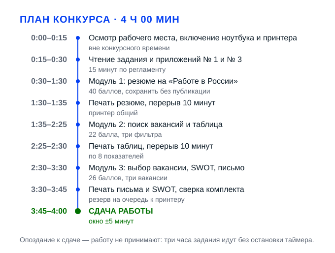
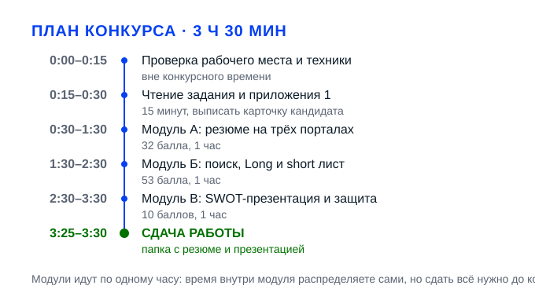
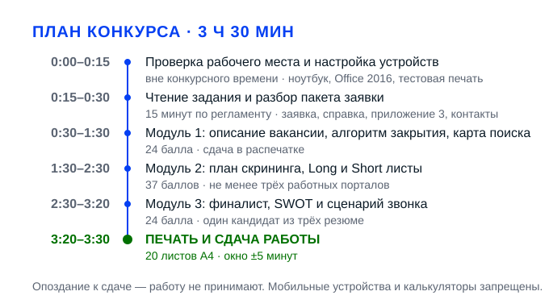

Специалист по подбору персонала (рекрутер) (Р)
Задания ниже — официальные файлы «Абилимпикс» (источник: abilympics-russia.ru), разложенные по категориям. Решения написаны по тексту задания, регламенту и критериям оценки; в них указано, что именно проверяет эксперт.
Школьник
14–16 лет, базовый уровень заданияВ официальном файле категории не разделены отдельными разделами — приводим задание целиком; различия по категориям смотрите в таблице модулей.
Пошаговое решение
Задание категории «Школьники» — это три часа, за которые нужно пройти весь путь рекрутера, только с другой стороны стола: сначала собрать резюме на портале «Работа в России», потом найти под этим резюме подходящие вакансии и, наконец, обосновать выбор одной из них в сопроводительном письме. Три модуля идут по часу и стоят 40, 22 и 26 баллов, плюс региональный модуль на 12 баллов, поэтому на раскачку времени нет: пятнадцать минут до старта уходят на осмотр места, ещё пятнадцать — на чтение задания. Главная ловушка в кажущейся простоте: портал примет любые данные, но жюри сверяет конкретные пункты вплоть до серии и номера диплома, а таблица вакансий оценивается по восьми показателям. Поэтому работаем по чек-листу критериев, а печатаем каждый документ сразу, как только он готов: принтер один, и очередь к нему в конце съедает баллы у всех.

Задача 1. Собрать полное резюме на портале «Работа в России»Модуль А · 40 баллов · 1 час
Первый модуль — самый дорогой: 40 баллов из 100 конкурсных. Кандидат, на которого составляется резюме, описан в приложении № 1, и ваша работа — перенести эти данные в форму портала без потерь, а затем сохранить резюме так, чтобы оно не опубликовалось, но жюри могло его открыть. Портал проверяет заполненность формально, а эксперт — по аспектам критерия А: отдельно смотрят вход через Госуслуги, навыки рекрутера, образование, дипломные реквизиты и дополнительные программы. Поэтому порядок такой: вход и настройка, потом блок за блоком по форме, потом сплошная проверка и печать.
Действие 1.1. Подготовить место и войти в личный кабинет
Шаг 1.1.1
Садимся и первые пять минут не открываем портал: сначала приводим место в рабочее состояние. Со стола убираем всё, что не относится к заданию, — сумку, верхнюю одежду, лишние листы. Ноутбук разворачиваем так, чтобы верхний край экрана был на уровне глаз, а сам экран стоял в 50–60 см от лица: раздел 6.2 задания требует не менее 50 см, оптимум — 60–70. Свет должен падать слева, блики на экране недопустимы, поэтому доворачиваем ноутбук боком к окну. Рядом с принтером заранее кладём 20 листов А4.
Три часа за одним экраном — это не спринт, а марафон, и посадка здесь работает на результат: при неверном расстоянии к третьему модулю начинаются ошибки в цифрах и опечатки в реквизитах, а каждая опечатка в форме резюме снимает балл по аспекту «В резюме заполнены все пункты, в соответствии с заданием» (5 баллов). Порядок на столе экономит минуты: 20 листов расходной бумаги выдаются на одного участника, и искать их в момент печати уже некогда.
Сели, положили руки на клавиатуру: локти примерно под девяносто градусов, плечи опущены, спина касается спинки. Отведите взгляд от экрана — расстояние должно быть не меньше длины вытянутой руки. На тёмном экране не видно отражения лампы или окна, на столе нет ни одного предмета, которого не требует задание.
Типичная ошибка — сразу сесть за портал, оставив куртку на спинке стула и телефон рядом с клавиатурой. Телефон и планшет на площадке запрещены прямым перечнем раздела 3, и обнаружение устройства — это не «минус балл», а разговор с главным экспертом. Вторая ошибка — работать в верхней одежде: это прямо запрещено пунктом 6.1.4.
Эксперт обходит площадку в первые минуты и фиксирует состояние места до старта: расстояние до экрана, отсутствие запрещённых устройств, порядок на столе. Дальше он смотрит на это вскользь, но стартовое замечание уже попадает в протокол.
Шаг 1.1.2
Открываем браузер и заходим на trudvsem.ru — это и есть портал «Работа в России». Нажимаем «Войти» и выбираем вход через Госуслуги: откроется отдельное окно ЕСИА, где вводим логин и пароль из раздаточных материалов. Если портал предлагает выбрать роль, берём роль соискателя, а не работодателя, иначе вместо резюме откроется карточка компании. После возврата на портал проверяем, что в правом верхнем углу появилось имя из раздатки, а в личном кабинете есть раздел «Резюме».
Вход через Госуслуги — отдельный аспект критерия А стоимостью 4 балла, самый крупный единичный балл модуля, и он проверяется буквально: эксперт смотрит, каким способом выполнен вход и открывается ли личный кабинет. Если войти по отдельной регистрации портала, формально резюме тоже создастся, но эти 4 балла уже не вернуть, а восстановить вход через ЕСИА в середине работы означает потерять ещё и время.
В шапке портала видно имя кандидата из приложения № 1, в личном кабинете открывается раздел «Резюме» со списком (пустым или с черновиком), а в адресной строке стоит домен trudvsem.ru, а не страница-посредник. Если выскочило окно с выбором учётной записи — выбираем ту, что указана в раздатке.
Самая частая ошибка — ввести пароль от своего кабинета Госуслуг, а не выданного на площадке: портал пускает, но данные кандидата в резюме не сойдутся с приложением № 1. Вторая — закрыть окно ЕСИА крестиком, решив, что «вход не нужен»: без авторизации форма резюме недоступна, и первые десять минут уходят впустую.
Эксперт подходит в момент входа и смотрит на экран: адрес портала, окно ЕСИА, имя в шапке. Именно здесь набираются те 4 балла, поэтому не стоит закрывать вкладку с подтверждением входа до конца модуля.
Шаг 1.1.3
Прежде чем открывать форму резюме, разбираем приложение № 1 и выписываем данные в черновик: в блокноте или в отдельном документе Word столбиком идут фамилия, имя, отчество, дата рождения, адрес, телефон, образование, учебное заведение, факультет, год окончания, тема дипломной работы, квалификация, специальность, серия и номер диплома, дополнительные программы. Каждую строку перечитываем дважды: цифры сверяем посимвольно, потому что серия и номер диплома в задании заданы жёстко — серия 1, номер 2.
Форма портала не сохраняет промежуточные состояния надёжно: если переключаться между разделами с непроверенными данными, часть полей молча очищается. Черновик на бумаге или в Word решает две задачи сразу — даёт возможность сверять каждое поле с приложением № 1 и страхует от потери текста, за который начисляются баллы по аспектам «Тема дипломной работы» (2 балла) и «Серия, номер и дата выдачи диплома» (1 балл).
В черновике столько строк, сколько значимых полей в приложении № 1, и ни одна строка не оставлена «потом». Проверьте себя так: закройте приложение и попробуйте назвать тему дипломной работы и год окончания — если не получается, черновик неполный.
Ошибка новичка — заполнять форму, держа приложение № 1 на коленях и перелистывая страницы: на перелистывание уходит по минуте на поле, а на пятом поле начинается путаница между годом окончания и датой выдачи диплома. В итоге дата выдачи не совпадает с датой презентации работы, и балл теряется.
Эксперт видит черновик на столе и оценивает его как признак системной работы; но главное — он сверяет итоговые поля формы с приложением № 1 построчно, и расхождение в одной цифре стоит балла.
Действие 1.2. Заполнить желаемую должность и пожелания к вакансии
Шаг 1.2.1
В личном кабинете нажимаем «Создать резюме». Первый блок — желаемая должность: вводим «Специалист по подбору персонала» и, если портал предлагает подсказки из справочника, выбираем вариант с пометкой «рекрутер», а не свободный текст. Ниже выбираем сферу деятельности — «Управление персоналом, подбор персонала» — и специализацию «Рекрутер / специалист по подбору персонала». Если справочник не даёт точного совпадения, берём ближайшее по смыслу и дописываем уточнение в поле комментария.
Должность и специализация — это рамка, по которой портал подбирает вакансии в третьем модуле, и одновременно критерий: аспект «В пункте профессиональные навыки выбраны или добавлены, соответствующие должности рекрутер» стоит 3 балла, а согласованность блока оценивается вместе с аспектом «Все остальные пункты формы заполнены» (1 балл). Если оставить поле пустым, портал подставит «любая», и поиск в модуле Б выдаст вакансии грузчика и продавца.
В карточке резюме в списке отображается «Специалист по подбору персонала», в сфере — управление персоналом, в специализации — подбор персонала. Откройте предпросмотр: строка желаемой должности стоит первой и читается без сокращений.
Часто пишут «рекрутер» в свободном поле и не выбирают специализацию: резюме сохраняется, но при поиске вакансий фильтр по профессиональной области не срабатывает. Вторая ошибка — выбрать сферу «Административный персонал»: она выглядит близкой, но вакансии по ней в регионе другие, и третий модуль придётся обосновывать по чужим должностям.
Эксперт открывает резюме из личного кабинета и смотрит первый экран: должность, сфера, специализация. Это самая быстрая проверка, и она задаёт впечатление о всей работе с формой.
Шаг 1.2.2
Заполняем блок условий: желаемая заработная плата, тип занятости, график, готовность к командировкам и переезду. По заданию кандидат ищет вакансии с удалённым типом занятости, поэтому ставим галочку «удалённая работа» (или «дистанционная занятость» — формулировка портала меняется), график — полный день, командировки — «нет». Сумму указываем ту, что дана в приложении № 1; если она не указана, ставим диапазон от средней по региону и не занижаем нижнюю границу.
Пожелания к вакансии — отдельный аспект на 1 балл, но его роль больше: этот же фильтр портал применяет, когда вы ищете вакансии во втором модуле, и если тип занятости не отмечен, в выдаче окажутся офисные вакансии без удалёнки. Аспект «Тип занятости — удаленный» в модуле Б стоит 3 балла, и он проверяется по скриншоту фильтра, а не по намерениям.
В предпросмотре резюме в блоке условий стоит «удалённая работа», заработная плата совпадает с цифрой из приложения № 1 (или с выбранным диапазоном), командировки — «нет». Проверьте, что галочка не слетела после сохранения блока: портал иногда сбрасывает тип занятости при переключении вкладок.
Ошибка — оставить заработную плату пустой, «чтобы не отсекать вакансии»: портал в этом случае показывает всё подряд, а эксперт фиксирует незаполненный пункт. Вторая — поставить «любой тип занятости»: тогда в модуле Б вы отберёте вакансии с полным днём и потеряете 3 балла за фильтр.
Эксперт сверяет блок условий с приложением № 1 и с требованиями задания: удалённый тип занятости должен быть виден в карточке резюме, а не только в фильтре поиска.
Шаг 1.2.3
Отдельно проходим профориентационный тест, который портал предлагает в разделе «Профориентация» или прямо в карточке резюме. Отвечаем на все вопросы до конца, не пропуская ни одного: незавершённый тест не засчитывается. Результат сохраняем и, если портал предлагает прикрепить его к резюме, прикрепляем — тогда в карточке появится отметка о пройденном тестировании. На тест уходит 8–10 минут, дольше не задерживаемся: он стоит 3 балла, а модуль — 40.
Аспект «Заполненный тест из профориентационных тестов» — это 3 балла, и они начисляются только за завершённый и сохранённый результат. Логика критерия простая: рекрутер должен уметь проходить оценочные процедуры сам, чтобы понимать, как их проходит кандидат. Пропущенный тест — это не «мелочь на потом», а прямой минус, который невозможно компенсировать качеством текста резюме.
В карточке резюме или в разделе «Профориентация» видно, что тест пройден и результат сохранён; шкала прогресса показывает 100 процентов, а не половину. Если портал показывает кнопку «Продолжить тест» — он не завершён, возвращайтесь и отвечайте до конца.
Типичная ошибка — пройти половину вопросов, закрыть вкладку и вернуться к резюме: портал сохраняет черновик, а не результат, и 3 балла не начисляются. Вторая — отвечать наугад, лишь бы быстрее: результат сохранится, но эксперт может попросить показать его и задать вопрос по итогам.
Эксперт проверяет наличие завершённого теста в карточке и может попросить показать результат на экране. Делается это в конце модуля А, вместе с общей проверкой заполненности.
Шаг 1.2.4
Проверяем блок контактов: телефон, электронная почта, город проживания, готовность к переезду. Данные берём из приложения № 1, почту указываем рабочую по формату имя.фамилия@ — портал отклоняет адреса без домена верхнего уровня. Город ставим тот, что указан в приложении, а не город проведения соревнований: это разные вещи, и подмена ломает логику подбора вакансий. Фотографию не загружаем, если её нет в раздатке.
Контакты входят в тот самый 1 балл за «все остальные пункты формы», но важнее другое: по контактам работодатель связывается с кандидатом, и в третьем модуле сопроводительное письмо должно быть логически связано с этими данными. Ошибка в городе приводит к тому, что поиск вакансий по региону соревнования даёт вакансии «не по месту», и обоснование выбора рассыпается.
Телефон записан в формате +7 и содержит 11 цифр, почта проходит проверку портала (не появляется красная рамка), город совпадает с приложением № 1 буква в букву. В предпросмотре контакты видны и не обрезаны.
Частая ошибка — вписать город соревнований «вместо» города кандидата, решив, что так логичнее для поиска по региону. В итоге в резюме недостоверные данные, а регион в модуле Б всё равно задаётся фильтром, не городом в контактах. Вторая — опечатка в телефоне, из-за которой карточка выглядит небрежно.
Эксперт сверяет контакты с приложением № 1 глазами, без инструментов: это одна из тех проверок, где расхождение видно сразу и стоит дешево, а выглядит плохо.
Действие 1.3. Заполнить образование и дипломные реквизиты
Шаг 1.3.1
В блоке «Образование» выбираем уровень «Среднее» — именно так, как требует критерий, а не «среднее специальное» и не «неоконченное высшее». В поле «Учёная степень» ставим «нет»: портал предлагает список, и пустое поле здесь не равнозначно ответу «нет». Если форма даёт отдельные строки под уровень и под степень, заполняем обе, не оставляя ни одной пустой.
Два отдельных аспекта критерия А — «В пункте образование введено — среднее» (2 балла) и «В пункте учёная степень введено — нет» (2 балла). Они выглядят формальностью, но проверяются буквально по значению в поле: выбранный «среднее специальное» уровень уже не совпадает с эталоном, и балл снимается, даже если всё остальное заполнено идеально.
В карточке резюме в строке образования стоит ровно «Среднее», в строке учёной степени — «Нет». Откройте выпадающий список ещё раз: выбранное значение подсвечено, а не просто вписано серым текстом подсказки.
Ошибка — оставить учёную степень пустой, считая, что «нет» подразумевается само собой: портал сохраняет пустое значение, эксперт видит незаполненный пункт и снимает 2 балла. Вторая — выбрать «среднее общее» вместо «среднее»: формулировки похожи, но в критерии указано одно значение.
Эксперт открывает блок образования в карточке и читает два поля подряд. На это уходит несколько секунд, и именно поэтому здесь нельзя рассчитывать на снисхождение.
Шаг 1.3.2
В поле «Учебное заведение» начинаем вводить название и ждём, пока портал предложит вариант из справочника: выбираем его, а не дописываем вручную. Если учебного заведения в справочнике нет — вводим полное наименование так, как оно указано в приложении № 1, без сокращений «СОШ № 5» и без кавычек-ёлочек, которые портал иногда обрезает. После выбора проверяем, что подставились город и тип организации.
Аспект «В пункте учебное заведение либо введено наименование учебного заведения участника или добавлено» стоит 2 балла. Свободный текст портал хранит как есть, поэтому сокращение превращается в строку, которую невозможно сопоставить со справочником, и эксперт видит формально заполненное, но нечитаемое поле. Выбор из справочника ещё и подтягивает город — его потом видно в карточке.
Название в карточке читается полностью, без обрезанных слов и без двойных пробелов. Рядом отображается город. Если портал показывает значок «добавлено вручную» — это допустимо, но проверьте написание по приложению № 1 посимвольно.
Частая ошибка — вписать название в спешке и не заметить, что портал подставил похожее учебное заведение из другого города: строка выглядит правильно, а город в карточке чужой. Вторая — оставить поле пустым, потому что «школа не вуз, зачем она в резюме»: критерий требует именно это поле.
Эксперт сверяет название с приложением № 1 и смотрит, не подставлено ли постороннее заведение из подсказок. Проверка идёт вместе с остальным блоком образования.
Шаг 1.3.3
В поле «Факультет» вводим «Управление персоналом» — ровно в этой формулировке, даже если по приложению № 1 у кандидата другая специальность: критерий задаёт значение жёстко. Ниже ставим год окончания обучения — год окончания вашего образовательного учреждения, а не текущий год и не год поступления. Если форма просит месяц, ставим июнь: это стандартное окончание учебного года.
Аспект «В пункте факультет вводим — управление персоналом, введён год окончания обучения — год своего окончания обучения» — это 3 балла, один из самых весомых пунктов блока образования. Значение «управление персоналом» связывает резюме с профессией рекрутера, а год окончания проверяется на правдоподобие: если поставить текущий год, получится, что кандидат ещё учится, и логика резюме ломается.
В карточке стоит «Управление персоналом» и год, в котором вы действительно заканчиваете обучение. Сверьте с приложением № 1: если там указан другой год, приоритет у приложения, а не у вашей памяти. Проверьте, что год не подставился из подсказки портала при выборе учебного заведения.
Ошибка — написать «менеджмент» или «экономика» по привычке, потому что «управление персоналом» кажется слишком узким. Критерий проверяет конкретную строку, и синоним стоит 3 балла. Вторая — поставить год окончания на год позже, перепутав с датой выдачи диплома.
Эксперт читает факультет и год вместе: это пара полей, по которой видно, заполнял человек по заданию или по памяти. Смотрит в конце модуля А, одновременно с уровнем образования и учёной степенью, потому что все четыре значения относятся к одному аспекту критерия.
Шаг 1.3.4
В поле «Тема дипломной работы» вводим название любой работы, связанной с темой подбора: например, «Современные методы поиска персонала на рынке труда региона» или «Профориентация школьников как первый этап подбора персонала». Название пишем с заглавной буквы, без кавычек, длиной в одну строку — портал обрезает текст после 150 знаков. Если у кандидата в приложении № 1 тема указана, берём её дословно.
Аспект «В пункте название дипломной работы введено название любой работы, выполненной по теме, связанной с работой (поиск работы, поиск персонала, кадровое дело, ситуация на рынке труда, профориентация)» — 2 балла. Здесь критерий намеренно мягкий: тема может быть любой из перечисленных, важно, чтобы она была по существу профессии. Пустое поле или тема «Мой любимый город» балл не приносят.
Тема в карточке видна полностью, не обрезана многоточием, в ней есть слово из разрешённого круга: подбор, персонал, кадры, рынок труда, профориентация. Прочитайте её вслух — звучит как название работы, а не как заголовок сочинения.
Типичная ошибка — оставить поле пустым, потому что «дипломной работы ещё нет». Критерий разрешает любую работу по теме, поэтому 2 балла теряются на ровном месте. Вторая — написать тему слишком общо, например «Кадры», и получить строку, которая не читается как название.
Эксперт читает тему и оценивает, связана ли она с профессией. Дальше он может задать один вопрос по теме — чаще всего просят сказать, почему выбрана именно она.
Шаг 1.3.5
Заполняем дипломные реквизиты: квалификация по диплому — «менеджер по персоналу», специальность по диплому — «рекрутер», серия — 1, номер — 2, дата выдачи — дата презентации вашей работы, то есть дата конкурсного дня. Дату ставим через календарь портала, а не вручную, иначе формат не совпадёт и поле подсветится красным. Все пять значений вводим подряд, не переключаясь на другие блоки.
Здесь набирается сразу 5 баллов: 2 за квалификацию «менеджер по персоналу», 2 за специальность «рекрутер» и 1 за связку серии, номера и даты выдачи. Критерий задаёт точные значения — серия 1, номер 2, дата презентации, — поэтому «правдоподобные» реквизиты из головы не подойдут: эксперт сверяет цифры с заданием, и любая другая серия стоит балла.
В карточке стоят: квалификация «менеджер по персоналу», специальность «рекрутер», серия 1, номер 2, дата — сегодняшняя. Проверьте, что дата не съехала на год назад: портал иногда подставляет год из предыдущей сессии.
Самая обидная ошибка — вписать реальные серию и номер своего документа об образовании: выглядит честно, но не совпадает с заданием и стоит 1 балл. Вторая — перепутать местами квалификацию и специальность, тогда оба поля формально заполнены, а оба балла потеряны.
Эксперт открывает блок диплома и сверяет пять значений с критерием построчно: квалификация, специальность, серия, номер, дата. Это самая механическая часть проверки, и здесь снисхождения не бывает — цифры либо совпадают с заданием, либо балл снят.
Действие 1.4. Заполнить навыки, опыт и дополнительное образование
Шаг 1.4.1
В блоке «Профессиональные навыки» выбираем из подсказок портала всё, что относится к подбору персонала: поиск кандидатов, скрининг резюме, проведение интервью, работа с job-сайтами, знание рынка труда, работа в MS Office, ведение базы кандидатов. Набираем 6–8 навыков, не больше: список из двадцати пунктов читается как случайный набор. Если нужного навыка нет в подсказках, добавляем его вручную через «Добавить свой навык».
Аспект «В пункте профессиональные навыки выбраны или добавлены, соответствующие должности рекрутер» стоит 3 балла, и проверяется он по смыслу: навыки должны быть про подбор, а не про «вождение автомобиля» и «игру на гитаре». Кроме того, этот блок портал использует при сопоставлении резюме с вакансиями, поэтому правильные навыки прямо влияют на выдачу в модуле Б.
Прочитайте список и мысленно примерьте его к вакансии «специалист по подбору персонала»: каждый пункт должен звучать уместно в этой вакансии. Если половина навыков не про подбор — удаляйте лишние, а не добавляйте ещё.
Ошибка — набрать всё, что предлагает портал, включая «стрессоустойчивость» в разделе профессиональных навыков: мягкие навыки имеют отдельный блок, и их дублирование сбивает оценку. Вторая — оставить блок пустым, потому что «навыков пока нет»: 3 балла снимаются сразу.
Эксперт просматривает список навыков и отмечает, есть ли в нём ключевые для рекрутера: поиск, скрининг, интервью, работа с порталами. Смотрит вместе с блоком гибких навыков.
Шаг 1.4.2
Переходим в блок «Гибкие навыки» (soft skills) и отмечаем то, что действительно нужно рекрутеру: коммуникабельность, умение слушать, эмпатия, стрессоустойчивость, организованность, навык ведения переговоров. Достаточно пяти-шести пунктов. Если портал позволяет добавить свой вариант — добавляем «навык активного слушания»: в подборе он ключевой и в стандартном списке встречается не всегда.
Аспект «В пункте гибкие навыки выбраны или добавлены соответствующие должности рекрутер» — 2 балла. Критерий отделяет мягкие навыки от профессиональных намеренно: рекрутер работает с людьми, и без коммуникации и эмпатии инструменты подбора не работают. Список из одних «лидерских качеств» выглядит как резюме менеджера, а не рекрутера, и балл не приносит.
В карточке гибкие навыки стоят отдельным блоком и не дублируют профессиональные. Проверьте, что среди них есть хотя бы один про общение и хотя бы один про организованность — это ядро профессии. Если портал показывает навыки одним общим списком, убедитесь, что выбранные вами отмечены как гибкие, а не попали в профессиональные.
Частая ошибка — скопировать мягкие навыки в профессиональные, чтобы «было побольше»: блоки оцениваются раздельно, и дублирование читается как непонимание разницы. Вторая — выбрать «лидерство» и «управление проектами»: для рядовой позиции рекрутера это выглядит неуместно.
Эксперт сравнивает два блока навыков между собой и с профессией. Ему важно увидеть, что участник понимает разницу между инструментами работы и качествами человека.
Шаг 1.4.3
В блоке «Дополнительное образование» вводим не менее двух программ: например, «Курс по подбору персонала, 2025, 36 часов» и «Практикум по составлению резюме и подготовке к собеседованию, 2025, 16 часов». Для каждой указываем название, организацию, год и, если поле есть, количество часов. Вторую программу добавляем через кнопку «Добавить», а не вписываем в одно поле через запятую.
Аспект «В пункте дополнительное образование введены названия всех образовательных программ и курсов (не менее двух)» стоит 3 балла, и слово «всех» здесь ключевое: если в приложении № 1 перечислены три программы, а вы ввели две, критерий выполнен частично. Две отдельные записи с организацией и годом выглядят как реальные документы, одна строка через запятую — как отписка.
В карточке видно две и более отдельные записи, у каждой есть название, организация и год. Если приложение № 1 содержит больше программ — сверьте, что перенесены все, а не только первые две. Проверьте также, что записи не слиплись в одну строку после сохранения формы.
Типичная ошибка — вписать «курсы» одной строкой без названия и года: формально поле не пустое, но критерий требует названий программ, и 3 балла не начисляются. Вторая — придумать программы «для солидности» и не суметь ответить на вопрос эксперта, что там было.
Эксперт читает записи и может попросить назвать одну из программ и то, что она дала. Вопрос задаётся в конце модуля, во время общей проверки резюме, и ответ «не помню» обесценивает запись.
Шаг 1.4.4
Заполняем блок «Опыт работы». Если у кандидата из приложения № 1 опыт указан — переносим каждое место отдельной записью: организация, должность, начало и окончание работы, обязанности двумя-тремя строками. Если опыта нет, не оставляем блок пустым: пишем «без опыта» и добавляем в обязанности описание учебных проектов — участие в профориентационных мероприятиях, помощь в составлении резюме одноклассникам.
Блок опыта входит в аспект «Все остальные пункты формы заполнены» (1 балл) и, что важнее, в логику третьего модуля: сопроводительное письмо должно опираться на реальные данные резюме, а не на воздух. Пустой блок опыта при живом тексте письма — внутреннее противоречие, которое эксперт замечает сразу.
В карточке блок опыта не пустой: либо есть записи с датами, либо явная отметка «без опыта» с описанием учебной практики. Даты не пересекаются между собой и не уходят в будущее. Если портал требует указать организацию, а опыта нет, вписывайте учебное заведение — это допустимо и лучше пустого поля.
Ошибка — оставить блок пустым, потому что «школьнику нечего написать»: портал позволяет отметить отсутствие опыта, и это нормально, а пустое поле — нет. Вторая — придумать работу в кадровом агентстве, которую потом невозможно подтвердить ни одним словом.
Эксперт смотрит на опыт работы в связке с блоком навыков: если в навыках заявлен скрининг резюме, а в опыте пусто, он задаст вопрос — где этот навык применялся.
Действие 1.5. Сохранить резюме без публикации и распечатать
Шаг 1.5.1
Проходим форму сверху вниз ещё раз, поле за полем, и отмечаем в черновике галочкой каждое заполненное. Особое внимание трём вещам: нет ли красных рамок с ошибками, не слетели ли выпадающие значения после сохранения, не осталось ли пустых необязательных полей — «о себе», «гражданство», «знание языков». В «О себе» добавляем два-три предложения о мотивации к профессии рекрутера.
За «В резюме заполнены все пункты, в соответствии с заданием» дают 5 баллов — столько же, сколько за всю таблицу вакансий, и это самый крупный аспект модуля. Проверка идёт по полноте формы, а не по красоте текста, поэтому пустое поле «О себе» стоит дороже, чем неудачная формулировка в заполненном.
Пройдите форму с самого верха: ни одного пустого поля, ни одной красной подсказки, в каждом выпадающем списке выбрано значение. Счётчик заполненности, если он есть, показывает 100 процентов. Отдельно откройте предпросмотр и пролистайте до конца: там видно поля, которые форма считает заполненными, а карточка не показывает.
Типичная ошибка — проверить только те блоки, которые заполняли последними: выпадающие значения из первого блока к этому моменту уже слетели, и 5 баллов уходят. Вторая — оставить «О себе» пустым, посчитав его необязательным.
Эксперт открывает резюме и листает сверху вниз, отмечая пустые поля. Это основная часть проверки модуля А, и она занимает у него больше всего времени.
Шаг 1.5.2
Нажимаем «Сохранить», а затем в настройках видимости выбираем вариант, при котором резюме не публикуется: «не видно никому» или «скрыть от работодателей». После сохранения возвращаемся в список резюме и проверяем статус: он должен читаться как черновик или скрытое резюме, а не «опубликовано». Ссылку на резюме копируем в черновик — она пригодится при сдаче.
Аспект «Резюме сохранено без публикации с возможностью ознакомиться с выполненным заданием жюри» — 2 балла, и здесь важно выполнить обе половины: и не опубликовать, и оставить доступ. Публикация — нарушение задания: резюме с вымышленными данными не должно попасть в базу соискателей, а если скрыть его полностью, жюри нечего проверять.
В списке резюме напротив записи стоит статус «скрыто» или «черновик», а не «опубликовано». Резюме открывается по вашей ссылке в режиме просмотра, и в нём видны все заполненные блоки. Проверьте ссылку в режиме инкогнито: если карточка открывается без входа, значит жюри тоже её увидит.
Самая частая ошибка — нажать «Опубликовать» по привычке, потому что кнопка крупнее и стоит первой: резюме уходит в базу, и 2 балла теряются, а в худшем случае эксперт попросит снять публикацию и это съест время. Вторая — удалить резюме вместо скрытия: проверять будет нечего.
Эксперт заходит в личный кабинет участника и открывает резюме по ссылке. Он смотрит и на статус видимости, и на то, открывается ли карточка, поэтому обе половины аспекта нужно выполнить: и скрыть от работодателей, и оставить доступ для проверки.
Шаг 1.5.3
Печатаем резюме: Ctrl+P, в настройках печати выбираем принтер площадки, формат А4, книжная ориентация, масштаб «по размеру страницы», поля обычные. Включаем печать фона, если карточка содержит цветные блоки, — иначе часть оформления пропадёт. Листы забираем сразу, не оставляя их в лотке: принтер сетевой и общий. Распечатанный экземпляр подписываем в правом верхнем углу номером участника.
Распечатанный экземпляр — это то, что остаётся у жюри после конкурса, и без него проверка идёт только по экрану. На печать 20 листов уходит 3–5 минут, а принтер один на площадку, поэтому печатать нужно в своём модуле, а не в последние пятнадцать минут, когда к нему выстраивается очередь из всех участников.
На листах читается весь текст, нет обрезанных правых полей и серых полос от закончившегося тонера. Все страницы на месте, нумерация не потерялась, подпись с номером участника стоит на первом листе. Сверьте количество листов со счётчиком в предпросмотре: если напечаталось меньше, принтер захватил два листа сразу.
Ошибка — печатать с масштабом «на всю страницу» и получить обрезанный правый край, где как раз стоят значения выпадающих полей. Вторая — отложить печать на конец и застрять в очереди: 20 листов на четверых участников это десять минут ожидания.
Эксперт принимает распечатку при сдаче модуля и сверяет её с экраном. Расхождение между бумагой и карточкой — повод для уточняющих вопросов, поэтому печатайте после финального сохранения, а не до него.
Задача 2. Найти подходящие вакансии и заполнить таблицуМодуль Б · 22 балла · 1 час
Второй модуль проверяет, умеете ли вы пользоваться порталом как соискатель: войти в личный кабинет по выданным данным, открыть поиск работы, поставить три фильтра — запрос «рекрутер», регион соревнования и удалённый тип занятости — и найти не менее пяти вакансий, которые действительно соответствуют запросу. Дальше из найденного нужно собрать таблицу по восьми показателям и распечатать её. Баллы распределены так: по 3 за каждое действие с фильтрами и вкладкой, 5 за пять найденных вакансий и 5 за заполненную таблицу, поэтому «нашёл, но не записал» здесь равно «не нашёл».
Действие 2.1. Войти и настроить поиск
Шаг 2.1.1
Выходим из своего личного кабинета и входим заново по логину и паролю из раздаточных материалов: задание требует работать именно из выданного кабинета, а не из личного. Вводим данные вручную, без автозаполнения браузера, и после входа проверяем, что в шапке портала стоит имя из раздатки. Если браузер предлагает сохранить пароль — отказываемся, это чужой аккаунт.
Эксперт проверяет, что работа велась из выданного кабинета: именно в нём сохраняется история поиска и видно, какие фильтры вы ставили. Если искать из своего аккаунта, все действия окажутся вне проверяемой зоны, и баллы за модуль Б — а это 22 балла — начислять будет не на что.
В шапке портала имя из раздатки, а не ваше. В личном кабинете открывается раздел «Поиск работы», и портал не предлагает заполнить профиль соискателя с нуля — значит, кабинет рабочий. Если видите приветственное окно с предложением создать резюме, кабинет пустой: проверьте, тот ли логин ввели.
Частая ошибка — остаться в своём кабинете, потому что браузер подставил сохранённый пароль: вход выглядит успешным, но проверять нечего. Вторая — ввести логин с лишним пробелом в конце, скопировав его из раздатки, и получить отказ, потеряв на повтор пять минут.
Эксперт подходит в начале модуля и смотрит имя в шапке. Дальше он может вернуться в момент заполнения таблицы и проверить, что вкладки открыты в том же кабинете.
Шаг 2.1.2
Из личного кабинета открываем вкладку «Поиск работы» — не главную страницу портала и не раздел «Вакансии» из общего меню, а именно вкладку внутри кабинета. Если портал предлагает два пути, выбираем тот, что открывается из кабинета соискателя: в адресной строке появится раздел поиска с фильтрами слева или сверху. Вкладку не закрываем до конца модуля.
Аспект «На сайте портала из личного кабинета зашёл во вкладку: Поиск работы» стоит 3 балла и проверяется буквально по навигации: эксперт смотрит, из какого раздела начат поиск. Поиск с главной страницы даёт тот же список вакансий, но формально это другой маршрут, и балл за него не начисляют.
В адресной строке видно, что вы внутри личного кабинета, а на странице есть поля фильтров: ключевое слово, регион, тип занятости. Слева или сверху отображается счётчик найденных вакансий. Если счётчика нет и фильтров не видно, вы попали в общий раздел, а не во вкладку кабинета.
Ошибка — искать через главную страницу портала, где форма выглядит так же: результат тот же, а 3 балла за маршрут потеряны. Вторая — открыть раздел «Резюме» и искать оттуда: фильтров там нет, и время уходит на блуждание по меню.
Эксперт смотрит на экран в момент, когда вы открываете вкладку, и запоминает маршрут. Если он подошёл позже, покажите историю переходов или просто не закрывайте вкладку.
Шаг 2.1.3
В поле ключевого слова вводим «рекрутер» — одно слово, без кавычек и без уточнений вроде «вакансии рекрутера удалённо». Нажимаем «Найти» и смотрим, сколько вакансий нашлось: если ноль, пробуем формулировку «специалист по подбору персонала», но в отчёте и в таблице фиксируем именно запрос «рекрутер», как требует критерий. После поиска не меняем запрос до конца модуля.
Аспект «В пункт поиск введена вакансия — рекрутер» — 3 балла. Критерий фиксирует конкретное слово, потому что оно соответствует профессии из названия компетенции. Расширенные запросы с уточнениями портал обрабатывает по-разному, и выдача может сузиться до нуля, что автоматически лишает 5 баллов за найденные вакансии.
В поле поиска стоит одно слово «рекрутер», счётчик найденных вакансий больше нуля, в списке видны должности с этим словом. Если портал подсказывает «Возможно, вы искали специалист по подбору персонала» — это нормально, запрос менять не нужно.
Типичная ошибка — вписать длинную фразу «вакансия рекрутер удалённо Москва»: портал ищет по всем словам сразу и выдаёт пустой список. Вторая — искать «HR-менеджер»: вакансии найдутся, но они не соответствуют заданному запросу, и балл за поиск не начисляется.
Эксперт проверяет поле поиска и количество результатов: слово «рекрутер» в поле и непустая выдача. Если вы успели сменить запрос на другой, верните исходный и повторите поиск — аспект оценивается по состоянию экрана в момент проверки.
Шаг 2.1.4
Ставим два фильтра. Первый — регион: выбираем субъект, в котором проходят соревнования, через выпадающий список или поле «Регион», а не вписываем город в ключевое слово. Второй — тип занятости: отмечаем «удалённая работа» (в некоторых версиях портала — «дистанционная»). После каждого фильтра смотрим, как меняется счётчик: он должен уменьшаться, но не до нуля. Если стало ноль — снимаем лишний фильтр и проверяем, что регион выбран правильно.
Два аспекта по 3 балла: «В пункт регион введено — регион соревнования» и «В пункт тип занятости введён — удалённый». Это не формальность: задание прямо требует искать вакансии по региону проведения соревнований с удалённым типом занятости, потому что именно такой запрос соответствует условиям кандидата. Фильтры в ключевом слове не заменяют фильтры в полях — эксперт смотрит именно на поля.
В поле региона стоит нужный субъект, в блоке типа занятости отмечен только «удалённая работа», счётчик выдачи больше нуля, и в каждой карточке видна пометка об удалённой работе. Проверьте, что регион выбран из списка, а не вписан в ключевое слово: в поле фильтра он должен отображаться отдельной плашкой.
Ошибка — вписать регион в поисковую строку вместе со словом «рекрутер»: поле региона остаётся пустым, и 3 балла теряются. Вторая — отметить сразу несколько типов занятости «на всякий случай»: тогда в выдачу попадут офисные вакансии, и фильтр будет считаться неверным.
Эксперт подходит и смотрит на панель фильтров целиком: слово, регион, тип занятости, счётчик. Это самый быстрый способ проверить сразу 12 баллов модуля.
Действие 2.2. Отобрать вакансии под запрос
Шаг 2.2.1
Просматриваем выдачу и отбираем не менее пяти вакансий, которые подходят по трём признакам: должность связана с подбором персонала, регион совпадает с регионом соревнования, тип занятости удалённый. Каждую подходящую вакансию сразу открываем в новой вкладке — так вы не потеряете её при возврате к списку. Пять — это минимум по критерию, поэтому добираем шесть-семь, чтобы две отсеять при проверке.
Аспект «На портале найдено не менее 5 вакансий, соответствующих требованиям запроса» стоит 5 баллов, столько же, сколько вся таблица. Пять — порог, и он проверяется по факту: если в таблице окажется четыре строки, балл снимается целиком, а не пропорционально. Запас в две вакансии страхует от того, что одна из них окажется просроченной.
Открытых вкладок с вакансиями не меньше пяти, в каждой видны название должности, регион и пометка об удалённой работе. Если хотя бы в одной вкладке регион другой — закрываем её и берём следующую из списка.
Частая ошибка — взять первые пять вакансий из выдачи, не проверяя регион: портал иногда показывает соседние регионы как «похожие». Вторая — отобрать ровно пять и потом обнаружить, что одна вакансия снята с публикации, а добирать уже некогда.
Эксперт смотрит на список открытых вакансий и на таблицу: количество и соответствие каждой. Пять вакансий — жёсткий порог критерия, и он проверяется по факту, а не по вашим словам о том, что вакансий было много.
Шаг 2.2.2
Читаем описание обязанностей в каждой карточке и отсеиваем те, где под словом «рекрутер» скрывается другое содержание: продажи по телефону, холодные звонки клиентам, набор персонала «на массовые акции». Оставляем вакансии, где есть поиск кандидатов, скрининг резюме, проведение интервью, взаимодействие с заказчиком. На отсев даём себе десять минут, не больше.
Баллы за пять вакансий начисляются только за соответствующие требованиям запроса, а в третьем модуле эти же вакансии нужно обосновывать. Если в таблицу попадёт «менеджер по продажам», обоснование рассыплется, и вы потеряете и 5 баллов модуля Б, и баллы за сильные и слабые стороны.
В описании каждой оставленной вакансии есть минимум два слова из круга подбора: поиск, скрининг, интервью, резюме, кандидат, подбор. Если в тексте только «звонки» и «план продаж» — вакансия не наша. Отмечайте результат прямо в черновике: плюс рядом с названием или вычёркивание.
Типичная ошибка — брать всё, где в названии есть «рекрутер», включая «рекрутер-продавец»: название совпадает, содержание нет. Вторая — отсеивать слишком строго и остаться с тремя вакансиями вместо пяти.
Эксперт читает описания обязанностей в вашей таблице и оценивает, действительно ли это вакансии рекрутера. Здесь видно, работали вы с текстом или только с заголовками.
Шаг 2.2.3
Для каждой оставленной вакансии копируем ссылку из адресной строки и вставляем в черновик рядом с названием. Проверяем, что ссылка ведёт на карточку вакансии, а не на страницу поиска с фильтрами: у страницы поиска адрес содержит служебные параметры. Затем фиксируем название компании и контактные данные, отдельно помечая, взяты они с портала или с сайта работодателя.
В таблице есть отдельный показатель «Ссылка на объявление», и от его работоспособности зависит, сможет ли эксперт проверить остальные семь показателей. Ссылка на страницу поиска выглядит как ссылка, но через день выдача изменится, и проверка станет невозможной — а вместе с ней уйдут 5 баллов за таблицу.
Вставьте ссылку в новую вкладку браузера: открывается именно эта вакансия с её названием и компанией, а не список из двадцати карточек. Адрес короткий, без длинного хвоста служебных параметров. Проверьте так все три финальные вакансии, а не только первую.
Ошибка — скопировать адрес из списка результатов, не открывая карточку: ссылка ведёт на выдачу, которая через день изменится. Вторая — записать ссылку «потом», по памяти, и вставить в таблицу адрес главной страницы портала.
Эксперт выборочно открывает одну-две ссылки из таблицы и смотрит, ведут ли они на вакансии. Если ссылка открывает поиск, он вправе снизить оценку за весь блок таблицы, а не только за одну строку.
Шаг 2.2.4
Из отобранных вакансий выбираем три финальные — самые близкие к профессии рекрутера по обязанностям и самые полные по данным: у них должны быть видны зарплата, название компании и контакты. По каждой выписываем в черновик восемь показателей таблицы: наименование вакансии, регион, ссылку, описание обязанностей, название компании, контактные данные, тип занятости, заработную плату.
Три вакансии — это минимум, который требует третий модуль: критерий В начисляет 3 балла за то, что «из списка вакансий выбраны соответствующие заданию не менее 3-х». Восемь показателей заданы формой таблицы из задания, и пропуск любого из них — это минус по аспекту «Составлена и заполнена таблица по заданным критериям» (5 баллов).
В черновике три блока по восемь строк, и ни одна строка не оставлена пустой. Если по вакансии не видно зарплаты, берём другую вакансию, а не пишем «не указана» — критерий требует отражённую заработную плату.
Ошибка — отобрать вакансии без зарплаты и написать «по договорённости»: показатель формально заполнен, но проверять его нечем. Вторая — оставить две вакансии вместо трёх, посчитав, что для сопроводительного письма хватит одной.
Эксперт сверяет количество выбранных вакансий с порогом «не менее трёх» и проверяет полноту восьми показателей по каждой. Ему важно увидеть, что выбранные вакансии есть в приложении № 3, а не найдены в сети по своему усмотрению.
Действие 2.3. Собрать и распечатать таблицу
Шаг 2.3.1
Открываем Word и создаём таблицу из девяти строк и двух столбцов: в первом столбце — названия показателей из задания, во втором — содержание. Сверху объединяем ячейки и пишем «Вакансия 1», ниже повторяем блок для второй и третьей вакансии. Шрифт ставим 12 пунктов, чтобы таблица читалась на печати, границы — все, ориентация страницы — книжная. Файл сохраняем на рабочий стол под именем с номером участника.
Задание даёт готовую форму таблицы с восемью показателями, и жюри проверяет именно её: аспект «Составлена и заполнена таблица по заданным критериям» стоит 5 баллов. Самодельная структура с другими столбцами читается как невыполненное задание, даже если данные в ней есть. Шрифт 12 пунктов — не эстетика: при печати мелкий кегль превращается в нечитаемые строки.
В таблице ровно восемь показателей в том же порядке, что в задании, и три блока «Вакансия 1–3». Предпросмотр печати показывает таблицу целиком по ширине, без разрыва посередине. Заголовки показателей читаются так же, как в задании, без ваших сокращений.
Ошибка — сделать таблицу «как удобно», объединив, например, компанию и контакты в одну строку: показателей становится семь, и балл снижается. Вторая — забыть про третий блок и оставить место под две вакансии.
Эксперт сравнивает структуру вашей таблицы с формой из задания построчно. Расхождение в названиях показателей он отмечает как недочёт, а отсутствие строки — как невыполненный пункт критерия.
Шаг 2.3.2
Заполняем второй столбец по каждой вакансии. Обязанности не переписываем целиком: сжимаем до трёх-четырёх ключевых пунктов через точку с запятой, сохраняя смысл. Название компании пишем так, как оно указано на портале, без «ООО» в кавычках, если портал их не показывает. Заработную плату переносим цифрами с указанием «на руки» или «до вычета», если это указано в вакансии.
Аспект «Описание обязанностей» входит в 5 баллов за таблицу, и оценивается не объём, а структурированность: короткие пункты читаются, сплошной абзац из карточки — нет. Зарплата и компания — те показатели, по которым в третьем модуле считается соответствие кандидату, поэтому цифры должны быть перенесены точно.
В каждой строке есть данные, а не прочерк. Обязанности занимают три-четыре пункта и читаются за десять секунд. Цифры зарплаты совпадают с карточкой вакансии, если открыть её рядом, а название компании написано так же, как на портале.
Частая ошибка — скопировать весь текст обязанностей из вакансии: таблица расползается на три страницы, и структура теряется. Вторая — округлить зарплату «примерно» и получить расхождение с карточкой, которое эксперт заметит при сверке.
Эксперт читает таблицу целиком и оценивает, можно ли по ней принять решение о вакансии, не открывая портал. Если да — 5 баллов заслужены, если приходится догадываться — нет.
Шаг 2.3.3
Заполняем контакты. Если на портале телефон и почта видны — переносим их. Если портал скрывает контакты до отклика, задание разрешает взять данные с сайта работодателя: открываем сайт компании, находим раздел «Контакты» и берём телефон отдела кадров или общую почту. В строке контактов указываем, откуда взяты данные: «портал» или «сайт работодателя».
Показатель «Контактные данные» есть в форме, и в задании прямо оговорено: при отсутствии данных на портале допускается взять их с сайта работодателя. Эта оговорка существует потому, что контакт — обязательная часть работы рекрутера: без него вакансия не считается переданной кандидату. Пустая строка читается как незаполненная таблица.
В строке есть телефон в формате с кодом города или почта с доменом, и указан источник данных. Проверьте, что телефон не является номером горячей линии продаж — для подбора нужен кадровый контакт или общая почта компании.
Ошибка — написать «контакты на портале» вместо данных: строка заполнена словами, но проверить её нельзя. Вторая — взять первый телефон с главной страницы сайта, который обычно ведёт в отдел продаж, и потерять балл за показатель.
Эксперт смотрит строку контактов и при сомнении просит открыть сайт работодателя. Пометка об источнике в строке снимает вопросы и экономит время проверки.
Шаг 2.3.4
Печатаем таблицу: Ctrl+P, проверяем предпросмотр, при необходимости ставим «вписать в одну страницу по ширине» и включаем повтор заголовков на каждой странице. Забираем листы сразу и складываем в папку вместе с распечаткой резюме из первого модуля. На каждом листе в правом верхнем углу пишем номер участника и номер модуля, чтобы стопки не перепутались при сдаче.
Задание требует распечатать заполненные таблицы, и без бумажного экземпляра модуль считается несданным. Порядок в папке экономит время на сдаче: жюри проверяет комплект целиком, и лист, выпавший из середины, может попасть не в ту стопку, а восстановить его в конце конкурса уже нечем.
На бумаге читаются все восемь строк и все три блока, ничего не обрезано по правому краю, заголовки повторяются на второй странице, если она есть. Листы в папке лежат в порядке модулей, подписи на месте.
Ошибка — печатать без предпросмотра и получить таблицу, разрезанную по столбцу: правый столбец уходит на второй лист. Вторая — оставить распечатку в лотке принтера, откуда её забирает следующий участник.
Эксперт принимает распечатку в конце модуля и сверяет её с файлом на экране. Подпись с номером участника на листах он тоже проверяет — по ней разбирает общую стопку работ.
Задача 3. Выбрать вакансию, разобрать её по SWOT и написать письмоМодуль В · 26 баллов · 1 час
Третий модуль — самый содержательный: нужно взять вакансии из приложения № 3, сопоставить их с кандидатом из приложения № 1, выбрать наиболее подходящую и обосновать выбор в сопроводительном письме. Критерий хитрее, чем кажется: 3 балла дают за то, что из списка выбраны соответствующие заданию не менее трёх вакансий, а дальше по 5 баллов идут сильные стороны, слабые стороны, возможности и риски — по всем выбранным вакансиям. То есть одной финальной вакансии мало: сначала сужаем список до трёх, потом выбираем одну и разбираем её по четырём квадрантам. Последние 3 балла — за креативность.
Действие 3.1. Сопоставить вакансии с кандидатом
Шаг 3.1.1
Открываем приложение № 3 и выписываем по каждой вакансии требования: опыт работы, тип занятости, образование, возрастные рамки, семейное положение, заработную плату, знания и навыки. Рядом выписываем данные кандидата из приложения № 1 по тем же семи пунктам. Получаются две колонки, которые можно сравнивать построчно, не возвращаясь к текстам, — и это экономит минут десять на модуле.
Критерий В требует обоснованного выбора, а обоснование строится на сравнении. Семь критериев перечислены в задании дословно, и эксперт проверяет, что вы работали именно с ними, а не с общим впечатлением «эта вакансия симпатичнее». Две колонки на бумаге ещё и страхуют от путаницы: в приложении № 3 несколько вакансий похожи, и через десять минут они сливаются в одну.
В черновике столько строк, сколько вакансий в приложении № 3, и по каждой заполнены все семь пунктов. Данные кандидата выписаны отдельно и не перемешаны с данными вакансий. Проверьте, что ни один пункт не оставлен пустым «потому что не указан»: в этом случае так и пишите — «не указан».
Типичная ошибка — читать вакансии «по диагонали» и выписывать только зарплату: тогда выбор делается по одному признаку, и обоснование в письме получается плоским. Вторая — перепутать, где чьи данные, и приписать кандидату требования вакансии.
Эксперт смотрит на черновик сопоставления, если он на бумаге, и на структуру письма. Наличие двух колонок сразу показывает, что сравнение велось по критериям.
Шаг 3.1.2
Идём по семи критериям и отмечаем совпадения и расхождения: плюсом — то, что совпало, минусом — то, что не совпало, вопросом — то, чего в данных нет. Если кандидат ищет удалённую работу, а вакансия офисная, это минус, и он важнее зарплаты. Подсчитываем, у какой вакансии больше плюсов при меньшем числе критичных минусов, и записываем вывод одной строкой.
Именно эта таблица плюсов и минусов превращается потом в квадранты SWOT, за которые дают 20 из 26 баллов модуля. Работа, сделанная здесь, экономит половину времени в следующем действии: сильные и слабые стороны просто переписываются с пояснениями. Без неё SWOT приходится придумывать, и он получается общим.
У каждой вакансии есть хотя бы один плюс и хотя бы один минус, а критические расхождения отмечены отдельно. Видно, какая вакансия лидирует и почему — одним предложением, без обращения к текстам. Если лидер определяется только по зарплате, перепроверьте тип занятости.
Ошибка — считать все критерии равными: тогда вакансия с высокой зарплатой и офисным графиком обгонит удалённую с меньшей зарплатой, хотя кандидат ищет именно удалёнку. Вторая — игнорировать пункты, где данных нет, вместо того чтобы отметить их как неизвестные.
Эксперт оценивает логику: совпадают ли выводы с данными. Если в таблице плюсов больше у одной вакансии, а выбрана другая без объяснения, он задаст вопрос.
Шаг 3.1.3
Сужаем список до трёх вакансий, наиболее подходящих кандидату, и только потом выбираем одну финальную. Три вакансии оформляем отдельным блоком: название, компания, зарплата, одно предложение о том, почему она в списке. Финальную помечаем явно — «выбрана для сопроводительного письма» — и рядом пишем два-три аргумента с опорой на критерии сравнения. Выбор фиксируйте письменно, а не в уме: через двадцать минут детали забудутся.
Критерий начисляет 3 балла за то, что «из списка вакансий выбраны соответствующие заданию не менее 3-х», и только после этого оценивает обоснование одной. Если в работе останется одна вакансия, эти 3 балла теряются, как бы хорошо ни был написан SWOT. Три подходящие вакансии — это ещё и профессиональная норма: рекрутер всегда приносит заказчику альтернативы.
В работе явно перечислены три вакансии с обоснованием по одной строке, и одна из них отмечена как финальная. Проверьте, что все три есть в приложении № 3, а не взяты из интернета, и что финальная вакансия есть в вашей таблице из модуля Б или хотя бы не противоречит ей.
Самая частая ошибка — сразу выбрать одну вакансию и писать по ней письмо, пропустив требование о трёх: минус 3 балла на ровном месте. Вторая — перечислить три вакансии, но не показать, какая финальная: эксперт не понимает, что разбирать в SWOT.
Эксперт первым делом считает количество выбранных вакансий. Три — порог, и он проверяется до чтения письма; только после этого он смотрит, обоснован ли выбор финальной.
Шаг 3.1.4
Проверяем выбор на прочность: представьте, что заказчик спрашивает «а почему не вторая вакансия». Если ответа нет — выбор случайный, и его нужно пересмотреть. Записываем по одному контраргументу к каждой из двух отброшенных вакансий: чем они хуже именно для этого кандидата. Эти контраргументы пригодятся в письме и в разделе рисков, поэтому держите их под рукой до конца модуля.
Обоснование оценивается по существу, и сильное обоснование всегда включает сравнение. Кроме того, раздел «Риски» в SWOT требует честного взгляда на слабые места выбора: если вы не видите, чем финальная вакансия хуже, риски получатся формальными и потеряют баллы.
На вопрос «почему не вторая» у вас есть ответ в одно-два предложения, и он опирается на критерий из задания, а не на «мне так кажется». Контраргументы записаны рядом с тройкой вакансий. Проверьте, что они не противоречат сильным сторонам финальной вакансии.
Ошибка — обосновывать выбор словами «более интересная» и «перспективная»: это не критерии, и эксперт их не засчитывает. Вторая — не заметить, что отброшенная вакансия подходит кандидату лучше по ключевому пункту, например по типу занятости.
Эксперт задаёт этот вопрос голосом при защите работы. Ответ «потому что ближе к дому» без опоры на критерии он не засчитывает, а ответ с цифрой или форматом занятости принимает сразу.
Действие 3.2. Разобрать вакансию по четырём квадрантам
Шаг 3.2.1
Рисуем квадрат и делим его на четыре части: сверху сильные стороны и слабые, снизу возможности и риски. В левый верхний квадрант пишем три-четыре сильные стороны вакансии для кандидата, каждая — с привязкой к данным: «удалённый формат совпадает с запросом кандидата», «зарплата в диапазоне, указанном в резюме», «в обязанностях есть скрининг резюме, то есть навык из резюме применим».
Аспект «Сильные стороны и преимущества вакансий указаны для всех выбранных вакансий» стоит 5 баллов — самый крупный в модуле вместе с остальными тремя квадрантами. Формулировки с привязкой к данным засчитываются, общие слова «хорошая компания» — нет: эксперт ищет связь с резюме кандидата, а не рекламу работодателя.
В квадранте не меньше трёх пунктов, и в каждом есть отсылка к конкретному факту: формату работы, сумме, обязанности, образованию. Если пункт можно перенести в разбор любой другой вакансии — он слишком общий.
Ошибка — написать «стабильная компания, дружный коллектив, интересная работа»: такие пункты подходят ко всему и не стоят баллов. Вторая — перечислить сильные стороны работодателя, а не выгоды для кандидата: критерий сформулирован именно про кандидата.
Эксперт читает квадрант и проверяет, связан ли каждый пункт с данными резюме. Это основная проверка модуля В: 5 баллов начисляются за конкретику, а не за количество строк.
Шаг 3.2.2
В правый верхний квадрант пишем слабые стороны — честно, но без самоуничтожения: «в вакансии не указан размер оклада, только диапазон», «требуется опыт от года, у кандидата опыта нет», «график с плавающими выходными». Три пункта достаточно. К каждому слабому месту сразу дописываем, насколько оно критично: устранимое или блокирующее, — это пригодится в письме.
Слабые стороны — тоже 5 баллов, и критерий требует указать их для всех выбранных вакансий. Честный разбор слабых мест показывает, что вы умеете смотреть на вакансию глазами кандидата, а не только продавать её. Разделение на устранимые и блокирующие пригодится в письме: устранимые становятся аргументами для переговоров.
В квадранте три пункта, каждый сформулирован как факт из текста вакансии, а не как ощущение. Рядом с каждым стоит пометка о критичности. Ни один пункт не противоречит сильным сторонам: если вы написали «нет опыта» и одновременно «опыт не требуется», разбор противоречив.
Ошибка — оставить квадрант пустым или написать «недостатков нет»: идеальных вакансий не бывает, и пустой квадрант читается как невыполненная работа. Вторая — записать в слабые стороны то, что кандидат не может изменить, и не отметить, что это блокирующий фактор.
Эксперт смотрит, не противоречат ли слабые стороны сильным и есть ли среди них те, что видны прямо в тексте вакансии. Расхождение с вакансией он проверяет по приложению № 3.
Шаг 3.2.3
В левый нижний квадрант пишем возможности — что кандидат получит, если взаимодействие состоится: «через год можно вырасти до старшего рекрутера, в вакансии есть наставник», «работа с разными отраслями даст опыт, которого нет в резюме», «удалённый формат позволит совмещать с учёбой». Три пункта, и у каждого горизонт: полгода, год, два. Возможность без срока — это пожелание, а не аргумент.
Возможности — 5 баллов, и это самый творческий квадрант: здесь видно, умеете ли вы видеть перспективу, а не только текущие условия. Горизонт делает пункт проверяемым: «перспективы роста» без срока — общая фраза, «рост до старшего рекрутера за год при выполнении плана» — аргумент.
В квадранте три пункта, у каждого указан срок и условие, при котором возможность реализуется. Пункты не дублируют сильные стороны: сильные — это то, что уже есть, возможности — то, что появится. Если формулировка подходит под сильную сторону, переставьте её.
Частая ошибка — написать «карьерный рост» и «хорошие перспективы»: это не отличается от сильных сторон и не даёт баллов. Вторая — придумать возможности, которых в вакансии нет, например обучение за счёт компании, если оно не упомянуто.
Эксперт проверяет, опираются ли возможности на текст вакансии и есть ли у них горизонт. Придуманные бонусы, которых в вакансии нет, он отмечает как недостоверные и снижает балл за глубину.
Шаг 3.2.4
В правый нижний квадрант пишем риски: что может пойти не так у кандидата и у работодателя. Для кандидата — «размытые обязанности, придётся делать и продажи», «высокая текучесть в отделе, судя по повторяющимся вакансиям», «удалёнка с ежедневными созвонами до вечера». Для работодателя — «нет опыта в подборе, потребуется обучение первые месяцы». Три-четыре пункта, у каждого — вероятность и последствие.
Риски — последние 5 баллов из 20 за SWOT, и критерий требует определить их во всех выбранных вакансиях. Риск, названный с двух сторон, показывает зрелость: рекрутер видит ситуацию и глазами кандидата, и глазами заказчика. Именно этот квадрант чаще всего остаётся пустым, и именно на нём теряют баллы.
В квадранте есть минимум один риск для кандидата и один для работодателя, у каждого указано, насколько он вероятен и чем грозит. Ни один риск не повторяет слабую сторону дословно. Если все риски сводятся к «может не подойти», разбор формальный.
Ошибка — написать «рисков нет» или ограничиться «конкурсом на вакансию»: это не риск, а условие. Вторая — перечислить только риски для кандидата и забыть сторону работодателя, хотя критерий говорит о взаимодействии двух сторон.
Эксперт читает квадрант рисков внимательнее остальных: здесь видно, понимает ли участник, что подбор — это управление рисками с двух сторон, а не поиск идеального кандидата.
Действие 3.3. Написать сопроводительное письмо
Шаг 3.3.1
Открываем новый документ Word и набрасываем каркас письма из пяти частей: обращение к адресату, какая вакансия и откуда взята, почему кандидат подходит — три аргумента, что кандидат предлагает работодателю, и завершение с контактами. Объём — одна страница, 12 пунктов, полтора интервала. Каркас пишем заголовками, текст наполняем после, чтобы не растекаться мыслью.
Сопроводительное письмо — форма сдачи результата модуля В: задание требует представить результат именно так и распечатать. Каркас из пяти частей не даёт скатиться в пересказ вакансии и удерживает объём: письмо на три страницы эксперт читает по диагонали, и аргументы теряются.
В документе пять смысловых блоков, каждый начинается с новой строки, общий объём не превышает страницы. Прочитайте только заголовки — логика письма понятна без текста. Если какой-то блок занимает больше трети страницы, его нужно сократить.
Ошибка — начать сразу с абзаца «Здравствуйте, меня зовут…» и уйти в автобиографию: аргументы по вакансии остаются в конце, где их уже не читают. Вторая — сделать письмо на две страницы с пересказом всех обязанностей.
Эксперт читает письмо целиком, но оценивает структуру с первого взгляда: видно ли, о какой вакансии речь и чем обоснован выбор. Каркас из пяти блоков он видит и в готовом тексте.
Шаг 3.3.2
Наполняем письмо. В первом абзаце — название вакансии, компания и источник: «по вакансии «Специалист по подбору персонала» компании … из приложения к конкурсному заданию». Во втором — три аргумента из сопоставления, каждый с фактом из резюме. В третьем — что кандидат готов сделать в первые месяцы. В конце — телефон и почта из резюме, слово в слово.
Аргументы должны опираться на те же критерии, по которым вы сравнивали вакансии: опыт, тип занятости, образование, навыки. Это делает письмо проверяемым и связывает его со SWOT — эксперт видит целостную работу, а не три несвязанных документа. Ссылка на источник вакансии показывает, что задание выполнено по приложению № 3, а не по случайной вакансии из сети.
В письме есть название вакансии и компании, три аргумента с фактами из резюме и контакты. Ни один аргумент не повторяет другой. Проверьте, что в письме нет фраз «я быстро учусь» и «стрессоустойчивость» без подтверждения: они не считаются аргументами.
Типичная ошибка — переписать обязанности из вакансии и назвать это аргументами: кандидат рассказывает про работодателя, а не про себя. Вторая — забыть контакты или указать их не те, что в резюме: письмо становится несогласованным с модулем А.
Эксперт сверяет аргументы письма с резюме и с данными приложения № 1. Расхождение в фактах — например, другой город или другая зарплата — он отмечает как недостоверность.
Шаг 3.3.3
Вычитываем текст: убираем повторы и канцелярит вроде «в рамках осуществления деятельности», делим предложения длиннее трёх строк. Проверяем орфографию штатной проверкой Word и читаем вслух первые два абзаца — если сбиваетесь на запятой, предложение надо переписать. В конце ставим дату и подпись с номером участника. Если проверка подчёркивает имя собственное, добавьте его в словарь.
Грамотность прямо не выделена в отдельный аспект, но она влияет на оценку обоснованности: письмо с ошибками читается как небрежное, и эксперт снижает баллы за глубину проработки. Чтение вслух — самый быстрый способ поймать потерянные слова, которые глаз пропускает.
Проверка орфографии не подчёркивает ни одного слова, в тексте нет предложений длиннее трёх строк, дата и подпись на месте. Объём — не больше страницы при 12 пунктах. Прочитайте письмо целиком вслух: если за минуту не уложились, текст длинный.
Ошибка — отправить на печать невычитанный текст и получить опечатку в названии компании. Вторая — оставить в письме шаблонные скобки «[название компании]», забыв их заменить, и сдать документ с пустыми местами.
Эксперт читает письмо целиком, обращая внимание на первые две строки и на концовку. Опечатка в названии компании запоминается сразу, даже если содержание сильное.
Действие 3.4. Оформить подачу и распечатать
Шаг 3.4.1
Собираем все части модуля в один документ: сверху список трёх вакансий с однострочным обоснованием, затем квадрат SWOT на финальную вакансию, затем письмо. SWOT оформляем таблицей 2×2 с заголовками квадрантов и заливкой: сильные — светло-синяя, слабые — серая, возможности — зелёная, риски — светло-оранжевая. Шрифт в таблице 11 пунктов, чтобы текст поместился.
Креативность презентации — 3 балла, и это единственный аспект модуля, где оценивают форму, а не содержание. Цветовое разделение квадрантов работает не на красоту, а на читаемость: эксперт за десять секунд видит все четыре блока. Требований к цветам в задании нет, поэтому выбираем спокойные, чтобы текст оставался читаемым при печати.
Все три части в одном документе, квадранты подписаны, заливка не мешает чтению, таблица не разрывается между страницами. Предпросмотр печати показывает читаемый текст без обрезки. Проверьте на чёрно-белом предпросмотре, что текст в квадрантах остаётся различимым.
Ошибка — сделать заливку насыщенной и потерять текст при печати на чёрно-белом принтере. Вторая — оформить SWOT списком из четырёх абзацев: содержание то же, но 3 балла за креативность не начисляются.
Эксперт оценивает оформление в момент чтения: понятно ли с первого взгляда, где какой квадрант. Яркая заливка, ухудшающая чтение, работает против вас.
Шаг 3.4.2
Печатаем модуль В: сначала письмо, потом страницу со SWOT и списком трёх вакансий. Проверяем, что цветная печать включена, — принтер на площадке цветной лазерный, и заливка квадрантов должна выйти цветной. Листы складываем в папку после модуля Б, в правом верхнем углу пишем номер участника и «Модуль В». После печати пересчитайте листы: их должно быть ровно столько, сколько показал предпросмотр.
Задание требует распечатать результат, и цвет здесь функционален: на чёрно-белой печати квадранты сливаются в серый квадрат, и работа выглядит хуже, чем есть. Порядок в папке и подписи экономят время на сдаче, когда до конца конкурса остаётся меньше получаса.
На бумаге видны цвета квадрантов, текст читается, все страницы на месте, подпись с номером участника стоит. Листы лежат в папке третьими по порядку. Если цвет не пропечатался, перепечатайте страницу сразу, а не в конце конкурса.
Ошибка — печатать в чёрно-белом режиме, не заметив настройку драйвера: заливка превращается в серые пятна, текст в них теряется. Вторая — перепутать порядок и вложить письмо в середину распечатки резюме.
Эксперт листает папку при сдаче и сверяет комплектность по модулям. Цветная распечатка SWOT видна сразу, и по ней он проверяет, все ли четыре квадранта заполнены.
Задача 4. Проверить комплект, сдать работу и ответить на вопросыРегиональный модуль · 12 баллов · сдача
Последние двадцать минут — самые дорогие: на сдачу отводится окно, и опоздание означает, что работу не принимают вовсе. К этому моменту у вас должны быть три распечатанных документа, открытый личный кабинет с сохранённым резюме и работающий поиск с фильтрами. Региональный модуль на 12 баллов оценивается отдельно, и его содержание задаётся организаторами на площадке, но проверка комплектности и способность объяснить свои решения влияют на итог всех трёх модулей. Поэтому не «доделываем в последний момент», а проверяем и защищаем.
Действие 4.1. Сверить комплект по чек-листу
Шаг 4.1.1
Раскладываем на столе три комплекта и сверяем по списку: распечатка резюме из модуля А, распечатка таблицы с тремя вакансиями из модуля Б, распечатка письма и SWOT из модуля В. На каждом листе проверяем номер участника. Отдельно проверяем экран: резюме сохранено и скрыто от публикации, поиск открыт с фильтрами «рекрутер», регион, удалённая работа. На сверку уходит три минуты, и это самые дешёвые три минуты конкурса.
Сдача идёт по комплекту, и отсутствие любого из трёх документов означает потерю целого модуля: 40, 22 или 26 баллов. Проверка по списку занимает три минуты и страхует от самой обидной потери — когда работа сделана, но лист остался в принтере. Экран проверяем отдельно, потому что часть аспектов модуля А оценивается только в личном кабинете.
Три распечатки на столе, на каждой номер участника. В кабинете резюме со статусом «скрыто», в поиске стоят три фильтра. Ничего не осталось в лотке принтера и в корзине. Если чего-то не хватает, до сдачи остаётся время только на печать одного документа, поэтому начинайте проверку не позже чем за двадцать минут.
Частая ошибка — нести на сдачу только письмо, посчитав, что резюме и таблица «и так в системе»: бумажные экземпляры требует задание. Вторая — оставить резюме опубликованным и вспомнить об этом при эксперте.
Эксперт принимает комплект и пересчитывает листы. Он же открывает личный кабинет и проверяет статус резюме — это последняя точка, где можно исправить ошибку.
Шаг 4.1.2
Убираем рабочее место: закрываем лишние вкладки, оставляя только портал с резюме и поиском, гасим мессенджеры, если они были открыты в браузере, убираем черновики со стола. Черновики не выбрасываем — они могут понадобиться при ответах на вопросы, поэтому кладём их под папку с распечатками, а не в мусор. Закрытая вкладка с личной почтой снимает половину вопросов ещё до их появления.
Открытые посторонние вкладки и мессенджеры на экране во время сдачи выглядят как использование запрещённых каналов связи, а мобильные устройства и переписка на площадке запрещены. Чистый экран снимает подозрения и ускоряет проверку: эксперту не приходится просить закрыть лишнее.
На экране только портал с открытым личным кабинетом. На столе нет посторонних предметов, черновики лежат под папкой. Телефон, если он был сдан организаторам, остаётся у них — забирать его до конца конкурса не нужно.
Ошибка — оставить открытой личную почту или мессенджер: эксперт воспринимает это как нарушение условий, и разговор получается не про баллы, а про регламент. Вторая — выбросить черновики и потерять опору при вопросах.
Эксперт осматривает экран перед началом защиты. Чистое рабочее пространство он отмечает как порядок в работе, а открытая переписка становится поводом для отдельного разговора о регламенте.
Действие 4.2. Сдать работу и объяснить решения
Шаг 4.2.1
Приглашаем эксперта жестом или словом, не отходя от места, и передаём папку с распечатками. Держим экран развёрнутым к эксперту и показываем по порядку: резюме со статусом «скрыто», поиск с тремя фильтрами и найденными вакансиями, документ с тремя вакансиями и SWOT, письмо. На каждый показ — одно предложение о том, что сделано. Говорите негромко и не перебивайте: эксперт сам скажет, когда перейти к следующему пункту.
Порядок показа повторяет порядок модулей, и это экономит время проверки: эксперт идёт по вашему маршруту, а не ищет документы сам. Спокойное и короткое пояснение на каждом шаге работает как устная защита: часть аспектов, например «логически определены сфера деятельности и специализация», подтверждается именно словами.
Эксперт увидел все три модуля и не задал вопроса «а где…». Каждое пояснение уложилось в одно-два предложения, без оправданий и рассказов о том, как было трудно. Если эксперт молча кивает и листает папку — маршрут показа выстроен правильно.
Ошибка — молча отдать папку и ждать вопросов: эксперт оценивает по тому, что увидел, а не по тому, что вы имели в виду. Вторая — начать длинно объяснять, почему что-то не успели: время уходит, а баллы не возвращаются.
Эксперт фиксирует баллы по аспектам в протоколе именно в этот момент. Всё, что не показано, считается невыполненным, поэтому молчаливая передача папки — худший вариант сдачи.
Шаг 4.2.2
Отвечаем на вопросы коротко и по факту. Типичные вопросы: почему выбрана эта вакансия, почему в резюме такая тема дипломной работы, какие навыки пригодятся в первые месяцы, что бы вы изменили в вакансии. Отвечаем одним-двумя предложениями, опираясь на черновик сопоставления и на SWOT. Если ответа нет — говорим прямо, что пункт не проработан. Держите черновик открытым: на него можно показать пальцем вместо длинного объяснения.
Вопросы задаются не для того, чтобы поймать, а чтобы проверить, ваша ли это работа. Ответ по черновику показывает, что сравнение велось, а выбор обоснован; ответ «по памяти» часто противоречит документу, и тогда эксперт снижает баллы за обоснованность. Честное «не проработал» стоит дешевле, чем путаное объяснение.
На каждый вопрос дан ответ, и он совпадает с тем, что написано в документах. Ни один ответ не длиннее трёх предложений. Если эксперт кивает и переходит к следующему пункту — ответ принят, и возвращаться к нему не нужно.
Ошибка — придумывать на ходу аргумент, которого нет в письме: эксперт открывает документ и видит расхождение. Вторая — спорить с экспертом о критериях: оценка уже выставляется, а спор только затягивает сдачу.
Эксперт задаёт два-три вопроса и по ответам уточняет баллы за глубину проработки. Уверенность и опора на документ работают в плюс, а попытка придумать аргумент на ходу видна сразу.
Действие 4.3. Держать тайминг и режим работы
Шаг 4.3.1
Делим три часа заранее: 55 минут на модуль А, 50 на модуль Б, 55 на модуль В и 20 минут резерва на печать и сдачу. Контрольные точки ставим на бумаге: к 1:00 резюме сохранено, к 1:50 таблица заполнена, к 2:45 письмо готово. Если к контрольной точке не успели — сокращаем объём, а не переносим следующий модуль. Листок с точками держите на виду, а не в памяти.
На всё задание отводится 3 часа, и модули идут по часу: наверстать время в одном модуле за счёт другого нельзя, потому что каждый оценивается отдельно и стоит своих баллов. Резерв в 20 минут нужен из-за общего принтера: печать трёх документов в момент, когда все сдают, растягивается вдвое.
К 1:00 в кабинете есть сохранённое резюме, к 1:50 — заполненная таблица, к 2:45 — распечатанное письмо. Если хотя бы одна точка пройдена с опозданием больше десяти минут, следующий модуль начинаем с самого дорогого аспекта, а не с оформления.
Ошибка — потратить полтора часа на резюме, «чтобы идеально», и оставить на таблицу двадцать минут: модуль Б приносит 22 балла, и они теряются целиком. Вторая — не оставить резерв на печать и застрять в очереди к принтеру в 3:25.
Эксперт видит распределение времени по тому, что готово к контрольным точкам. Работа, сданная в последнюю минуту, обычно неполная, и он это учитывает при проверке комплектности.
Шаг 4.3.2
Держим режим: через каждые 50 минут работы — перерыв 10 минут, как рекомендует раздел 6.1.2 требований охраны труда. В перерыв встаём, отводим взгляд от экрана, смотрим в дальнюю точку, разминаем кисти и шею. Время на перерывы уже включено в общие три часа, дополнительного не дают, поэтому перерыв — это десять минут, а не двадцать. Если строки начинают плыть, десять минут окупятся двумя баллами.
Продолжительность работы за ПК без регламентированного перерыва не должна превышать часа, и это требование записано в разделе 6.3.6. Практический смысл для результата тоже есть: к третьему часу без перерыва растёт число опечаток в реквизитах, а именно они стоят баллов в модуле А. Десять минут перерыва дешевле, чем потерянные 2 балла за серию и номер диплома.
После перерыва глаза не слезятся, текст на экране читается без напряжения, в набранных абзацах нет пропущенных букв. Если вы заметили, что перечитываете одну строку дважды, — перерыв пора было сделать раньше.
Ошибка — работать три часа подряд, решив, что перерыв это роскошь: к концу второго модуля появляются ошибки в цифрах и опечатки в названиях компаний. Вторая — растянуть перерыв на полчаса и потерять модуль В.
Эксперт не оценивает перерывы баллами, но видит их последствия: аккуратность реквизитов и связность текста к третьему модулю говорят сами за себя. Работа, в которой к концу дня поехали цифры, обычно сдана без перерывов.
Студент
учащиеся колледжей и техникумовВ официальном файле категории не разделены отдельными разделами — приводим задание целиком; различия по категориям смотрите в таблице модулей.
Пошаговое решение
Решение разобрано по официальному конкурсному заданию регионального чемпионата «Абилимпикс» 2026 по компетенции «Специалист по подбору персонала (рекрутер)» для категории «Студенты». На выполнение отводится 3 часа, плюс 15 минут на проверку рабочего места и 15 минут на чтение задания. Задание состоит из трёх модулей по часу: в модуле А вы заполняете форму резюме заданного кандидата не менее чем на трёх работных порталах и сохраняете его без размещения, в модуле Б ищете вакансии под запрос этого же кандидата, строите Long лист не менее чем из 10 позиций и собираете short лист на 3–5 вакансий, в модуле В защищаете выбор SWOT-презентацией. Баллы распределены неравномерно: модуль А — 32 балла, модуль Б — 53 балла, модуль В — 10 баллов, всего 95. Ловушка задания в том, что все три модуля связаны одним кандидатом: расхождение между резюме и short листом стоит не одного критерия, а нескольких.

Задача 1. Войти в рабочий режим и разобрать данные кандидатаПодготовка · 15 минут на место, 15 минут на задание
До старта первого модуля нужно сделать три вещи: привести в порядок рабочее место и технику, выписать данные кандидата из приложения 1 на бумагу и решить, какая сфера деятельности и специализация будут указаны во всех формах. Эти полчаса не оплачиваются баллами напрямую, но именно они определяют, успеете ли вы пройти три портала за час и не начнёте ли второй модуль с чужими цифрами в резюме. На подготовку времени даётся ровно 15 минут на место и 15 минут на чтение задания — таймер запускается сразу, поэтому действовать надо по порядку, а не наугад.
Действие 1.1. Проверить рабочее место, технику и печать
Шаг 1.1.1
Садимся за стол 1400×600×750, ставим ноутбук 17 дюймов по центру, подставку для документов — слева, под левую руку, чтобы приложение 1 с данными кандидата лежало раскрытым и было видно целиком. Телефон убираем в сумку и сумку убираем со стола: мобильные устройства и калькуляторы в перечне запрещённых предметов на площадке, а телефон рядом с клавиатурой — это замечание эксперта в самом начале. Рядом кладём ручку, карандаш, линейку и 20 листов А4 из расходных материалов, чтобы не искать их в середине модуля.
Порядок на столе экономит не эстетику, а минуты: данные кандидата придётся переносить в три разные формы, и каждый раз искать нужную строку в распечатке — это по 30–40 секунд, которые за конкурс складываются в потерянные 5–7 минут. Запрет на телефоны и калькуляторы прописан отдельной строкой перечня оборудования, и его нарушение фиксируется сразу, независимо от того, пользовались вы устройством или нет.
Проверьте три признака: на столе нет ничего лишнего, приложение 1 видно целиком и не закрыто ноутбуком, ручка и листы лежат под рукой. Телефон должен быть в сумке, а не в кармане — эксперт может попросить показать, что на столе.
Оставить телефон на столе «на всякий случай»: даже если вы им не пользуетесь, это нарушение перечня запрещённых предметов. Вторая ошибка — завалить стол распечатками так, что приложение 1 приходится искать в стопке, и первые минуты модуля А уходят на разбор бумаг вместо работы.
Эксперт проходит по площадке в первые минуты и отмечает организацию места: чисто ли, нет ли запрещённых предметов, готовы ли расходники. Отдельно фиксируется телефон: это единственное нарушение, которое снимает балл сразу, без предупреждения.
Шаг 1.1.2
Открываем браузер и по очереди заходим на три портала: hh.ru, «Работа в России» (trudvsem.ru) и третий выбранный вами, например rabota.ru или superjob.ru. Логин и пароль для «Работы в России» лежат в раздаточных материалах, на hh.ru входим в кабинет кандидата — оба входа проверяем до старта, а не в первую минуту модуля. Заодно проверяем, что страницы грузятся полностью и в кабинете открывается форма резюме.
Проверка входа — самая дешёвая страховка на конкурсе: если пароль из раздатки не подходит или портал требует подтверждения по почте, вы узнаете об этом за 20 минут до старта и успеете позвать эксперта. В модуле А на три формы отведён один час, и десять минут, потраченных на сброс пароля, — это ровно тот запас, которого потом не хватит на третий портал.
Все три кабинета открываются, в каждом видна кнопка создания резюме, ни одно окно не показывает ошибку входа. Если портал открывается в режиме только просмотра, сразу меняйте браузер, а не боритесь с кэшем. Если портал просит код из письма, откройте почту заранее и убедитесь, что она доступна с этого ноутбука.
Отложить вход «на потом» и обнаружить, что пароль не работает, уже внутри модуля. Вторая ошибка — входить на все три портала в одном окне и путать, где вы сейчас: в итоге часть формы заполняется не в том кабинете.
Эксперт видит, с какого момента участник начал работать в кабинетах, и отличает подготовку от потери времени внутри модуля. Если вход не работает и участник зовёт эксперта до старта, это считается нормой, а не ошибкой.
Шаг 1.1.3
Печатаем пробную страницу на лазерном сетевом принтере: открываем любой документ, ставим масштаб 100 %, книжную ориентацию и отправляем на печать. Смотрим, что лист вышел целиком, без обрезанного правого края, и что принтер не встал в очередь с чужим заданием. Пробный лист забираем со стола и больше не используем — он понадобится только для проверки.
Резюме и таблицы по заданию печатаются, и в критериях это отдельные баллы: «заполненные таблицы распечатать», «результат предоставить в виде сопроводительного письма и распечатать». Принтер на площадке сетевой, то есть общий, и очередь из чужих заданий — обычная история, которую лучше обнаружить на пробной странице, чем за две минуты до сдачи.
Пробный лист вышел полностью, текст не обрезан справа и снизу, поля не съедены. Заодно проверьте, что в настройках не стоит печать только выделенного фрагмента. Если принтер мигает ошибкой, зовите технического эксперта сразу: чинить его в конце модуля будет некогда.
Печатать сразу итоговый документ, не проверив принтер: половина участников теряет баллы именно на обрезанном правом крае, потому что в настройках стояла альбомная ориентация или масштаб «по размеру страницы». Вторая ошибка — оставить печать на последние минуты, когда к принтеру стоит очередь.
Эксперт проверяет распечатки на полноту: обрезанный край читается как небрежность и снимает баллы за оформление результата. Пробный лист он не оценивает, но видит, что участник проверил печать заранее.
Действие 1.2. Разобрать приложение 1 и выписать карточку кандидата
Шаг 1.2.1
Берём лист А4, делим его вертикальной чертой на две колонки и выписываем данные кандидата из приложения 1 строго в том порядке, в каком они понадобятся в форме: фамилия и имя, возраст или год рождения, город, желаемая должность и зарплата, тип занятости, образование, все места работы с месяцами и годами, навыки, дополнительное образование. Пишем от руки, коротко, без пересказа — это рабочий черновик, а не сочинение.
Одна выписанная карточка закрывает главную проблему модуля А: три портала спрашивают одни и те же данные, но разными словами и в разном порядке, и держать в голове восемь лет опыта с точными месяцами невозможно. Когда карточка перед глазами, вы не перечитываете приложение 1 по третьему разу и не путаете даты между формами — а расхождение дат между порталами жюри замечает сразу.
Проверьте, что в карточке есть все шесть блоков и что даты записаны парами «месяц — год», а не «примерно 2019-й». Если какого-то пункта в приложении 1 нет, отметьте его галочкой в отдельном столбце, чтобы не выдумывать данные на ходу.
Начать заполнять форму прямо из распечатки, не выписав данные: к третьему порталу вы начнёте путать месяцы и суммы, а любая нестыковка между формами читается как невнимательность. Вторая ошибка — переписывать приложение 1 целиком, теряя время на фразы, которые в форму всё равно не влезут.
Эксперт сверяет заполненные формы между собой: одинаковые даты и суммы на трёх порталах — первое, что говорит о владении материалом. Расхождение в месяцах между формами — самый частый повод снизить балл за полноту даже при заполненных полях.
Шаг 1.2.2
Отдельно отмечаем, каких данных в приложении 1 нет, а форма их требует: семейное положение, гражданство, готовность к переезду, наличие водительских прав, ссылки на портфолио. Такие поля заполняем по логике кандидата, но так, чтобы они не противоречили уже написанному: если в опыте стоит работа в другом городе, готовность к командировкам логично указать положительную, а не отрицательную.
Критерий требует, чтобы были заполнены более 80 % пунктов формы, а в идеале — все: за полноту дают 5 баллов из 32 в модуле А. Пустые поля видно сразу, и они читаются как «участник не разобрался в форме», даже если всё остальное заполнено аккуратно. При этом выдуманные данные, которые противоречат опыту, хуже пустых: они разрушают логику резюме.
Пройдите по форме глазами и посчитайте: сколько полей осталось пустыми и сколько из них обязательные. Если индикатор показывает меньше 80 %, добавляйте блоки по порядку — сначала опыт, потом навыки. На hh.ru внизу формы есть индикатор заполненности в процентах — он и будет вашим измеримым ориентиром.
Оставлять пустыми «необязательные» поля: 80 % набираются, а балл за полноту всё равно снимается. Вторая ошибка — придумать кандидату семейное положение и детей, не сверив с приложением 1, и потом в short листе отбирать вакансии под выдуманные обстоятельства.
Эксперт открывает форму и смотрит на пустые блоки — это самая быстрая проверка из всех, что есть в модуле А. Пустые поля он отмечает маркером прямо в распечатке, и на защите эти отметки видны.
Шаг 1.2.3
Раскладываем три часа по модулям и ставим себе две контрольные точки: через 40 минут модуля А должны быть готовы две формы из трёх, через 50 минут — все три и печать. В модуле Б контрольная точка на 30-й минуте: Long лист не меньше 10 строк. Время внутри модуля распределяется самостоятельно, поэтому контрольные точки — единственный способ не обнаружить на 55-й минуте, что третий портал даже не открыт.
В задании прямо сказано, что участник распределяет время внутри модуля сам, и это ловушка: без точек контроля первая форма съедает 40 минут, потому что её хочется довести до идеала. Между тем модуль А стоит 32 балла, модуль Б — 53, и потеря половины модуля Б из-за перфекционизма в модуле А обходится дороже, чем неидеальная третья форма.
Контрольные точки записаны на том же листе, где карточка кандидата, и вы сверяетесь с ними по часам на экране. Если на 40-й минуте готова одна форма — упрощайте: заполняйте остальные по карточке, без поиска красивых формулировок.
Забыть про время и выйти из модуля А с двумя формами вместо трёх: критерий «не менее чем на трёх работных порталах» стоит 5 баллов, и он обнуляется целиком, а не наполовину. Вторая ошибка — наоборот, гнать все три формы за 25 минут и оставить пустыми блоки навыков и образования.
Эксперт фиксирует время создания каждой формы в кабинетах, и по нему видно, распределял участник время или шёл напролом. Резкое ускорение к концу модуля читается как заполнение ради галочки.
Действие 1.3. Определить сферу деятельности и специализацию
Шаг 1.3.1
В форме резюме находим поле «Сфера деятельности» и выбираем из справочника портала значение, которое описывает работу рекрутера: «Управление персоналом, подбор персонала» или «Кадровое агентство, рекрутинг» — формулировка зависит от портала, важно попасть в смысл. Не пишем сферу вручную свободным текстом, если портал предлагает список: свободный текст не индексируется и в поиске работодателя не участвует.
Сфера деятельности — отдельный критерий на 5 баллов, причём оценивается не «примерно верная», а логически определённая. Это значит, что выбранная сфера должна совпадать с опытом и желаемой должностью: если кандидат восемь лет подбирал персонал, а в сфере стоит «Продажи, торговля», эксперт видит рассогласование и балл снижает.
Проверьте связку из трёх элементов: сфера — желаемая должность — последнее место работы. Все три должны говорить об одном и том же. Если сфера выбирается из двухуровневого списка, отметьте и верхний, и вложенный уровень.
Оставить сферу незаполненной или выбрать первую попавшуюся из выпадающего списка: портал подставляет «Информационные технологии» по умолчанию, и это сразу видно. Вторая ошибка — выбрать широкую сферу «Менеджмент» вместо конкретной, тогда резюме не попадает в выдачу по рекрутингу.
Эксперт смотрит именно это поле первым, потому что за него дают 5 баллов — столько же, сколько за все названия вакансий в Long листе. Он открывает сферу во всех трёх формах подряд и сравнивает между собой.
Шаг 1.3.2
Специализацию выбираем так же из справочника: «Рекрутер», «Менеджер по подбору персонала», Специалист по кадрам» — достаточно одной-двух, максимум трёх. После выбора проверьте, что специализация не сбросилась при сохранении. Если портал позволяет добавить свои специализации, добавляем «Массовый подбор» или «IT-рекрутинг» только в том случае, если это подтверждено опытом кандидата из приложения 1.
Специализация — ещё 5 баллов, и здесь оценивается та же логика: она должна вытекать из опыта, а не украшать резюме. Пять специализаций подряд читаются как «кандидат не знает, чего хочет», а одна неверная — как «кандидат не разобрался в задании». Правило простое: чем уже специализация, тем выше шанс, что её признают логически определённой.
Сверьте список специализаций с последними двумя местами работы: если в опыте стоит «менеджер по подбору персонала», а в специализациях только «кадровое делопроизводство», связки нет. Проверьте, что специализация видна в карточке резюме, а не только в настройках видимости.
Набрать специализаций «на всякий случай», чтобы резюме находили чаще: в конкурсной оценке это работает наоборот. Вторая ошибка — указать специализацию «HR-директор» кандидату со средним профессиональным образованием и четырьмя годами опыта.
Эксперт сравнивает специализацию с блоком опыта и с желаемой зарплатой: несоответствие по любому из трёх пунктов снимает балл. Если на разных порталах специализации разные, он тоже снижает оценку — значит, участник не определился.
Шаг 1.3.3
Прежде чем идти дальше, читаем получившуюся связку целиком и проверяем её на противоречия: должность, сфера, специализация, зарплата, тип занятости и город должны складываться в одну историю. Если кандидат ищет удалённую работу рекрутером в Уфе за сумму из приложения 1, то и в сфере, и в специализации, и в желаемой должности должно быть слышно одно и то же, без «а ещё рассматриваю продажи».
Эта сверка стоит десять баллов сразу — по пять за сферу и специализацию — и она же определяет, сможете ли вы потом обосновать short лист. В модуле Б вы будете отбирать вакансии под этого кандидата, и если в резюме написано одно, а в подборе другое, рассыпается критерий релевантности на 5 баллов в модуле В.
Проговорите связку вслух одним предложением: «рекрутер, управление персоналом, Уфа, удалённо, зарплата из приложения 1». Если предложение получается без «но» и «хотя», связка верная. Если нет — правьте сейчас, пока формы не заполнены.
Оставить в резюме «рассматриваю любые варианты»: это честно по жизни, но в конкурсном задании убивает логику подбора. Вторая ошибка — не сверить зарплату: в форме стоит одна сумма, а в short листе отбираются вакансии с зарплатой вдвое ниже.
Эксперт держит в голове эту связку и в модуле В проверяет, соответствуют ли выбранные вакансии той должности, которую кандидат заявил в резюме. Расхождение здесь стоит сразу нескольких баллов, потому что тянет за собой два модуля.
Задача 2. Заполнить резюме кандидата на трёх работных порталахМодуль А · 32 балла · 1 час
Модуль А стоит 32 балла и состоит из семи подкритериев: заполненные формы не менее чем на трёх порталах, заполненность выше 80 %, логически определённая сфера деятельности, логически определённые специализации, обоснованный выбор самих порталов, созданные личные кабинеты и сохранение резюме без размещения с возможностью жюри ознакомиться с формой. Работа идёт по одной и той же карточке кандидата, выписанной на подготовке, и повторяется трижды: сначала на hh.ru, потом на «Работе в России», затем на третьем портале. Час на три формы — это примерно по 15 минут на форму плюс 15 минут на печать и настройку видимости, поэтому блоки заполняются в одном и том же порядке, без перескакивания.
Действие 2.1. Выбрать три портала и создать личные кабинеты
Шаг 2.1.1
Выбираем три портала, которые работают с массовым и офисным подбором: hh.ru как основной портал рекрутинга, «Работа в России» (trudvsem.ru) как государственный портал с входом через логин из раздатки и третий — rabota.ru, superjob.ru или zarplata.ru. Решение записываем на черновик одной строкой на портал: чем он подходит кандидату-рекрутеру, чтобы потом не объяснять выбор на пальцах.
За логически обоснованный выбор порталов дают 2 балла, и это единственный критерий модуля, где оценивают не форму, а ваше решение. Портал с вакансиями только для строителей или только для IT-сферы выглядит случайным выбором для кандидата-рекрутера, хотя технически форма там заполняется так же. Поэтому в тройке должны быть площадки, где вообще есть вакансии «рекрутер» по Республике Башкортостан.
Проверьте выборку простым тестом: введите на каждом портале в поиск слово «рекрутер» и посмотрите, есть ли в выдаче хотя бы 10 вакансий по вашему региону. Если на портале по региону две вакансии, он не годится как площадка поиска, и его надо заменить.
Взять три любых портала, лишь бы форма открывалась: на третьем этапе, в модуле Б, выяснится, что вакансий там нет, а Long лист на 10 позиций собирать не из чего. Вторая ошибка — выбрать два портала-близнеца одного холдинга и получить один и тот же набор вакансий под двумя названиями.
Эксперт смотрит список порталов и соотношение «портал — специализация кандидата»: обоснование из двух баллов ставится именно за это. Портал с двумя вакансиями по региону он считает неудачным выбором, даже если форма заполнена безупречно.
Шаг 2.1.2
На каждом портале создаём личный кабинет соискателя: на hh.ru регистрируемся по почте, на «Работе в России» входим по логину и паролю из раздаточных материалов, на третьем портале проходим короткую регистрацию. В профиле сразу заполняем фамилию, имя, город кандидата и телефон из приложения 1 — эти данные подставляются в резюме автоматически, и потом их не придётся править трижды.
Личные кабинеты на всех порталах, где заполнены формы, — отдельный критерий на 2 балла, и он проверяется буквально: эксперт должен увидеть, что кабинет существует и в нём лежит резюме. Если форма заполнена в деморежиме без регистрации, после закрытия окна она исчезает, и предъявить нечего. Кроме того, на «Работе в России» без входа в кабинет просто не открывается форма резюме.
Проверьте по очереди: в каждом кабинете видно имя кандидата, в разделе «Мои резюме» есть хотя бы одна запись, выход и повторный вход работают. Запишите в черновик три пары логин-пароль, чтобы не восстанавливать их в конце модуля.
Регистрироваться на одну почту с разными паролями и потом путать, где какой: восстановление доступа съедает 5–7 минут модуля. Вторая ошибка — заполнить профиль своими данными вместо данных кандидата из приложения 1, и тогда резюме уходит на эксперта с чужим именем.
Эксперт открывает кабинеты и проверяет, что резюме лежит внутри кабинета, а не существует только в виде распечатки. Если резюме видно только в распечатке, а в кабинете его нет, критерий не закрыт.
Шаг 2.1.3
В каждом кабинете создаём новое резюме и первым делом даём ему понятное название: «Рекрутер, Уфа, удалённо» — по названию жюри находит нужный документ в списке из нескольких черновиков. Дальше сохраняем пустую форму как черновик и только потом заполняем блоки по порядку: желаемая должность, опыт, образование, навыки, о себе. Так форма не потеряется, если портал внезапно закроет сессию.
Понятное название — это не украшение, а рабочий инструмент: за возможность жюри ознакомиться с формой дают 3 балла, и эксперту нужно найти ваше резюме за несколько секунд среди чужих. Порядок заполнения тоже важен: если начать с навыков и потерять сессию, блок «Желаемая должность» останется пустым, а именно он даёт 10 баллов из 32.
Убедитесь, что в списке резюме видно название, дату обновления и статус «черновик» или «не опубликовано». Если портал не даёт сохранить черновик, заполняйте форму целиком за один проход, не закрывая вкладку.
Оставить название по умолчанию вида «Резюме от 16.11.2026»: эксперт потратит время на поиск и может открыть чужой файл. Вторая ошибка — заполнять сразу три формы в трёх вкладках и путать, какая из них уже сохранена.
Эксперт ищет резюме по названию и по фамилии кандидата, поэтому оба признака должны читаться в списке сразу. Безымянное резюме он может не найти за отведённое время и отметить как отсутствующее.
Действие 2.2. Заполнить блок «Желаемая должность» и условия работы
Шаг 2.2.1
В блоке «Желаемая должность» пишем «Специалист по подбору персонала (рекрутер)» и выбираем сферу деятельности из справочника портала — «Управление персоналом, подбор персонала». Если портал разрешает вторую должность, добавляем «Менеджер по подбору персонала», но не больше: список из пяти должностей размывает запрос и в поиске работодателя, и в глазах эксперта.
Здесь работает критерий «логически определены сфера деятельности» на 5 баллов: проверяется не наличие текста, а совпадение должности, сферы и опыта. Кандидат с опытом подбора персонала, у которого в желаемой должности стоит «офис-менеджер», теряет и эти 5 баллов, и логику всего резюме, потому что дальше в модуле Б подбирать вакансии придётся под должность, которую он сам не заявил.
Сверьте: желаемая должность на трёх порталах сформулирована одинаково по смыслу, сфера выбрана из списка, а не написана руками. Проверьте, что после сохранения портал не переставил сферу на значение по умолчанию — такое бывает при пустом обязательном поле.
Написать в должности «любая работа» или «HR»: первое не индексируется, второе слишком широко и не даёт балла за логику. Вторая ошибка — на одном портале указать рекрутера, на другом менеджера по продажам, потому что «вторая тоже интересна».
Эксперт сравнивает должность на трёх формах между собой — расхождение читается как непонимание задания. Он также смотрит, выбрана сфера из справочника или вписана руками: ручной ввод в поиске не участвует.
Шаг 2.2.2
В поле «Специализации» отмечаем из справочника «Рекрутер» и, если есть такой пункт, «Массовый подбор» или «Подбор персонала в IT». Две-три специализации — рабочий максимум: больше не даёт ни одного дополнительного балла, но снижает точность попадания в поиск. Свободные специализации добавляем только те, что подтверждены опытом из приложения 1. Вводим их по одной и сверяем с карточкой кандидата, чтобы выбранное не сбилось при сохранении.
Специализации — вторые 5 баллов в модуле А, и оценивается та же логика, что и со сферой. В критерии формулировка «логически определены специализации», то есть эксперт смотрит не на количество, а на связность с опытом и навыками. Специализация «кадровое делопроизводство» у кандидата, который вёл подбор, снижает балл, потому что это другая работа.
Проверьте, что в карточке резюме специализации видны, а не спрятаны в настройках, и что они одинаковы на всех трёх порталах. Если на портале нет нужной специализации в справочнике, выбирайте ближайшую по смыслу, а не «другое».
Оставить специализации пустыми, потому что «портал сам подставит»: он подставит первую из списка, и это будет не рекрутинг. Вторая ошибка — добавить пять специализаций ради охвата и получить вопрос эксперта, кем же кандидат работал.
Эксперт открывает специализации сразу после сферы — это два поля подряд в одной форме, и оцениваются они вместе. Если специализаций больше пяти, он спрашивает, какая из них основная, и снижает балл за логику.
Шаг 2.2.3
В поле «Желаемая заработная плата» ставим сумму из приложения 1, без округления и без вилки: если в данных кандидата 45 000 рублей, пишем 45 000, а не «от 40 000». Ниже выбираем валюту — рубль, и отмечаем, «на руки» или «до вычета налогов», если портал даёт такой выбор. Сумма должна совпадать на всех трёх порталах до рубля. Если портал требует два поля, «минимум» и «максимум», заполняем оба одинаковой суммой.
Зарплата — не отдельный критерий, но она участвует в оценке логики и потом напрямую влияет на short лист: в модуле Б за отражение зарплаты в таблице дают 2 балла, а за логичность выбранных вакансий — 5. Если в резюме стоит одна сумма, а в short листе только вакансии с зарплатой вдвое ниже, эксперт видит несоответствие запроса и подбора.
Проверьте три вещи: сумма написана цифрами без пробелов внутри разрядов или с одинаковыми пробелами на всех порталах, валюта рубль, признак «на руки» выбран осознанно. Сравните с карточкой кандидата — расхождений быть не должно.
Указать вилку «от 30 000 до 90 000»: под такой запрос подходит любая вакансия, и логика подбора исчезает. Вторая ошибка — округлить сумму вверх, а потом отбирать вакансии по округлённой цифре и объяснять на защите, почему она не совпадает.
Эксперт сверяет зарплату в резюме с зарплатами в short листе — это самая быстрая проверка согласованности модулей. Расхождение суммы с карточкой кандидата он проверяет по распечатке, а не по памяти.
Шаг 2.2.4
Отмечаем тип занятости и график: полная занятость, удалённая работа или гибрид — ровно то, что указано в пожеланиях кандидата. Ниже, если портал спрашивает, ставим готовность к командировкам и переезду так, чтобы это не противоречило опыту и городу. На «Работе в России» дополнительно проверяем, что тип занятости сохранился в карточке. Ниже отмечаем желаемый график: пятидневка с двумя выходными или гибкий, если это указано в пожеланиях.
Тип занятости связывает модуль А и модуль Б: в модуле Б фильтр по занятости — один из пяти элементов, за которые дают 5 баллов, и он должен повторять то, что вы указали в резюме. Если в резюме стоит «удалённо», а в поиске вы фильтруете офис, получается подбор не под этого кандидата.
Проверьте: занятость и график одинаковы на всех трёх порталах, город совпадает с городом кандидата, а готовность к переезду не противоречит желанию работать удалённо. Посмотрите на карточку резюме так, как её увидит работодатель.
Оставить занятость по умолчанию — обычно это «полная занятость, офис», хотя кандидат ищет удалёнку. Вторая ошибка — отметить сразу все типы занятости, и тогда фильтр в модуле Б не с чем сверять. Третья ошибка — указать офисную занятость, хотя в приложении 1 написано «удалённо».
Эксперт смотрит, совпадает ли тип занятости в резюме с фильтрами поиска в модуле Б — это признак того, что участник работал по одной карточке. Он же смотрит, не стоит ли в резюме «любой тип занятости»: тогда фильтр в модуле Б не с чем сверять.
Действие 2.3. Заполнить опыт работы и образование
Шаг 2.3.1
Каждое место работы из приложения 1 заносим отдельной записью: название компании, город, должность, месяц и год начала, месяц и год окончания. Для последнего места ставим отметку «по настоящее время», если кандидат ещё работает. Порядок — обратный хронологический: сначала свежее место, потом предыдущие, иначе портал сам переставит записи и разорвёт стаж.
Опыт работы — ядро резюме и главный источник баллов за логику: по нему эксперт проверяет, соответствует ли кандидат заявленной сфере. Даты с точностью до месяца нужны ещё и потому, что три формы заполняются независимо, и любая нестыковка в периодах сразу заметна при сравнении. Суммарный стаж при этом считается автоматически, и ошибка в месяце сдвигает его на год.
Проверьте, что периодов без пересечений и разрывов «на глаз»: если между местами работы есть пауза, она должна быть в приложении 1, а не появиться из-за опечатки. Убедитесь, что последнее место отмечено как текущее, если кандидат работает.
Указать только годы без месяцев: портал подставит январь, и стаж съедется на полгода-год. Вторая ошибка — объединить два места работы в одну запись «работал в кадровом агентстве 2019–2023», из-за чего пропадает рост в должности.
Эксперт смотрит на блок опыта целиком: количество записей, даты, названия должностей и их соответствие заявленной специализации. Он пересчитывает общий стаж по датам и сверяет с тем, что написано в блоке «О себе».
Шаг 2.3.2
В каждой записи об обязанностях пишем три-пять строк с цифрами: сколько вакансий в месяц закрывал, сколько резюме в день просматривал, какой процент кандидатов доходил до финального интервью, сколько дней в среднем занимало закрытие позиции. Формулировки начинаем с глагола: «вёл», «закрывал», «проводил», «сократил». Никаких «участвовал в процессе подбора» без результата.
Именно цифры превращают перечень обязанностей в доказательство квалификации, и по ним потом строится SWOT в модуле В: сильные стороны вакансии должны опираться на то, что кандидат действительно умеет. Абстрактные фразы эксперт читает как копию должностной инструкции, а не как опыт конкретного человека.
Проверьте, что в каждой записи есть хотя бы одна измеримая цифра и что цифры не противоречат друг другу: если в одном месте «10 вакансий в месяц», а в другом «120 вакансий в месяц» при том же сроке, возникнет вопрос.
Переписать обязанности из приложения 1 слово в слово, без цифр и результатов: блок выглядит заполненным, но не даёт ни одного балла за логику. Вторая ошибка — придумать достижения, которых нет в данных кандидата, и потом не суметь их объяснить.
Эксперт читает блок обязанностей последним, когда уже сложил впечатление о кандидате: цифры либо подтверждают это впечатление, либо разрушают его. Если цифр нет ни в одной записи, блок он отмечает как формальный.
Шаг 2.3.3
В блоке «Образование» указываем уровень (среднее профессиональное или высшее, бакалавриат), полное название учебного заведения из приложения 1, факультет «Управление персоналом» или тот, что указан в данных, год окончания и специальность по диплому. Если портал просит квалификацию, пишем «менеджер по персоналу» — так, как она записана в документе. Если кандидат окончил несколько учебных заведений, первым идёт то, что ближе к подбору персонала.
Образование — один из семи критериев полноты, и оно же проверяется на логику: специальность «управление персоналом» вместе с опытом рекрутера складывается в непротиворечивую картину, а «бухгалтерский учёт» рядом с подбором персонала вызывает вопрос. Название вуза пишется полностью, без аббревиатур, которые портал не распознает при поиске.
Проверьте, что уровень образования выбран из списка, а не написан текстом, что год окончания совпадает с приложением 1 и что специальность не оставлена пустой. Посмотрите, как блок выглядит в карточке резюме — иногда портал прячет вуз в раскрывающийся список.
Оставить образование незаполненным, потому что «оно есть в приложении 1»: пустой блок сразу снимает часть баллов за полноту. Вторая ошибка — указать неоконченное высшее как высшее, что на защите читается как искажение данных.
Эксперт проверяет образование вместе с опытом: соответствие уровня и профиля заявленной должности. Он сверяет год окончания с возрастом кандидата: несовпадение читается как выдумка.
Шаг 2.3.4
В блоке дополнительного образования вносим не менее двух программ: например, курс по массовому подбору и курс по интервьюированию, с названием программы, организацией и годом окончания. Если в приложении 1 указаны только курсы повышения квалификации, вносим их с теми названиями, что есть, — главное, чтобы записей было минимум две и они были разными.
Дополнительное образование — один из критериев полноты, и в профессиональном стандарте рекрутера оно важно: технологии подбора меняются, и курсы показывают, что кандидат учится. Две программы — тот минимум, который читается как системное обучение, а не как случайно пройденный вебинар.
Проверьте, что обе программы внесены на всех трёх порталах и что названия не сокращены до непонятных аббревиатур. Убедитесь, что годы обучения не пересекаются с периодом, когда кандидат, по данным приложения 1, не учился.
Ограничиться одной записью или пропустить блок целиком: критерий требует не менее двух программ, и одна запись его не закрывает. Вторая ошибка — вписать курс, которого нет в данных кандидата, и получить уточняющий вопрос эксперта.
Эксперт считает записи в этом блоке — проверка занимает секунды и видна в распечатке сразу. Две записи — минимум, три выглядят убедительнее, больше пяти он не считает.
Действие 2.4. Заполнить навыки, «О себе» и контакты
Шаг 2.4.1
В блоке профессиональных навыков набираем 8–12 тегов: сорсинг, скрининг резюме, интервью по компетенциям, телефонное интервью, Boolean-поиск, работа с hh.ru и АИС, составление описания вакансии, работа с отказами и обратной связью, ведение базы кандидатов. Каждый тег добавляем из подсказок портала, а не свободным текстом — тогда он попадает в фильтры поиска работодателя.
Навыки — самый заметный блок для эксперта: по ним видно, понимает ли участник, из чего состоит работа рекрутера. Набор из общих слов «коммуникабельность, стрессоустойчивость, ответственность» не показывает профессиональной подготовки, тогда как сорсинг и скрининг показывают её сразу. Кроме того, эти же навыки вы будете сопоставлять с требованиями вакансий в модуле Б.
Проверьте, что теги выбраны из справочника портала (они подсвечиваются как выбранные), что их не меньше восьми и что среди них есть хотя бы четыре профессиональных, а не только личностные. Сравните список с карточкой кандидата.
Набрать двадцать навыков подряд ради количества: формально блок заполнен, но в глазах эксперта это шум. Вторая ошибка — ограничиться личностными качествами, и тогда непонятно, чем кандидат отличается от любого другого соискателя.
Эксперт открывает навыки сразу после опыта и сравнивает: то, что заявлено в навыках, должно быть видно в обязанностях. Он отмечает, есть ли среди навыков сорсинг и скрининг: без них блок читается как общий.
Шаг 2.4.2
В блоке «О себе» пишем четыре-шесть предложений: сколько лет в подборе, какие направления закрывал (массовый подбор, офисные позиции, IT), какими инструментами владеет, какие результаты считает главными. Языки заполняем по данным кандидата — русский родной, английский на уровне, указанном в приложении 1. Текст пишем от первого лица, без штампов вроде «стрессоустойчивый командный игрок».
«О себе» — единственный блок, где можно объяснить переходы между местами работы и мотивацию, и эксперт читает его как связку всей истории. Он же влияет на оценку глубины в модуле В: если в резюме написано, что кандидат любит массовый подбор, а в презентации он выбирает вакансию IT-рекрутера, возникает вопрос о согласованности.
Проверьте, что текст не дублирует обязанности слово в слово и что в нём нет противоречий с опытом по датам и направлениям. Прочитайте вслух: если фраза звучит как из методички, её надо переписать своими словами.
Скопировать «О себе» с первого портала на второй вместе с чужими деталями или оставить блок пустым: пустой блок виден в распечатке и снимает балл за полноту. Вторая ошибка — написать восемь предложений общих слов, которые не несут информации.
Эксперт читает «О себе» целиком, потому что это единственный связный текст в форме, и по нему видно, понимает ли участник, кого он описывает. Шаблонный текст он отличает по отсутствию деталей: цифры и названия инструментов выдают живой опыт.
Шаг 2.4.3
Возвращаемся к началу формы и проходим её сверху вниз, сверяя каждое поле с карточкой кандидата: контакты, город, гражданство, разрешение на работу, готовность к переезду, фотография (если портал её требует), ссылки на портфолио. Заполняем всё, что осталось, и следим за индикатором заполненности — он должен дойти до 100 %, а не остановиться на 82 %.
Критерий сформулирован как «заполнены более 80 % пунктов в форме резюме», то есть 5 баллов даются за полноту, а не за наличие ключевых блоков. Индикатор на портале — готовый измеритель: он считает те же поля, что и эксперт, и показывает, сколько осталось. Разница между 80 % и 100 % — это разница между «прошёл порог» и «сделал работу целиком».
Проверьте индикатор на всех трёх порталах: если он ниже 100 %, откройте список незаполненных полей и пройдите по нему. Отдельно проверьте поля, которые портал не считает в процентах, но показывает в карточке.
Остановиться на 80 % и перейти к следующему порталу: балл за полноту при этом формально есть, но его легко потерять из-за одного пустого обязательного поля. Вторая ошибка — заполнить поле формально, поставив прочерк, что читается как отсутствие данных.
Эксперт смотрит индикатор заполненности в кабинете и сверяет его с распечаткой: расхождение означает, что часть полей заполнена после печати. Он открывает форму и смотрит на пустые поля внизу, до которых участники обычно не доходят.
Действие 2.5. Сохранить без размещения, открыть доступ жюри и распечатать
Шаг 2.5.1
На каждом портале ставим резюме в состояние «не видно никому»: на hh.ru это настройка видимости резюме в блоке публикации, на «Работе в России» — сохранение без опубликования, на третьем портале — снятая галочка «разместить в поиске». Резюме при этом остаётся в кабинете и открывается по прямой ссылке, но не появляется в выдаче соискателей. Проверяем настройку сразу после сохранения, до перехода на следующий портал, чтобы не забыть.
Критерий «резюме сохранены без размещения (не видно никому)» стоит 5 баллов — это самый дорогой подкритерий модуля А вместе с полнотой и логикой. Задание требует именно такого состояния: кандидат не должен реально искать работу, а жюри должно видеть форму. Поэтому настройка видимости — не формальность, а отдельное действие, которое нужно сделать на всех трёх порталах, а не на одном.
Проверьте на каждом портале: в списке резюме стоит статус «не видно никому» или «скрыто», а при открытии резюме по ссылке из кабинета форма читается целиком. Убедитесь, что настройка сохранилась после выхода и повторного входа.
Опубликовать резюме в открытом доступе «чтобы проверить, как оно выглядит»: критерий обнуляется, и вернуть статус задним числом нельзя, потому что эксперт смотрит текущее состояние. Вторая ошибка — выставить скрытие только на hh.ru, а на двух других порталах оставить резюме в поиске.
Эксперт открывает настройки видимости на каждом портале — это одна из трёх проверок, которые он делает в кабинете. Ему важно увидеть статус именно в списке резюме, а не в настройках профиля.
Шаг 2.5.2
Готовим для жюри путь к каждой форме: сохраняем прямые ссылки на резюме в черновик, делаем скриншоты кабинетов с видимым статусом и названием резюме, а затем печатаем три копии — по одной на портал. В колонтитуле каждой распечатки пишем фамилию кандидата и название портала, чтобы листы не перепутались при сдаче. Ссылки и скриншоты складываем в один документ, чтобы на защите открыть их за один клик.
За критерий «проработана возможность жюри ознакомиться с результатами заполнения формы на всех работных порталах» дают 3 балла, и он проверяется практикой: эксперт должен за минуту открыть каждую форму. Ссылки, скриншоты и подписанные распечатки закрывают этот критерий полностью, а одна пачка листов без подписей — нет, потому что по ней не понять, какой портал где.
Проверьте каждую ссылку в режиме инкогнито или из другого браузера: если резюме со статусом «не видно никому» открывается только из вашего кабинета, добавьте скриншот кабинета. Убедитесь, что все три распечатки подписаны и лежат в одной папке.
Полагаться на то, что эксперт сам найдёт резюме в кабинете: вход в кабинет может требовать пароля, и тогда 3 балла теряются. Вторая ошибка — распечатать три копии одного портала и не заметить подмены.
Эксперт проверяет доступ к формам сразу после модуля А и фиксирует, сколько порталов он смог открыть без помощи участника. Он не должен просить пароль от кабинета: доступ к форме обеспечивает участник.
Задача 3. Настроить поиск и собрать Long лист вакансийМодуль Б · 53 балла · 1 час
Модуль Б — самый дорогой в задании: 53 балла из 95. Сначала вы настраиваете поиск на всех трёх порталах под запрос кандидата, потом собираете Long лист — длинный список всех найденных вакансий, в котором должно быть не менее 10 строк с наименованием, компанией, адресом, зарплатой и обязанностями. За сам поиск и фильтры дают 15 баллов, за структуру таблицы — ещё 17, и только потом из этого списка собирается short лист. Логика модуля простая: сначала широко, потом узко. Если сразу искать «идеальную» вакансию, к концу часа в таблице будет три строки вместо десяти, и половина баллов модуля окажется недостижимой.
Действие 3.1. Настроить фильтры поиска под запрос кандидата
Шаг 3.1.1
На каждом из трёх порталов открываем вкладку «Поиск вакансий» (на «Работе в России» — «Поиск работы») и в строку запроса вводим «рекрутер». Если выдача получается меньше десяти вакансий, расширяем запрос синонимами через вертикальную черту или через последовательный ввод: «менеджер по подбору персонала», «специалист по подбору», «HR-специалист», «консультант по подбору».
За сам факт поиска с трёх порталов и за корректно заполненные фильтры дают по 5 баллов, всего 15 из 53. Ключевое слово — первый фильтр, и он определяет всё остальное: запрос «рекрутер» в именительном падеже на части порталов не находит вакансии «Рекрутер (удалённо)», потому что поиск ищет по началу словоформы. Синонимы решают эту проблему за десять секунд.
Проверьте объём выдачи на каждом портале: по региону соревнования должно находиться не меньше 10 вакансий, иначе Long лист не собрать. Если вакансий меньше, добавляйте синонимы и убирайте лишние ограничения по одному, а не все сразу.
Ввести запрос один раз и на всех порталах использовать одинаковый набор слов: выдача на разных площадках устроена по-разному, и то, что работает на hh.ru, на «Работе в России» даёт два результата. Вторая ошибка — искать по слову «HR», которое приносит вакансии кадрового делопроизводства и директоров по персоналу.
Эксперт проверяет, что поиск выполнен из личного кабинета на всех трёх порталах, и смотрит на запрос: он должен соответствовать должности из резюме. Он также смотрит, не осталось ли в запросе слова, которого нет в резюме.
Шаг 3.1.2
Ставим регион: Республика Башкортостан, город Уфа — тот регион, в котором проходят соревнования. Если кандидат готов работать удалённо, дополнительно включаем фильтр «удалённая работа» или расширяем регион до «Россия» с обязательной пометкой удалёнки в самой вакансии. На «Работе в России» регион выбирается из дерева субъектов, и его надо именно выбрать, а не вписать текстом.
Регион — второй из пяти элементов фильтра, за которые дают 5 баллов, и он прямо прописан в задании: вакансии ищутся по региону проведения соревнований. Вакансия из Москвы, найденная без ограничения по региону, выглядит как ошибка настройки, даже если кандидат готов к переезду: в Long листе должно быть видно, что вы работали с местным рынком труда.
Проверьте, что в каждой строке выдачи стоит нужный регион и город, а не «Россия» целиком. Если портал показывает город района, а не республику, добавьте его в фильтр отдельно — иначе часть Уфы выпадет из выдачи.
Оставить регион по умолчанию, который портал определил по IP: на площадке это может быть любой город, и весь Long лист окажется не по тому региону. Вторая ошибка — сузить регион до одного района Уфы и получить три вакансии.
Эксперт смотрит на строку фильтра «Регион» на скриншоте или в таблице: она должна содержать регион соревнования. Вакансия из другого региона без пометки об удалёнке читается как ошибка настройки.
Шаг 3.1.3
Отмечаем тип занятости ровно тот, что указан в пожеланиях кандидата в приложении 1: полная занятость, удалённая работа или гибрид. Если в пожеланиях стоит удалёнка, оставляем только её и не подмешиваем офисные вакансии «на всякий случай». На hh.ru фильтр находится в блоке «Тип занятости», на «Работе в России» — в расширенном поиске. Проверяем фильтр на каждом портале отдельно: настройки между площадками не переносятся.
Тип занятости — третий элемент фильтра и один из критериев на 5 баллов: «фильтры поиска вакансий заполнены в соответствии с компетенциями и требованиями кандидата». Это значит, что фильтр должен повторять данные резюме, а не быть удобным для количества выдачи. Рассогласование между резюме и поиском — самая частая причина снижения балла в модуле Б.
Проверьте, что тип занятости в фильтре совпадает с тем, что вы отметили в резюме в модуле А, и что в выдаче нет вакансий с другим типом. Пять-семь вакансий из выдачи откройте и посмотрите на карточку — там тип занятости написан словами.
Оставить фильтр незаполненным, чтобы выдача была шире: тогда в Long лист попадут вакансии, которые кандидату не подходят по условиям, и балл за релевантность снизится. Вторая ошибка — отметить сразу все типы занятости, и фильтр перестаёт что-либо ограничивать.
Эксперт сверяет фильтры с данными резюме — это делается за минуту, потому что оба документа у него перед глазами. Он открывает карточку одной вакансии и сверяет тип занятости с фильтром.
Шаг 3.1.4
Задаём остальные ограничения: зарплату не ниже суммы из резюме, опыт работы — по данным кандидата, образование — не строже того, что у него есть. После каждого изменения смотрим на счётчик результатов: он должен оставаться не меньше 10. Если после всех фильтров осталось 12–15 вакансий — это рабочая выдача, из неё и собирается Long лист. Счётчик на «Работе в России» обновляется после нажатия кнопки показа, не забываем её нажать.
Зарплатный фильтр защищает от вакансий, которые заведомо не подходят: за отражение зарплаты в таблице дают 2 балла, а за логичность выбранных вакансий — 5, и вакансия с зарплатой вдвое ниже запроса ломает обе оценки. Одновременно важно не передавить: если после всех фильтров остаётся три вакансии, Long лист на 10 строк физически не собрать, а за его объём дают отдельные 2 балла.
Проверьте счётчик результатов после каждого фильтра и запишите числа в черновик: «запрос 47, регион 22, занятость 14, зарплата 11». Такая цепочка показывает, что фильтры настраивались осознанно, а не наугад.
Выставить зарплату «от 100 000» для перестраховки и получить два результата. Вторая ошибка — не выставить зарплату вообще и набрать десять вакансий по 25 000, которые не соответствуют запросу кандидата.
Эксперт смотрит на количество найденных вакансий: по критерию их должно быть не менее 10, и он проверяет это по таблице. Ему важно видеть, что участник не подгонял фильтры под нужное число результатов.
Действие 3.2. Собрать Long лист из найденных вакансий
Шаг 3.2.1
Открываем MS Word и строим таблицу Long листа: девять колонок — номер, портал, наименование вакансии, название компании, адрес и месторасположение, заработная плата, тип занятости, краткое описание обязанностей, ссылка на объявление. Шрифт 12 пунктов, альбомная ориентация, шапка таблицы выделена жирным и повторяется на каждой странице. Заголовок таблицы — «Long лист вакансий, кандидат: фамилия и имя».
Структура таблицы — это 17 баллов из 53: за наименование вакансии дают 5, за структурированное описание 5, за компанию и адрес 5, за зарплату 2. Причём баллы ставятся за все строки сразу, поэтому таблица должна быть одинаково заполнена сверху донизу. Девять колонок закрывают все критерии без исключения, и добавлять десятый столбец «комментарий» уже не нужно.
Проверьте, что шапка таблицы видна на каждом листе и что в таблицу влезает девять колонок без переноса: если Word сжал текст до шестого кегля, эксперт не прочитает описание обязанностей. Альбомная ориентация и поля по 1,5 сантиметра решают это сразу.
Сделать таблицу из трёх колонок «вакансия — компания — зарплата»: критерии по адресу, занятости и обязанностям останутся незакрытыми, и из 17 баллов наберётся меньше половины. Вторая ошибка — рисовать таблицу в конце модуля, когда времени хватает только на пять строк.
Эксперт открывает Long лист и проверяет наличие всех колонок — это первое, что он смотрит в модуле Б. Если колонок меньше девяти, часть критериев он сразу считает незакрытыми.
Шаг 3.2.2
Заполняем строки по одной, переходя из выдачи в карточку вакансии: копируем название вакансии целиком, затем название компании, затем адрес или место работы из карточки. Ссылку берём из адресной строки браузера, а не из кнопки «поделиться» — кнопка часто даёт короткую ссылку с редиректом, которая на защите не открывается. Обязанности переписываем тремя-четырьмя ключевыми фразами, а не всем текстом объявления.
Каждая строка должна закрывать пять разных критериев одновременно, поэтому заполняется полностью, а не «потом». Ссылка из адресной строки нужна потому, что эксперт может открыть её при проверке: короткая ссылка с редиректом на некоторых порталах требует авторизации и у него не откроется. Краткое описание обязанностей структурировано по определению: три-четыре фразы через точку с запятой читаются быстро, сплошной абзац — нет.
Проверьте каждую ссылку сразу после вставки: она должна открываться в новой вкладке и вести на ту же вакансию. Убедитесь, что в колонке адреса стоит город и улица или хотя бы город и район, а не прочерк.
Вставить ссылку с поисковой страницы вместо страницы вакансии: через день она ведёт в общую выдачу, и проверяющий видит не то, что вы отобрали. Вторая ошибка — переносить в обязанности весь текст объявления вместе с рекламой компании.
Эксперт выборочно открывает две-три ссылки из Long листа и сверяет содержимое с описанием в таблице. Ссылка с поисковой страницы вместо карточки вакансии считается ошибкой.
Шаг 3.2.3
Доводим Long лист до 12–15 строк, распределяя их по трём порталам так, чтобы на каждом было хотя бы по три вакансии. Одинаковые вакансии, найденные на разных площадках, вносим отдельными строками, но помечаем в колонке «портал» оба источника. Последние две строки добавляем как запас — после отсева в short листе их всё равно понадобится 3–5. Номера строк ставим по порядку, чтобы на защите можно было сослаться на конкретную вакансию.
Критерий требует не менее 10 вакансий в Long листе, и это отдельные 2 балла, но реально запас нужен для другого: на этапе short листа часть вакансий отсеется по зарплате или занятости, и если в Long листе ровно 10 строк, выбирать будет не из чего. Распределение по трём порталам показывает, что поиск вёлся на всех площадках, а не на одной — это тоже входит в оценку.
Проверьте: строк не меньше десяти, порталов в колонке «портал» три, ни одна строка не осталась с пустыми ячейками. Посчитайте строки после удаления дублей — именно это число эксперт и увидит. Если строк меньше десяти, возвращайтесь к выдаче и добавляйте вакансии, а не растягивайте таблицу.
Набрать 10 строк с одного портала: формально критерий закрыт, но за поиск на всех порталах баллы снимаются. Вторая ошибка — дотянуть до 10 строк вакансиями из других регионов, лишь бы заполнить таблицу.
Эксперт смотрит на количество строк и на разнообразие порталов одновременно: оба показателя стоят в критериях. Десять строк с одного портала он оценивает как поиск на одной площадке.
Действие 3.3. Проверить Long лист перед переходом к short листу
Шаг 3.3.1
Проходим таблицу построчно и проверяем полноту: в каждой строке заполнены все девять колонок, нет прочерков, нет склеенных ячеек и обрезанного текста. Отдельно проверяем зарплату — она должна быть числом с валютой, а не «по результатам собеседования», если только портал не показывает именно такую формулировку. В конце ставим внизу таблицы строку «итого вакансий: N».
Полнота Long листа напрямую переводится в баллы: за наименование, описание, компанию с адресом и зарплату дают 17 баллов, и они ставятся за все строки, а не за часть. Одна строка с прочерком в колонке адреса — это повод снизить балл за весь критерий, потому что проверяется таблица целиком. Строка «итого» нужна, чтобы эксперт не пересчитывал вручную и не ошибся.
Проверьте таблицу по диагонали: девять колонок, десять и больше строк, ни одной пустой ячейки. Если портал не указывает зарплату, так и напишите словами «не указана на портале», а не оставляйте пустое место.
Оставить пустые ячейки там, где данных не было: эксперт видит пропуск и снижает оценку за структуру. Вторая ошибка — заполнить зарплату предположением «примерно 60 000», которого нет в объявлении. Третья ошибка — оставить в таблице вакансии, которые уже закрыты на портале.
Эксперт просматривает таблицу целиком и отмечает строки с пропусками — их видно сразу, без чтения текста. Он не читает текст, а считает заполненные ячейки — пропуски видны сразу.
Шаг 3.3.2
Оцениваем релевантность: проходим по строкам и отмечаем галочкой те вакансии, которые действительно подходят кандидату по должности, занятости, зарплате и опыту. Галочек должно быть не меньше 80 % от общего числа строк — при 12 строках это 10 подходящих. Строки, которые не проходят по двум и более признакам, удаляем или заменяем вакансиями из выдачи, оставшейся на порталах.
Критерий сформулирован как «вакансии выбраны логично в не менее чем 80 % из всех открывшихся вакансий» и стоит 5 баллов. Это значит, что в таблицу нельзя сваливать всё подряд ради количества: десять релевантных строк лучше пятнадцати, из которых половина — вакансии не по профилю. Проверка «80 %» делается быстро, если считать галочки, а не прикидывать на глаз.
Посчитайте: число отмеченных строк разделите на общее число строк и умножьте на сто. Результат должен быть 80 и выше. Если ниже — вычеркните худшие строки, а недостающие добавьте из сохранённой выдачи.
Оставить в таблице вакансии «на всякий случай», например менеджера по продажам с функцией подбора: они снижают процент релевантности и тянут за собой вопросы на защите. Вторая ошибка — удалить строки, не добавив новые, и упасть ниже десяти.
Эксперт выборочно читает пять строк и проверяет, подходят ли они кандидату: процент релевантности он оценивает именно так. Он выборочно открывает ссылки и проверяет, совпадает ли описание с объявлением.
Задача 4. Собрать short лист и разобрать вакансии по SWOTМодуль Б · 19 баллов из 53 · вторая половина часа
Short лист — это короткий список из 3–5 вакансий, которые максимально подходят кандидату, отобранных из Long листа. За количество вакансий в нём дают 2 балла, за сильные стороны — 5, за слабые — 5, за возможности — 5, за риски — 2. Обратите внимание на перекос: почти все баллы дают не за отбор, а за разбор, поэтому на каждую вакансию нужна честная матрица из четырёх блоков, а не одна строка «подходит». Сравнение идёт по семи критериям из задания: опыт работы, тип занятости, образование, возраст, семейное положение, заработная плата, знания и навыки.
Действие 4.1. Отобрать 3–5 вакансий и обосновать выбор
Шаг 4.1.1
Строим вторую таблицу — сравнительную: строки это вакансии из Long листа, а колонки — семь критериев из задания плюс итоговый процент совпадения. По каждому критерию ставим «+», «0» или «−»: плюс — полное совпадение с данными кандидата, ноль — допустимое расхождение, минус — прямое несоответствие. Считаем сумму плюсов и переводим её в процент от семи критериев.
Семь критериев перечислены в задании буквально: опыт работы, тип занятости, образование, возраст, семейное положение, заработная плата, знания и навыки. Именно по ним эксперт проверяет обоснованность отбора, и если в таблице нет хотя бы одного из них, аргументация считается неполной. Процент совпадения нужен, чтобы решение было числом, а не ощущением: на защите вы называете цифру, а не говорите «мне понравилось».
Проверьте, что в таблице семь колонок с критериями и одна с процентом, а строк не меньше десяти. Убедитесь, что минусы выставлены честно: вакансия с тремя минусами не может иметь 90 % совпадения. Если минусов в строке больше двух, такую вакансию в short лист не берём.
Сделать сравнение «по ощущениям», без таблицы: на защите нечем подтвердить выбор, и 5 баллов за релевантность в модуле В теряются. Вторая ошибка — сравнивать только по зарплате, хотя критериев семь. Третья ошибка — ставить плюсы всем вакансиям подряд, тогда таблица перестаёт их различать.
Эксперт смотрит сравнительную таблицу и проверяет, что критерии взяты из задания, а не придуманы участником. Если критерий из задания заменён на свой, обоснование он считает неполным.
Шаг 4.1.2
Отбираем в short лист 3–5 вакансий с наибольшим процентом совпадения, но с двумя поправками: в списке должны быть вакансии с разных порталов, и среди них не должно быть двух почти одинаковых предложений от одной компании. По каждой отобранной вакансии пишем одну строку обоснования: за счёт чего она попала в список и какой критерий оказался решающим.
За количество вакансий в short листе дают 2 балла, и требование прямое: 3–5. Одна вакансия выглядит как отказ от выбора, семь — как отсутствие выбора. Обоснование по каждой нужно потому, что дальше из этого списка вырастает вся презентация: в модуле В оценивают релевантность и глубину, и глубина видна там, где решение объяснено, а не заявлено.
Проверьте: вакансий от трёх до пяти, порталов в колонке «портал» не меньше двух, у каждой строки есть обоснование в одно-два предложения. Посмотрите, не оказалась ли в списке вакансия с зарплатой ниже той, что кандидат указал в резюме.
Оставить в short листе пять вакансий одной компании: выбор выглядит формальным, и эксперт отмечает отсутствие альтернатив. Вторая ошибка — отобрать вакансии только с одного портала, хотя поиск вёлся на трёх.
Эксперт считает вакансии в short листе и проверяет, что они взяты из Long листа, а не найдены заново. Совпадение short листа с Long листом он проверяет по названиям компаний.
Шаг 4.1.3
Проверяем short лист на согласованность со всем, что сделано раньше: должность в вакансиях совпадает с должностью в резюме, тип занятости — с фильтром поиска, зарплата — с желаемой суммой, город — с городом кандидата. Если вакансия не проходит хотя бы по двум из этих четырёх признаков, её место в Long листе, а не в short листе. Каждую сверку записываем в обоснование одной фразой, чтобы на защите было чем подтвердить выбор.
Эта проверка закрывает разрыв между модулями, из-за которого чаще всего теряют баллы: модуль А оценивают по резюме, модуль Б — по таблицам, модуль В — по презентации, и рассогласование между ними видно только при сравнении. За релевантность выбранных вакансий и компетенций кандидата в модуле В дают 5 баллов, и она проверяется именно так — построчным сличением.
Проведите четыре линии сверки по каждой вакансии и отметьте результат галочкой. Если хотя бы одна линия не сходится, либо меняйте вакансию, либо объясните расхождение в обосновании. Если линии не сходятся, меняйте вакансию, а не подгоняйте под неё данные кандидата.
Оставить в short листе вакансию с зарплатой на 20 000 ниже запроса, потому что «компания хорошая»: это допустимо только с прямым объяснением в обосновании. Вторая ошибка — не заметить, что вакансия офисная, а кандидат ищет удалёнку.
Эксперт сравнивает short лист с резюме и с фильтрами поиска — три документа у него перед глазами одновременно. Он ищет именно расхождения, а не подтверждения: работа без расхождений выглядит убедительнее.
Действие 4.2. Разобрать каждую вакансию по четырём блокам SWOT
Шаг 4.2.1
По каждой вакансии из short листа пишем блок сильных и слабых сторон с точки зрения кандидата. В сильные стороны идёт то, что даёт ему преимущество: совпадение по опыту, зарплата выше запроса, удалённый формат, известная компания, быстрый выход. В слабые — то, что требует уступки: зарплата ниже, офис вместо удалёнки, испытательный срок три месяца, ненормированный день, необходимость переезда.
За сильные стороны дают 5 баллов, за слабые — ещё 5, и это самые дорогие пункты второй половины модуля Б. Оценивается не количество строк, а честность разбора: вакансия без слабых сторон выглядит как реклама, а не как анализ. Именно слабые стороны показывают, что участник умеет смотреть на предложение глазами кандидата, а не только глазами работодателя.
Проверьте, что у каждой из трёх-пяти вакансий заполнены оба блока и в каждом не меньше двух пунктов. Пункты должны быть конкретными: «зарплата 45 000 при запросе 50 000» лучше, чем «зарплата ниже ожиданий».
Написать слабые стороны формально, одной строкой «возможны переработки»: балл снижается, потому что разбор не сделан. Вторая ошибка — перенести в слабые стороны то, что кандидату безразлично, и пропустить реальное несовпадение по зарплате.
Эксперт читает сильные и слабые стороны подряд по всем вакансиям и смотрит, различаются ли они между собой. Совпадение формулировок у разных вакансий он читает как копирование.
Шаг 4.2.2
Дальше заполняем блоки возможностей и рисков. Возможности — это то, что вакансия даёт на перспективу: рост до ведущего рекрутера, обучение за счёт компании, переход в HR-аналитику, расширение отраслевого опыта, гибридный график после испытательного срока. Риски — то, что может не сложиться: закрытая на рекрутинг позиция, высокая текучесть в отделе, отсутствие наставника, размытые KPI, задержки зарплаты.
За возможности дают 5 баллов, за риски — 2, и это единственная пара блоков, где оценивается прогноз, а не констатация. Возможности показывают, что участник думает о карьере кандидата, а риски — что он понимает устройство рынка: вакансия с зарплатой выше рынка на треть почти всегда означает либо высокую нагрузку, либо высокую текучесть. Именно на этом строится защита в модуле В.
Проверьте, что возможности и риски заполнены у всех вакансий и что они не дублируют сильные и слабые стороны слово в слово. Возможность отвечает на вопрос «что будет через год», риск — на вопрос «что может пойти не так».
Свести возможности к «перспективам роста» без конкретики: блок формально заполнен, но не даёт балла. Вторая ошибка — перечислить риски, не связанные с вакансией, например «кризис на рынке труда». Третья ошибка — писать возможности, которые не зависят от вакансии, например рост рынка рекрутинга.
Эксперт сравнивает возможности и риски с сильными и слабыми сторонами: если блоки повторяют друг друга, он считает разбор неполным. Он отмечает, есть ли в рисках хотя бы один, связанный с условиями труда.
Шаг 4.2.3
Сводим четыре блока в матрицу SWOT по каждой вакансии: две колонки и две строки, внутри по два-четыре пункта. Внизу каждой матрицы пишем вывод в одно предложение: какая вакансия выигрывает и за счёт чего. После матриц ставим итоговую таблицу «вакансия — процент совпадения — главный риск — вывод», и по ней выбираем одного финалиста, которого предложим кандидату.
Матрица SWOT — обязательная форма результата в модуле В: критерий так и звучит — «представлена презентация в виде SWOT анализа соответствия вакансий и кандидата». Вывод в одну строку нужен потому, что эксперт читает четыре блока и ждёт решения: без вывода матрица выглядит как черновик. Финалист понадобится и на защите, где вопрос «какую вакансию вы рекомендуете» задают почти всегда.
Проверьте, что матрица по каждой вакансии нарисована одинаково: те же четыре квадранта, те же подписи, то же расположение. Убедитесь, что вывод не противоречит проценту совпадения: вакансия с 60 % не может быть финалистом при наличии 90 %.
Нарисовать одну общую матрицу на все вакансии: критерий требует разбора по каждой, и общая матрица читается как отказ от анализа. Вторая ошибка — выбрать финалиста по симпатии, а потом подгонять под него SWOT.
Эксперт ищет в презентации ровно четыре блока по каждой вакансии и вывод под ними — это структура, которую он проверяет первой. Если вывода под матрицей нет, разбор он считает незавершённым и снижает глубину.
Задача 5. Собрать презентацию SWOT и защитить выборМодуль В · 10 баллов · 1 час
Третий модуль стоит всего 10 баллов, но это единственные баллы, которые дают за объяснение своей работы: 5 за креативность презентации, 5 за релевантность выбранных вакансий компетенциям и требованиям кандидата и 5 за глубину погружения в задачу — по критериям модуля сумма идёт до 15, но в зачёт региона идёт 10. Результат представляется в MS Word, поэтому презентация — это не слайды, а аккуратно свёрстанный документ с таблицами, матрицами SWOT и выводом. Час делится так: 30–35 минут на сборку и оформление, 15 минут на репетицию устной части, остальное — на печать и сдачу.
Действие 5.1. Собрать и оформить презентацию в MS Word
Шаг 5.1.1
Собираем документ по жёсткой структуре: титульный лист с фамилией кандидата и названием компетенции, страница с портретом кандидата и его запросом, Long лист как приложение, сравнительная таблица по семи критериям, short лист на 3–5 вакансий, матрицы SWOT по каждой вакансии и финальный вывод с рекомендацией. Каждый раздел начинается с нового листа и с заголовка 14 пунктов.
Структура — это и есть глубина погружения, за которую дают 5 баллов: эксперт должен пройти путь от кандидата к вакансии и к решению, не разыскивая фрагменты по тексту. Когда разделы идут в том же порядке, в каком шли модули задания, видно, что работа сделана последовательно, а не собрана в последние десять минут. Приложения в конце нужны потому, что Long лист на 12–15 строк занимает два листа и в середине документа разрывает логику.
Проверьте, что в документе семь разделов и ни один не пропущен, что каждый начинается с новой страницы и что нумерация страниц включена. Пролистайте документ целиком: он должен читаться сверху вниз без возвратов назад.
Сделать «презентацию» из трёх слайдов с общими словами: 5 баллов за глубину теряются сразу, потому что не видно ни пути, ни аргументов. Вторая ошибка — вынести Long лист в начало, и тогда эксперт два листа читает таблицу, не понимая, под кого она собрана.
Эксперт смотрит структуру документа первым делом: наличие разделов видно по оглавлению и по заголовкам. Отсутствие приложения с Long листом он отмечает отдельно: таблица на пятнадцать строк не влезает в середину документа.
Шаг 5.1.2
Оформляем документ так, чтобы он читался без пояснений: единый шрифт 12 пунктов для текста и 14 для заголовков, цветовая заливка шапок таблиц, матрицы SWOT нарисованы как четыре квадранта, а не как список, ключевые цифры выделены жирным. Цвета берём два — тёмно-синий для заголовков и серый для заливки, чтобы документ не превратился в радугу. На каждой матрице подписываем вакансию и компанию.
Креативность презентации — отдельные 5 баллов, и оценивается она не украшениями, а читаемостью: аккуратная матрица, выделенные цифры и подписанные квадранты выглядят профессионально, а разноцветный текст с курсивом читается как небрежность. Цветовая заливка шапки нужна ещё и потому, что таблицы в Word часто разъезжаются по ширине, и без заливки границы колонок теряются при печати.
Проверьте документ в режиме предпросмотра печати: таблицы не выходят за поля, квадранты SWOT не разъезжаются, шрифт одинаковый во всех разделах. Распечатайте одну страницу с матрицей и посмотрите, читаются ли подписи.
Разукрасить заголовки разными цветами и шрифтами: это читается как отсутствие вкуса, а не как креативность. Вторая ошибка — нарисовать SWOT списком из четырёх пунктов, и тогда формально матрицы нет. Третья ошибка — оставить шапки таблиц без заливки, и при печати границы колонок исчезают.
Эксперт оценивает оформление по первому впечатлению от первых двух страниц, а матрицы смотрит при разборе. Разъехавшиеся таблицы он видит на первой же странице и снижает креативность.
Шаг 5.1.3
Пишем финальный вывод на одну страницу: какую вакансию рекомендуем, почему именно её, какие два критерия оказались решающими, какой главный риск и как его снизить. Вывод опирается на цифры из предыдущих разделов: процент совпадения, зарплата, тип занятости, срок выхода. В конце — одно предложение о том, что кандидату стоит уточнить у работодателя на собеседовании.
Вывод — то, что эксперт читает внимательнее всего, и он же связывает модуль В с модулями А и Б: рекомендация должна совпадать с short листом и с резюме. За релевантность выбранных вакансий дают 5 баллов, и проверяется она именно здесь — по тому, насколько рекомендованная вакансия соответствует заявленному запросу. Одно уточнение для собеседования показывает глубину: участник понимает, что финальное решение принимает кандидат.
Проверьте, что в выводе есть цифра процента совпадения, название компании и должности, и что все три совпадают с short листом. Убедитесь, что рекомендация не противоречит блоку рисков: если главный риск — низкая зарплата, вывод должен это объяснять.
Написать вывод в стиле «кандидату подходит вакансия номер два»: без аргументов это не вывод, а ссылка. Вторая ошибка — рекомендовать вакансию, которой нет в short листе, и потерять связность всей работы.
Эксперт сверяет вывод с short листом: расхождение он трактует как небрежность и снижает балл за релевантность. Если вывод расходится с матрицами, он задаёт вопрос на защите и снижает глубину.
Действие 5.2. Отрепетировать защиту, распечатать и сдать работу
Шаг 5.2.1
Репетируем устную защиту на 3–5 минут по схеме: кто кандидат и чего он хочет, как искали и что нашли, какие три вакансии отобрали, что показал SWOT, кого рекомендуем и почему. Прогоняем вслух дважды, второй раз — с часами, чтобы уложиться. Отдельно готовим ответы на три вопроса, которые задают чаще всего: почему не выбрали самую высокооплачиваемую вакансию, какой критерий был главным и что делать, если кандидат откажется.
Защита — единственная часть задания, где баллы зависят от того, как вы говорите, и критерий «глубина погружения в задачу» на 5 баллов ставится в том числе по устным ответам. Репетиция с часами нужна потому, что почти все на защите превышают время: рассказ про поиск занимает больше, чем кажется, а про вывод остаётся тридцать секунд.
Проверьте себя по трём признакам: укладываетесь в 5 минут, называете цифры без подглядывания в документ, отвечаете на вопрос о главном критерии одним предложением. Если сбиваетесь — сокращайте рассказ о поиске, а не о выводе.
Рассказывать по документу, читая с листа: это снимает баллы за глубину, потому что видно, что материал не освоен. Вторая ошибка — потратить всю защиту на описание порталов и не дойти до рекомендации. Третья ошибка — отвечать на вопрос «почему не эта вакансия» фразой «она мне меньше нравится».
Эксперт слушает защиту целиком и задаёт один-два уточняющих вопроса — по ответам и ставится глубина. Ответ «не знаю» на уточняющий вопрос стоит дороже, чем неточная цифра.
Шаг 5.2.2
Печатаем комплект в таком порядке: презентация с матрицами SWOT, Long лист, short лист, три распечатанных резюме с трёх порталов. Каждый документ подписываем в правом верхнем углу: фамилия участника, номер модуля, название документа. Складываем всё в папку в том же порядке и проверяем, что страницы не перепутаны и не выпадают. Перед сдачей пересчитываем листы: их число должно совпадать с описью.
Комплектность — часть оценки результата: в критериях прямо сказано, что таблицы печатаются, а результат предоставляется в распечатанном виде. Подписанные документы нужны потому, что работы нескольких участников лежат рядом, и перепутанная пачка может стоить баллов обоим. Порядок в папке экономит время на защите: вы открываете нужную страницу за секунду, а не листаете двадцать листов.
Проверьте по списку: презентация, Long лист, short лист, три резюме — всего шесть документов, все подписаны, все на месте. Пролистайте папку от начала до конца перед сдачей. Если какого-то документа нет, допечатываем его сразу, пока принтер свободен.
Сдать папку без резюме или без Long листа: часть критериев проверить будет нечем, и баллы уйдут вместе с документами. Вторая ошибка — печатать в последние пять минут и получить половину комплекта из-за очереди к принтеру.
Эксперт принимает работу по описи и отмечает отсутствующие документы в протоколе. Он сверяет опись с папкой и просит показать недостающее до окончания модуля.
Шаг 5.2.3
Сдаём работу в конце третьего часа, не позже последней минуты модуля: подходим к эксперту с папкой, называем свою фамилию и компетенцию, показываем комплект и остаёмся рядом, пока он не сверит документы. Если что-то осталось недоделанным, говорим об этом сразу, а не после того, как работу приняли. После сдачи кабинет не закрываем до указания эксперта.
Сдача — это формальная граница: после неё работу не принимают и не дополняют, поэтому всё, что не распечатано, считается несделанным. Открытый кабинет нужен потому, что эксперт может попросить показать форму резюме или настройку видимости сразу после сдачи: если вы вышли из аккаунта, придётся входить заново и тратить время, которого уже нет.
Проверьте перед сдачей три вещи: папка в руках, кабинет открыт на странице со списком резюме, время до конца модуля осталось хотя бы две минуты. После сдачи убедитесь, что эксперт поставил отметку о приёме.
Досиживать до последней секунды, дорабатывая оформление, и сдать на минуту позже: работу не принимают. Вторая ошибка — закрыть браузер и выйти из кабинетов до того, как эксперт проверил доступ к формам.
Эксперт фиксирует время сдачи и состояние кабинетов в момент приёма работы — это последняя проверка модуля. Он же проверяет, что участник не вышел из кабинета до конца приёма работы.
Специалист
работающие профессионалыВ официальном файле категории не разделены отдельными разделами — приводим задание целиком; различия по категориям смотрите в таблице модулей.
Пошаговое решение
Категория «Специалисты» — три модуля по часу, всего три часа на выполнение и 100 баллов: модуль 1 (анализ заявки, описание вакансии, алгоритм закрытия, карта поиска) — 24 балла, модуль 2 (план скрининга, Long и Short листы с трёх порталов) — 37, модуль 3 (финалист и обоснование по SWOT) — 24, региональный блок — 15, причём его содержание в конкурсном задании не расшифровано. На входе участник получает заявку на подбор специалиста, аналитическую справку о компании-заказчике, контактные данные кандидата для приглашения на собеседование и приложение 3 с тремя резюме. Работает он на ноутбуке с Windows 10 и Office 2016, сдаёт всё в распечатанном виде на цветном сетевом принтере, а на участника выдаётся 20 листов А4 — мобильные телефоны и калькуляторы запрещены. Ниже — сорок четыре шага в том порядке, в котором их удобно выполнять, с цифрами критериев и ошибками, за которые снимают баллы.

Задача 1. Пройти допуск, развернуть рабочее место и разобрать пакет заявкиПодготовка · 15 минут на место и 15 минут на чтение задания
До старта трёх конкурсных часов нужно сделать три вещи: убедиться, что ноутбук, Office 2016 и сетевой цветной принтер работают, разложить бумаги так, чтобы заявка была перед глазами, а бланки под рукой, и выжать из пакета документов все цифры, на которых потом держится обоснование. Регламент даёт на проверку места 15 минут и ещё 15 минут на ознакомление с заданием, и это время вне конкурса: потратить его на чтение заявки нельзя, а сэкономить на технике — значит потерять печать в конце, когда сдавать уже нечем.
Действие 1.1. Проверить технику и бумагу
Шаг 1.1.1
Садимся за ноутбук 17 дюймов и первым делом проверяем, что Windows 10 загрузилась, Word и Excel 2016 открываются без запросов активации, а сетевой цветной принтер виден в списке устройств. Печатаем одну тестовую страницу с текстом и цветной плашкой, забираем её из лотка и смотрим на результат своими глазами. На проверку рабочего места и настройку своих устройств регламент отводит 15 минут до старта, и эти минуты в конкурсные три часа не входят, поэтому тратим их именно на технику.
Печать в этом задании — не украшение, а форма сдачи: результат каждого из трёх модулей представляется жюри в распечатанном виде, и без бумаги работа просто не существует, сколько бы вы ни сделали на экране. Сетевой принтер один на площадку, к нему выстраивается очередь из участников, поэтому обнаружить проблему в 2:50 — значит гарантированно не успеть. Пятнадцать минут до старта — единственное окно, когда техника ещё чинится силами площадки.
Признак готовности простой: тестовая страница вышла, текст на ней читается, синяя плашка пропечатана цветом, поля не срезаны. Проверьте, что в лотке есть бумага и что на панели принтера нет красной лампы. Если тест занял больше пяти минут или страница вышла бледной — поднимаем руку и зовём технического специалиста, сами внутрь не лезем.
Частая ошибка — сесть сразу за заявку с мыслью «напечатаю потом, принтер общий, он рабочий». К третьему модулю выясняется, что в очереди шесть участников, а ваши листы идут последними. Вторая ошибка — гонять на цветном принтере черновики: на участника выдаётся 20 листов А4, и два пробных прогона съедают половину запаса.
Эксперт обходит площадку в первые пятнадцать минут и фиксирует, кто проверил оборудование. Сама проверка баллов не даёт, но её отсутствие видно позже — по тому, как участник тратит конкурсные минуты на борьбу с принтером вместо работы с заявкой.
Шаг 1.1.2
Считаем бумагу: на участника выдаётся 20 листов А4, и этого хватает ровно на три модуля плюс титульный лист, если печатать по одному листу на документ и не делать дублей. Раскладываем листы стопкой справа от ноутбука, черновые записи ведём на обратной стороне брака или в отдельном файле Word, а не на чистовой бумаге. Рядом кладём линейку и две ручки — они входят в перечень того, что участник должен иметь при себе, и на площадке их не выдают.
Двадцать листов — это жёсткий лимит расходных материалов на одного участника, и он не пополняется по ходу конкурса. Печать черновиков на чистовиках — самая обидная потеря: именно на третьем модуле, где нужен пакет с обоснованием финалиста, бумага заканчивается. Линейка нужна не для красоты: ею проверяют поля и ровность таблиц на распечатке, а ручка — единственный инструмент, которым можно править бумажный вариант, если эксперт попросит уточнение.
Проверьте на ощупь: стопка ровная, листы не мятые, в лотке принтера бумага того же формата А4. Пересчитайте листы и запишите число на стикере — так вы в любой момент видите остаток. Если листов меньше двадцати, скажите об этом техническому специалисту до старта, а не в момент печати.
Ошибка — печатать каждый модуль в двух экземплярах «на всякий случай»: к третьему модулю бумага кончается, и вы сдаёте два документа из трёх. Вторая — писать черновики на чистых листах, а потом обнаруживать, что карта поиска и план скрининга не помещаются в остаток.
Эксперт видит остаток бумаги на столе, когда подходит за распечаткой. Аккуратная стопка и записанный остаток читаются как расчёт, а разбросанные мятые листы — как отсутствие плана.
Шаг 1.1.3
Организуем стол 1400 на 600 миллиметров по зонам: по центру ноутбук, слева на подставке для документов — заявка и аналитическая справка, справа — чистая бумага и распечатки, в глубине стола — резюме из приложения 3. Подставку ставим так, чтобы текст заявки был на уровне глаз, а не лежал плашмя: иначе вы будете наклоняться к нему каждые две минуты и терять строку. Своё портативное оборудование по нозологии — строку Брайля, свою клавиатуру, мышь — подключаем сразу и проверяем в Word, потому что эксперты не решают проблемы персональных устройств.
Три часа за одним столом с переходами между заявкой, порталами и шаблонами — работа, в которой лишняя секунда на поиск документа складывается в десятки минут. Зоны нужны, чтобы правая рука находила чистовой бланк, а глаза — нужную строку заявки без перелистывания. Про ассистивные устройства регламент говорит прямо: эксперты и жюри не вмешиваются в проблемы с персональными устройствами, значит их работоспособность — полностью ваша ответственность.
Проверьте себя так: не вставая со стула, вы должны дотянуться до заявки, до чистой бумаги и до резюме кандидатов, не сдвигая ноутбук. Экран не бликует от окна, клавиатура на высоте, при которой предплечье параллельно столу. Если для этого приходится тянуться — переставьте зоны сейчас, а не через час.
Типичная ошибка — сложить все документы в одну стопку «по порядку», а потом искать заявку под приложением 3. Вторая — положить заявку плашмя перед клавиатурой: через сорок минут шея начинает болеть, а скорость работы падает именно на скрининге, где считается каждая минута.
Эксперт оценивает организацию рабочего места визуально, проходя мимо стола. Отдельно отмечается, подключены ли и работают ли ассистивные устройства — это часть допуска по нозологии.
Действие 1.2. Разобрать заявку и аналитическую справку
Шаг 1.2.1
Разбираем пакет на четыре части и раскладываем их в том порядке, в котором будем читать: заявка на подбор специалиста, аналитическая справка о компании-заказчике и вакансии, приложение 3 с резюме кандидатов, отдельный лист с контактными данными для связи с кандидатом. Каждый документ нумеруем карандашом в правом верхнем углу и записываем на стикер, что где лежит. На чтение и ознакомление с заданием отводится 15 минут, и этого хватает только на сплошное чтение — поэтому разбор идёт сразу, без попытки что-то запомнить.
Заявка — единственный документ, который задаёт все требования, и любое отклонение от неё эксперт считает ошибкой анализа. Аналитическая справка даёт то, чего нет в заявке: чем занимается компания, как устроен участок, почему открыта вакансия, какие условия предлагаются. Приложение 3 нужно в третьем модуле, и если вы его не нашли при разборе, то в 2:30 будете искать бумаги вместо анализа, а на модуль 3 отведён ровно час.
Проверьте комплектность по перечню: заявка есть, справка есть, три резюме в приложении 3 есть, контакты кандидата есть. Если какого-то документа нет — сразу к главному эксперту, до старта комплект восстанавливают. Убедитесь, что все страницы на месте: пропущенный лист в справке означает, что вы не увидите половину требований заказчика.
Ошибка — читать всё подряд, начиная с приложения 3, «потому что интересно посмотреть на кандидатов». Резюме без заявки бесполезны: вы не знаете, с чем сравнивать. Вторая ошибка — не проверить комплектность и обнаружить отсутствие контактов только на этапе приглашения на интервью, когда на звонок уже не остаётся времени.
Эксперт смотрит, в каком порядке участник читает пакет, и делает вывод о понимании процесса. Тот, кто начинает с заявки и заканчивает приложением, ведёт себя как рекрутер; тот, кто начинает с резюме, — как человек, впервые увидевший вакансию.
Шаг 1.2.2
Выписываем из заявки в таблицу-выжимку девять параметров: наименование должности, подразделение и подчинение, задачи на первые три месяца, обязательные требования, желательные требования, тип занятости и график, вилку заработной платы, срок закрытия вакансии и стоп-факторы. Пишем не пересказ, а цифры и формулировки заказчика: «оклад 60 000–75 000 на руки», «полная занятость, 5/2, офис в Уфе», «опыт подбора от 2 лет». Таблица занимает один экран Word и потом переиспользуется в описании вакансии и в матрице скрининга.
Из этой выжимки вырастают все три модуля: описание вакансии в модуле 1, критерии скрининга в модуле 2 и обоснование финалиста в модуле 3. Если параметр не выписан, вы будете возвращаться к заявке по десять раз и всё равно что-нибудь упустите — чаще всего тип занятости или вилку, по которым и отсеивается половина кандидатов. Девять строк экономят в сумме минут двадцать из трёх часов, а это как раз время на SWOT-обоснование.
Проверьте таблицу на полноту: напротив каждого из девяти параметров стоит значение или пометка «в заявке не указано». Отдельно проверьте, что регион записан как Республика Башкортостан — поиск ведётся именно по региону соревнований. Если значение приходится домысливать, помечайте его как допущение, а не выдавайте за требование заказчика.
Частая ошибка — переписать заявку абзацем текста, а потом искать в нём нужную цифру. Вторая — выписать только требования и забыть про вилку и график: именно на них отсеиваются кандидаты, и без этих двух строк матрица скрининга получается неполной, а за неё в модуле 2 дают до 5 баллов.
Эксперт подходит и смотрит, есть ли у участника рабочая выжимка заявки. Таблица с цифрами читается как профессиональный подход, сплошной текст — как перепечатка документа.
Шаг 1.2.3
Смотрим рынок труда по региону соревнований: открываем поиск резюме на портале, вводим должность из заявки, ставим фильтр по Республике Башкортостан и фиксируем три цифры — сколько резюме доступно, какова медианная зарплата в выдаче и сколько из найденных резюме обновлены за последний месяц. Эти три числа записываем в тот же файл, где лежит выжимка заявки, с датой замера. На замер уходит не больше десяти минут, и они окупаются в первом же обосновании.
Обоснование выбора резюме без анализа рынка выглядит как вкусовое решение, а критерий «обоснование выбранных приоритетов скрининга» стоит 4 балла в модуле 2. Цифры нужны, чтобы сказать заказчику: вилка в заявке ниже медианы на 12 процентов, поэтому в short list попадают кандидаты с опытом 2–3 года, а не 5 лет. Кроме того, по количеству свежих резюме видно, хватит ли активного поиска или нужна реклама вакансии — это уже модуль 1 и карта поиска.
Проверьте, что все три цифры сняты по одному и тому же фильтру: тот же регион, та же должность, тот же период актуальности. Если медиана считается по всей стране, а резюме — по республике, вывод будет ложным. Запишите дату и время замера рядом с цифрами: рынок меняется, и на защите видно, что вы понимаете разницу между срезом и фактом.
Ошибка — взять первую цифру из подсказки на главной странице портала, не задав регион: получится общероссийская статистика, которая к заявке в Уфе отношения не имеет. Вторая — не записать цифры вообще, а потом на защите говорить «на рынке примерно понятно»: это ноль баллов за обоснование приоритетов.
Эксперт ищет в работе ссылку на рынок труда: конкретные числа или хотя бы корректный вывод о дефиците либо избытке кандидатов. Региональный блок на 15 баллов тоже опирается на понимание местного рынка, поэтому цифры по Башкортостану здесь особенно уместны.
Действие 1.3. Построить сетку времени и заготовить шаблоны
Шаг 1.3.1
Чертим сетку трёх часов на листе или в Word: 0:30–1:30 модуль 1, 1:30–2:30 модуль 2, 2:30–3:20 модуль 3, 3:20–3:30 печать и сдача. Внутри каждого часа ставим контрольные точки: к 0:55 описание вакансии готово, к 1:20 карта поиска закрыта, к 1:50 собран Long list из десяти кандидатов, к 2:20 напечатано сопроводительное письмо, к 3:05 готов SWOT. Точки пишем крупно и держим лист на виду, а не в папке: смысл сетки в том, чтобы видеть её боковым зрением.
Три часа на три модуля — по часу на каждый, и регламент разрешает распределять время внутри модуля самостоятельно, но не переносить часы между модулями. Без контрольных точек типичная картина такая: на карту поиска уходит полтора часа, а на SWOT остаётся пятнадцать минут, и 24 балла третьего модуля сгорают. Сетка — единственный способ заметить перерасход, пока его ещё можно выправить.
Проверьте сетку арифметически: сумма окон равна трём часам, точки не накладываются друг на друга, на печать оставлено не меньше десяти минут. Пройдите по ней мысленно от старта до сдачи и убедитесь, что на каждый модуль есть хотя бы одна промежуточная точка — иначе вы узнаете о проблеме только на финише.
Ошибка — расписать «модуль 1: 60 минут» без внутренних точек: такой план не срабатывает, потому что не с чем сверяться в середине часа. Вторая — отдать печати две минуты, забыв, что принтер сетевой и общий, а очередь на площадке живая.
Эксперт смотрит на тайм-менеджмент косвенно, по факту сдачи: успел ли участник сдать все три модуля в окно. Сетка времени на столе — самый заметный признак того, что человек управляет процессом, а не бежит за ним.
Шаг 1.3.2
Открываем один файл Word и создаём в нём пять заготовок: описание вакансии с шестью разделами, карту поиска в виде таблицы с колонками «канал, инструмент, что ищем, срок, ожидаемый отклик», план скрининга с матрицей критериев, Long и Short листы в Excel, квадрат SWOT на четыре сектора и шаблон сопроводительного письма на одну страницу. Каждую заготовку подписываем заголовком и сохраняем файл с номером участника в имени. Дальше вы не пишете с нуля, а заполняете пустые места, и это экономит не меньше получаса.
Шаблоны закрывают сразу несколько критериев: «создана таблица Long листа» и «создана таблица Short листа» — по 3 балла, «план скрининга по приоритетам» — 4 балла, «структурированное описание вакансии» в модуле 1. Готовые таблицы ещё и защищают от забытых колонок: в Long листе по КЗ должны быть название вакансии или кандидата, описание, компания, место, зарплата, и если колонки нет, аспект не засчитывается.
Проверьте, что в каждой заготовке есть все обязательные колонки и строки, а сами таблицы влезают на один лист А4 при печати в книжной ориентации. Сделайте пробную печать одной заготовки: если таблица уезжает на второй лист, уменьшите поля до 1,5 сантиметра и кегль до 10 пунктов сразу, а не в конце модуля.
Ошибка — писать каждый документ в отдельном файле и потом собирать их по папкам: на печать уходит время, а часть файлов теряется. Вторая — делать таблицу «на глаз», без колонки с зарплатой: за неё в модуле 2 отдельно дают 2 балла, и потерять их на оформлении обидно.
Эксперт видит структуру работы, когда подходит за распечаткой: пять подписанных документов в одном файле читаются как система. Разрозненные листы без заголовков он оценивает по содержанию, и часть аспектов может просто не найти.
Шаг 1.3.3
Делаем титульный лист: компетенция, категория, ФИО участника, номер рабочего места, дата и перечень приложений с номерами страниц. В шаблоне сопроводительного письма сразу прописываем обращение к заказчику, три абзаца под кандидатов, строку с рекомендацией и блок «следующий шаг» с датой телефонного интервью. Все документы нумеруем в колонтитуле — «Модуль 1, лист 1 из 3» — чтобы при сдаче ничего не перепуталось.
Сопроводительное письмо требуется во всех трёх модулях: в модуле 2 как результат подбора трёх резюме, в модуле 3 как обоснование финалиста, а описание вакансии из модуля 1 тоже уходит заказчику. Один раз написанный каркас письма потом заполняется за десять минут вместо тридцати. Колонтитулы и титул нужны ещё и потому, что жюри оценивает распечатку: лист без подписи и номера модуля может быть отнесён не к той работе.
Проверьте, что на титуле перечислены все документы, которые вы планируете сдать, и что нумерация в колонтитулах совпадает с этим перечнем. Распечатайте титул и положите его первым листом в папку — так вы в конце просто докладываете листы в нужном порядке, а не сортируете всё заново.
Ошибка — не делать титул вообще, считая его формальностью: тогда жюри получает стопку листов без указания, где чей модуль. Вторая — писать ФИО только на первом документе и забыть колонтитулы, из-за чего второй и третий листы при смешивании на столе теряют авторство.
Эксперт при сдаче первым делом смотрит на комплектность и подписанность. Титульный лист с перечнем приложений позволяет ему быстро найти нужный аспект, и это косвенно влияет на то, сколько аспектов он вообще увидит.
Задача 2. Модуль 1: описание вакансии, алгоритм закрытия и карта поискаМодуль 1 · 24 балла
Первый час уходит на то, чтобы превратить заявку заказчика в рабочий документ рекрутера: описание вакансии, алгоритм закрытия из пяти и более шагов с обоснованием каждого и карту поиска. Баллы раскладываются так: максимум каналов поиска — 4, диджитал-инструменты — 5, более трёх работных сайтов — 5, рекламные мероприятия — 5, специализированные каналы и инструменты — 5. То есть оценивают не красоту текста, а широту и обоснованность карты: эксперт считает каналы, ищет в них инструменты и смотрит, связан ли каждый пункт с задачей заказчика.
Действие 2.1. Написать описание вакансии под заявку
Шаг 2.1.1
Открываем заготовку описания и заполняем шесть разделов строго из заявки: о компании в двух предложениях из аналитической справки, задачи на первые три месяца, требования, условия работы, что предлагаем и кому подчиняется должность. Название должности пишем так, как его поймёт кандидат на портале: если в заявке стоит «менеджер по работе с клиентами», в заголовке оставляем это же название, а не переименовываем в «специалиста по продажам». На каждый раздел отводим по пять минут, текст держим в пределах одной страницы А4.
Описание вакансии — первый документ модуля, и по нему заказчик сверяет, правильно ли понята заявка. В критериях модуля 1 оценивается карта поиска, но карта без описания повисает: непонятно, кого искать и по каким словам. Одна страница нужна потому, что объявления длиннее двух экранов кандидаты закрывают на середине, и отклик падает — а карта поиска должна обещать заказчику конкретный поток откликов, а не абстрактный.
Проверьте по заявке каждую строку: название должности совпадает, тип занятости и график указаны, вилка взята из заявки без округлений, город назван. Прочитайте описание глазами кандидата: из первых трёх строк понятно, чем занимается компания и сколько платят. Если непонятно — переписывайте начало, а не конец.
Ошибка — переписать аналитическую справку целиком, включая историю компании с 1998 года: кандидат не доходит до задач. Вторая — придумать требования, которых в заявке нет, например «стрессоустойчивость» вместо конкретного «опыт массового подбора от 1 года»: заказчик не подтвердит такой профиль, и карта поиска начнёт искать не того человека.
Эксперт сверяет описание с заявкой построчно и отмечает расхождения: изменённое название должности, добавленные требования, потерянный тип занятости. Каждое расхождение читается как ошибка анализа заявки.
Шаг 2.1.2
Делим требования на две колонки: обязательные и желательные. В обязательные переносим то, без чего человек не сможет работать в первый день, — опыт подбора от двух лет, знание 1С:ЗУП, готовность к разъездам, и формулируем их проверяемо: не «опытный», а «закрывал не менее 10 вакансий в месяц». В желательные уходит всё остальное: знание отрасли, второй язык, курсы. Дальше переводим обязательные в пять-семь must-have, по которым и будет строиться матрица скрининга во втором модуле.
Разделение на обязательное и желательное — основа честного скрининга: если смешать их, вы отсеете кандидата, который закрывает все критичные требования, из-за отсутствия курса по Excel. Проверяемые формулировки нужны, потому что по ним в модуле 2 начисляются баллы за «выявленные факторы и критерии скрининга» (3 балла) и за «совпадения между вакансией и кандидатами» (3 балла).
Проверьте, что каждый must-have можно подтвердить документом или вопросом на интервью: стаж — трудовой книжкой, навык — тестовым заданием, готовность к графику — прямым вопросом. Если требование нельзя проверить, оно превращается в пожелание. Посчитайте: обязательных должно остаться не больше семи, иначе скрининг не сойдётся ни по одному кандидату.
Ошибка — оставить в обязательных «возраст до 35 лет» или «стрессоустойчивость»: первое является дискриминацией по статье 3 Трудового кодекса и запрещено в объявлении, второе невозможно проверить. Вторая — сделать обязательными все двенадцать пунктов заявки, и тогда short list останется пустым.
Эксперт смотрит на формулировки требований и на их проверяемость. Отдельно фиксируется наличие дискриминационных критериев в описании — это не только потеря баллов, но и замечание по содержанию работы.
Шаг 2.1.3
Прописываем условия и предложение: вилку заработной платы из заявки, тип занятости и график, адрес или формат работы, испытательный срок, соцпакет и то, что компания даёт в первые три месяца — обучение, наставника, доступ к базе. Формулируем тремя короткими блоками, каждый начинается с выгоды для кандидата: «обучение за счёт компании с первого месяца», «гибрид: два дня в офисе в Уфе, три — дома». В конце ставим призыв с конкретным действием и сроком отклика.
Блок условий — это то, по чему кандидат принимает решение откликаться, и он же объясняет, почему вилка в заявке конкурентоспособна или нет. В модуле 1 за описание напрямую баллов не дают, но карта поиска и рекламные мероприятия опираются на оффер: без понятного предложения реклама вакансии не даст отклика, а за рекламные мероприятия в критериях стоит 5 баллов. Здесь же фиксируется готовность обучать — аргумент для кандидатов без опыта отрасли.
Проверьте, что вилка, график и адрес совпадают с заявкой до цифры и что в блоке «что предлагаем» нет обещаний, которых в заявке не было. Отдельно проверьте призыв: он должен содержать действие и канал — «откликнитесь на портале, ответим в течение двух рабочих дней».
Ошибка — написать «достойная заработная плата» вместо вилки: кандидаты не откликаются на такие объявления, и карта поиска теряет смысл. Вторая — пообещать «обучение и карьерный рост» без деталей, что заказчик не подтвердит, а эксперт прочитает как выдумку.
Эксперт сравнивает блок условий с заявкой и справкой. Точные цифры и реальные условия он отмечает как признак того, что участник работает с документом, а не с шаблоном из интернета.
Действие 2.2. Собрать алгоритм закрытия вакансии из пяти и более шагов
Шаг 2.2.1
Пишем алгоритм из семи шагов, каждый с глаголом действия: принять и уточнить заявку, согласовать профиль должности, построить карту поиска и опубликовать объявление, провести скрининг резюме и собрать short list, провести телефонные интервью, передать финалистов заказчику и организовать встречу, вывести кандидата на оффер и проконтролировать выход. В КЗ требуется не менее пяти шагов, семь дают запас: два из них — публикация и контроль выхода — как раз те, которые участники чаще всего забывают, а без них вакансия формально не закрыта.
Алгоритм — это скелет модуля 1, и по нему эксперт понимает, представляет ли участник процесс целиком. Пять шагов — минимум по КЗ, и он же проверяется на полноту: если в цепочке нет согласования профиля, дальше весь скрининг идёт без критериев. Контроль выхода нужен, потому что вакансия закрывается не оффером, а первым рабочим днём: кандидат может принять предложение и не выйти, и это самая частая причина повторного открытия заявки.
Проверьте последовательность на логику: каждый шаг опирается на результат предыдущего, нет шагов-близнецов и нет пропущенного звена между интервью и оффером. Пройдите по цепочке с карандашом: на каком шаге появляется решение о выборе кандидата, а на каком — документ для заказчика. Если два шага можно поменять местами без потерь, один из них лишний.
Ошибка — написать четыре шага «заявка, поиск, интервью, оффер», рассчитывая, что этого достаточно: в КЗ прямо сказано «не менее пяти шагов», и такой алгоритм не засчитывается. Вторая — перечислить шаги без указания, кто их выполняет и сколько они занимают, из-за чего алгоритм невозможно проверить на исполнение.
Эксперт считает шаги и проверяет, что их не меньше пяти. Отдельно он смотрит, есть ли в цепочке согласование профиля и контроль выхода — два шага, которые отличают профессиональный алгоритм от ученического.
Шаг 2.2.2
Под каждым шагом пишем обоснование в три строки: зачем он нужен, сколько времени занимает и по какому показателю видно, что шаг выполнен. Например: «согласование профиля — чтобы не искать не того человека; 1 рабочий день; результат — подписанный заказчиком профиль с пятью must-have». Для поиска указываем срок три-пять дней и метрику «не менее 15 релевантных откликов», для скрининга — «10 резюме в Long list, 3 в short list». Цифры берём из заявки, где указан срок закрытия.
Требование КЗ звучит как «алгоритм закрытия вакансии из не менее пяти шагов с обоснованием каждого шага», то есть обоснование — не приложение, а обязательная часть. Сроки и метрики превращают алгоритм в управляемый процесс: по ним заказчик видит, на каком шаге вакансия застряла. Без метрик любой шаг можно объявить выполненным, и защищать такой алгоритм перед экспертом нечем.
Проверьте, что у каждого шага есть три элемента: причина, срок, измеримый результат. Сумма сроков должна укладываться в срок закрытия из заявки — если получается больше, значит шаги идут параллельно, и это надо показать. Убедитесь, что метрики разные: если у всех шагов «качественно выполнено», обоснования фактически нет.
Ошибка — обосновать шаги общими словами «для эффективности» и «для качества подбора»: такие формулировки не проверяются и баллов не приносят. Вторая — поставить всем шагам срок «один день», из-за чего алгоритм выглядит нереалистичным: скрининг десяти резюме и три интервью в один день не проводятся.
Эксперт читает обоснования подряд и ищет цифры. Наличие сроков и метрик — прямой признак того, что участник понимает рекрутинг как процесс с измеримыми этапами.
Шаг 2.2.3
Оформляем алгоритм таблицей на одну страницу: колонки «шаг», «что делаем», «кто отвечает», «срок», «результат шага», «метрика». Сверху ставим заголовок с названием вакансии и сроком закрытия из заявки, снизу — строку «итого: N рабочих дней». Таблицу выравниваем по ширине страницы, кегль 10–11 пунктов, чтобы она влезла целиком и не разъезжалась при печати. Рядом с таблицей оставляем два предложения о том, какие шаги можно вести параллельно.
Таблица вместо абзаца нужна потому, что жюри оценивает распечатку: по колонкам видно, что все обязательные элементы на месте, а по строке «итого» — что участник считал срок. Критерий «сформирован план скрининга по приоритетам» и «обоснование выбранных приоритетов» во втором модуле опираются на такую же табличную логику, поэтому формат лучше держать единым во всех трёх модулях.
Проверьте распечатку, а не экран: таблица помещается на один лист, границы колонок видны, ни одна ячейка не обрезана, шапка повторяется, если таблица всё же перешла на второй лист. Убедитесь, что в колонке «срок» стоят числа, а не прочерки, и что сумма в нижней строке совпадает со сроком из заявки.
Ошибка — сделать таблицу в ширину экрана и потерять правые колонки при печати: на бумаге остаются шаг и действие, а сроки и метрики исчезают. Вторая — оставить пустые ячейки: жюри читает пустоту как незаполненный аспект и снижает оценку.
Эксперт смотрит на распечатку и проверяет заполненность всех колонок. Ровная таблица с числами читается быстрее, чем текст, и это экономит ему время, а вам — повод для дополнительных вопросов.
Действие 2.3. Построить карту поиска: каналы и инструменты
Шаг 2.3.1
Открываем заготовку карты поиска и заносим в неё не менее четырёх работных сайтов с указанием, что именно ищем на каждом: hh.ru — основной объём резюме по региону и публикация объявления, «Работа России» (trudvsem.ru) — государственный портал с бесплатным размещением и доступом к базе центров занятости, SuperJob — сегмент офисных и административных позиций, Avito Работа и Rabota.ru — быстрый отклик по линейным и массовым вакансиям. Для каждого канала пишем столбец «что ищем», «срок публикации» и «ожидаемое число откликов».
В критериях модуля 1 отдельно стоит аспект «в карте поиска указаны более трёх работных сайтов» — 5 баллов, то есть три сайта дают ноль, а четыре уже засчитываются. Разные порталы нужны не для количества: у них разная аудитория, и на hh.ru вы найдёте рекрутера с опытом в IT, а на «Работе России» — кандидата из бюджетной сферы, которого на платных площадках почти нет. Колонка с ожидаемым числом откликов показывает, что карта — план, а не список.
Проверьте, что сайтов в таблице минимум четыре и у каждого заполнена строка «что ищем». Убедитесь, что вы указали именно те площадки, где есть резюме по вашей должности: зайдите на каждую и введите название должности с фильтром по Башкортостану. Если на площадке ноль резюме, её место в карте нужно обосновать публикацией объявления, а не поиском.
Ошибка — ограничиться hh.ru и «Работой России», считая, что этого достаточно: аспект «более трёх работных сайтов» не закрывается, минус 5 баллов. Вторая — перечислить площадки без указания, что на них искать: эксперт видит список брендов, но не видит карты поиска.
Эксперт считает работные сайты в карте и проверяет, что для каждого указана задача. Список из шести площадок с пояснениями он оценивает выше, чем список из десяти названий без единой строки обоснования.
Шаг 2.3.2
Добавляем в карту социальные сети и мессенджеры: профессиональные Telegram-каналы по подбору персонала и по отрасли заказчика, тематические чаты Уфы и Башкортостана, группы в VK с объявлениями о работе, профильные сообщества вроде клубов HR. Для каждого канала пишем формат работы: публикация вакансии, прямой поиск по участникам, репост через администратора, личное сообщение кандидату. Указываем, что в мессенджерах ищем по ключевым словам в описании профиля и по геолокации.
Критерий «карта поиска включает максимум каналов поиска» — 4 балла, и соцсети с мессенджерами входят в обязательный набор по профессиональному стандарту: там находится кандидат, который не размещает резюме на порталах. Прямой поиск в Telegram даёт тех, кто работает и не ищет работу активно, — это самая ценная часть воронки. Формат работы в каждом канале делает карту исполнимым планом: «Telegram» без канала и способа входа ничего не значит.
Проверьте, что каналов этого типа не меньше трёх и у каждого указан способ выхода на аудиторию. Откройте два канала и убедитесь, что они живые: есть посты за последнюю неделю и правила публикации. Убедитесь, что вы не пишете «соцсети» одной строкой — эксперт считает каналы, а не категории.
Ошибка — написать «ВКонтакте, Telegram, Одноклассники» без указания сообществ: это перечисление платформ, а не карта. Вторая — не учитывать правила каналов: в большинстве чатов вакансии публикуют только через администратора и по расписанию, и без этого пункта план невыполним.
Эксперт ищет в карте конкретные названия сообществ и способ входа. Он также смотрит, различает ли участник публикацию и прямой поиск — это признак практического опыта.
Шаг 2.3.3
Дописываем специализированные каналы и диджитал-инструменты, потому что за них в критериях стоят отдельные аспекты: 5 баллов за специализированные каналы и 5 за диджитал. В каналы идёт кадровое агентство как подрядчик на сложные позиции, центры занятости и ярмарки вакансий, вузы и колледжи по профилю, отраслевые ассоциации и клубы, реферальная программа с выплатой за приведённого кандидата. В инструменты — Boolean-поиск и X-Ray, операторы порталов, ATS или CRM для ведения базы, парсер выдачи, таргетированная реклама, QR-код и лендинг вакансии.
Специализированные каналы — единственный способ добраться до узких специалистов: на отраслевом форуме рекрутер по промышленной безопасности найдётся быстрее, чем на любом портале. Диджитал-инструменты — вторая половина профессионального набора: Boolean-запрос сужает выдачу с тысяч резюме до десятков релевантных, а без операторов и кавычек поиск на портале выдаёт мусор по морфологии. Оба блока стоят по 5 баллов и закрываются одним списком.
Проверьте, что в карте есть хотя бы три специализированных канала с названием и хотя бы четыре диджитал-инструмента с указанием, где применяются. Отдельно проверьте, что инструменты не дублируют каналы: «hh.ru» — это канал, а «расширенный поиск на hh.ru с операторами» — инструмент, и в таблице они должны стоять в разных колонках.
Ошибка — записать в диджитал «интернет и соцсети»: это не инструмент, а среда, и аспект не засчитывается. Вторая — указать инструменты без привязки к каналу, из-за чего непонятно, где именно вы будете строить Boolean-запрос и куда складывать результат.
Эксперт проверяет два аспекта отдельно: специализированные каналы и диджитал-инструменты. Наличие конкретных названий — каналов, сервисов, операторов — он читает как понимание современного рекрутинга, а не как общий кругозор.
Действие 2.4. Спланировать рекламные мероприятия и оффер
Шаг 2.4.1
В отдельном разделе карты расписываем рекламные мероприятия с бюджетом и сроком: поднятие объявления в поиске портала на 7 дней, таргетированная реклама в VK по гео Уфы и интересам к профессии, публикация в городских пабликах, баннер на площадке партнёра, участие в ярмарке вакансий или дне карьеры вуза, раздача листовок с QR-кодом на профильной выставке. Для каждой строки указываем канал, срок, бюджет в рублях, ожидаемый охват и ожидаемое число откликов.
Аспект «в карте поиска указаны рекламные мероприятия для поиска кандидатов» стоит 5 баллов и закрывается только конкретным перечнем с параметрами. Логика простая: если резюме на порталах мало, вакансию нужно продвигать, иначе она утонет в выдаче за первые сутки. Бюджет и охват нужны, чтобы заказчик мог согласовать план: реклама без цифр — это намерение, а не мероприятие.
Проверьте, что мероприятий не меньше четырёх и в каждом есть срок и бюджет. Сложите бюджеты и сравните с разумной долей от месячного фонда оплаты по вакансии: если реклама дороже, чем сэкономит закрытая позиция, план нужно пересобрать. Убедитесь, что хотя бы одно мероприятие бесплатное — публикация в партнёрском паблике или день карьеры.
Ошибка — написать «разместим рекламу в интернете» одной строкой: аспект не засчитывается. Вторая — указать каналы без бюджета и сроков, из-за чего заказчик не может принять решение, а эксперт не видит планирования.
Эксперт ищет в карте блок рекламы и проверяет, что в нём есть каналы, сроки и деньги. Мероприятия, привязанные к региону соревнований, он оценивает выше общероссийских кампаний без географии.
Шаг 2.4.2
Формулируем оффер и текст объявления под этот канал: заголовок с выгодой вместо названия должности, три причины откликнуться, конкретика по деньгам и графику, призыв с действием. Например: «Рекрутер в Уфе, 60–75 тысяч на руки, без холодных звонков — подбор в производственную команду». Текст держим до 1200 знаков, потому что дальше порталы обрезают объявление, а кандидаты не дочитывают. Рядом с текстом ставим пометку, в каких каналах он публикуется и в каком формате — пост, сторис, баннер.
Объявление — точка входа для всех каналов карты, и от его заголовка зависит отклик, на который вы рассчитывали в плане. Требование оффера без дискриминации — это статья 3 и статья 64 Трудового кодекса: за указание возраста, пола или семейного положения работодателя привлекают к ответственности, а участнику это засчитывают как ошибку. Ограничение по длине нужно потому, что в выдаче видно первые строки, и если выгода не в них, объявление не читают.
Проверьте текст по трём признакам: в первых 100 знаках есть выгода и город, в тексте нет возраста, пола и семейного положения, призыв содержит действие и канал отклика. Прочитайте вслух — если фраза «динамично развивающаяся компания» занимает первое предложение, переписывайте начало.
Ошибка — скопировать шаблон объявления с портала и подставить название компании: такие тексты не дают отклика, а карта поиска с обещанными 15 откликами выглядит необоснованной. Вторая — указать «возраст до 40 лет» как требование заказчика: это прямое нарушение и грубая ошибка содержания.
Эксперт читает объявление целиком и проверяет его на дискриминационные формулировки. Отдельно он смотрит, совпадает ли оффер в объявлении с условиями в описании вакансии: расхождение между двумя документами одного модуля он отмечает как невнимательность.
Задача 3. Модуль 2: план скрининга, Long list и Short listМодуль 2 · 37 баллов
Второй час — самый дорогой по баллам: 37 из 100. Здесь нужно построить план скрининга по приоритетам с обоснованием, найти из общедоступных источников не менее десяти резюме с трёх работных порталов, свести их в Long list, отобрать три наиболее подходящих в Short list и объяснить выбор. Критерии раскладываются так: план по приоритетам — 4, обоснование приоритетов — 4, не менее трёх каналов — 4, факторы и критерии скрининга — 3, группы распределения резюме — 5, три приоритетных резюме — 5, обоснование выбора — 3, совпадения с рисками и возможностями — 3, таблица Long — 3, таблица Short — 3. Соответствие кандидата определяется по семи критериям из КЗ: опыт работы, тип занятости, образование, возраст, семейное положение, заработная плата, знания и навыки.
Действие 3.1. Построить план скрининга по приоритетам
Шаг 3.1.1
Открываем заготовку плана и выписываем семь критериев из КЗ в первый столбец: опыт работы, тип занятости, образование, возраст, семейное положение, заработная плата, знания и навыки. Во второй столбец ставим вес от 1 до 5, в третий — что именно считаем совпадением, например «опыт подбора от 2 лет подтверждён трудовой книжкой». Веса расставляем по заявке: если заказчик пишет «критично — опыт массового подбора», опыт получает вес 5, а семейное положение — 1, потому что оно влияет только на готовность к переработкам. Таблица должна влезать на один лист.
Критерий «выявлены факторы, критерии скрининга резюме» стоит 3 балла, а «план скрининга по приоритетам» — 4: эксперт должен увидеть не список, а иерархию. Семь критериев названы в КЗ дословно, и если хоть один пропущен, аспект считается невыполненным. Веса превращают скрининг из «нравится — не нравится» в арифметику, которую можно защитить перед заказчиком и перед жюри.
Проверьте, что все семь критериев на месте, веса разные и хотя бы два имеют вес 5. Сложите веса и проверьте, что максимально возможная сумма баллов по кандидату посчитана заранее — без этого в модуле 3 не с чем будет сравнивать финалистов. Проверьте проверяемость формулировок: «возраст 25–45 лет» виден в резюме, а «подходит по духу» — нет.
Ошибка — поставить всем критериям одинаковый вес: тогда план не показывает приоритетов, и 4 балла за приоритеты теряются. Вторая — выкинуть возраст и семейное положение как «неудобные»: они прямо перечислены в КЗ, и их отсутствие читается как незнание задания.
Эксперт сверяет критерии с КЗ и смотрит на веса. Если приоритеты совпадают с акцентами заявки, он отмечает это как понимание задачи заказчика, а не как формальное заполнение таблицы.
Шаг 3.1.2
Под таблицей пишем обоснование приоритетов на пять-семь предложений: почему опыт весит больше образования, почему зарплатные ожидания стоят выше семейного положения, почему тип занятости для этой вакансии критичен. Каждое утверждение привязываем к заявке или к замеру рынка: «в заявке указана полная занятость и офис в Уфе, поэтому кандидаты с удалёнкой или частичной занятостью отсеиваются на первом проходе». В конце — вывод о том, какой приоритет отсекает больше всего кандидатов.
Критерий «обоснование выбранных приоритетов скрининга» — отдельные 4 балла, и он проверяет именно связку «приоритет — причина». Без обоснования план выглядит произвольным, и эксперт не может понять, откуда взялись веса. Ссылка на рынок труда из первого модуля здесь работает как доказательство: если медиана зарплаты выше вилки, зарплатный критерий неизбежно становится отсекающим.
Проверьте, что под каждым весом есть хотя бы одно предложение объяснения и что в обосновании упомянуты заявка и регион соревнований. Прочитайте текст и ответьте себе на вопрос «почему именно такой порядок» — если ответа в тексте нет, дописывайте. Убедитесь, что вывод про отсекающий критерий сформулирован одной фразой.
Ошибка — обосновать всё одной строкой «так принято в рекрутинге»: баллы не начисляются. Вторая — противоречить самому себе: в таблице опыт весит 5, а в тексте написано, что главное — образование; эксперт читает таблицу и текст вместе.
Эксперт ищет связь между весами и текстом. Совпадение приоритетов с реальными акцентами заявки он считает сильной стороной работы, а общие слова про «качество подбора» — признаком формального подхода.
Шаг 3.1.3
Отдельным блоком выписываем стоп-факторы — то, что отсекает кандидата независимо от суммы баллов: нет подтверждённого опыта подбора, не готов работать в офисе Уфы при полной занятости, зарплатные ожидания выше верхней границы вилки более чем на 20 процентов, резюме не обновлялось больше полугода. Для каждого стоп-фактора указываем, на каком этапе он проверяется: по резюме, в телефонном звонке или на встрече. Стоп-факторы ставим в отдельную рамку, чтобы не путать с критериями оценки.
Стоп-факторы экономят час работы: они отсекают половину выдачи за один проход, не требуя считать баллы по семи критериям. Критерий «обозначены группы, по которым будут распределяться резюме» (5 баллов) опирается именно на такую логику — сначала грубый фильтр, потом тонкая оценка. Разделение «проверяется по резюме» и «проверяется в звонке» нужно потому, что часть стоп-факторов в резюме не видна: готовность к графику там не пишут.
Проверьте, что стоп-факторов не больше пяти и каждый проверяем без домыслов. Убедитесь, что ни один из них не является дискриминационным: возраст как стоп-фактор в объявлении недопустим, а как критерий соответствия заявке — допустим, если заказчик обосновал его задачами. Проверьте, что для каждого стоп-фактора указан этап проверки.
Ошибка — записать в стоп-факторы «неподходящий возраст» без пояснения: это читается как дискриминация. Вторая — сделать стоп-фактором отсутствие высшего образования, когда в заявке его нет: так вы отсеете сильных кандидатов и не сможете объяснить отказ.
Эксперт смотрит на стоп-факторы как на границу профессионализма: корректные и проверяемые формулировки он отличает от дискриминационных сразу. Отдельно отмечается, указан ли этап, на котором фактор выявляется.
Шаг 3.1.4
Расписываем группы распределения резюме: A — совпадение 85–100 процентов, звоним в первую очередь; B — 70–84, звоним во вторую; C — 50–69, держим в резерве на случай отказа финалистов; D — ниже 50 или стоп-фактор, отказ с коротким письмом. Для каждой группы пишем действие и срок: A — звонок в течение дня, B — в течение двух дней, C — письмо с предложением остаться в базе, D — шаблонный отказ. Границы групп и правило перевода кандидата из группы в группу фиксируем в той же таблице.
Критерий «обозначены группы, по которым будут распределяться резюме» — 5 баллов, один из самых весомых в модуле. Группы нужны, чтобы из десяти найденных резюме получился управляемый список: без них вы звоните всем подряд и тратите время на тех, кто отсеян по зарплате. Правило перевода важно на случай, когда кандидат из группы B на звонке подтверждает опыт, которого не было в резюме, — он должен иметь возможность подняться в A.
Проверьте, что групп четыре, границы заданы числами, у каждой есть действие и срок. Убедитесь, что сумма групп покрывает весь Long list: каждый кандидат попадает ровно в одну группу, без «висящих» резюме. Проверьте, что правило перевода сформулировано так, чтобы им мог воспользоваться другой человек.
Ошибка — сделать две группы «подходит» и «не подходит»: это не распределение, а бинарный фильтр, и 5 баллов не начисляются. Вторая — не указать, что делать с группой C: резерв без действия превращается в свалку.
Эксперт проверяет, что группы заданы количественно и у каждой есть следующий шаг. Наличие правила перевода между группами он отмечает как зрелость процесса.
Действие 3.2. Собрать Long list с трёх работных порталов
Шаг 3.2.1
Пишем поисковые запросы под должность из заявки, используя Boolean-синтаксис: ("подбор персонала" OR рекрутер OR "менеджер по подбору") AND ("массовый подбор" OR B2B) NOT (стажировка OR помощник). Кавычки фиксируют словосочетание, OR расширяет синонимы, NOT отсекает стажёрские резюме, скобки задают порядок. Готовим три варианта: широкий — для подсчёта объёма, рабочий — для основного прохода, узкий — с отраслевым словом заказчика. Запросы сохраняем в файл, чтобы вставить их на каждом портале без перепечатывания.
Без операторов поиск на портале ищет по морфологии и выдаёт всех, у кого в тексте есть слово «персонал», включая секретарей и кадровиков. Boolean-запрос — это и есть тот диджитал-инструмент, за который в модуле 1 дают 5 баллов, а в модуле 2 он определяет, сколько релевантных резюме вы найдёте за десять минут. Три варианта нужны потому, что широкий запрос показывает размер рынка, а узкий — тех, кого можно звать сегодня.
Проверьте запрос на практике: широкий вариант должен давать сотни резюме, рабочий — десятки, узкий — единицы. Если все три дают одинаковую выдачу, операторы не работают: проверьте кавычки и регистр OR, NOT. Убедитесь, что в выдаче по рабочему запросу первые десять резюме действительно рекрутерские, а не кадровое делопроизводство.
Ошибка — ввести в строку поиска «рекрутер Уфа» и считать, что запрос готов: вы получите все резюме со словом в любом месте текста. Вторая — использовать NOT слишком широко, например NOT (продажи), и потерять половину релевантных кандидатов из смежных отраслей.
Эксперт смотрит на сохранённые запросы и оценивает владение операторами. Запрос с кавычками, скобками и исключениями он читает как рабочий инструмент, а не как имитацию поиска.
Шаг 3.2.2
Ищем резюме последовательно на трёх порталах и на каждом ставим одинаковые фильтры: регион — Республика Башкортостан (для офисных вакансий дополнительно Уфа), тип занятости из заявки, опыт работы от двух лет, дата обновления резюме — не старше трёх месяцев. На hh.ru используем расширенный поиск с сохранением запроса, на «Работе России» — поиск по базе соискателей через личный кабинет, на SuperJob или Avito Работа — соответствующие фильтры выдачи. Каждую найденную ссылку сразу копируем в таблицу Long листа вместе с датой просмотра.
Требование КЗ — не менее трёх работных порталов, и это отдельные 4 балла за «выбраны не менее трёх эффективных каналов поиска резюме». Одинаковые фильтры на всех площадках нужны, чтобы кандидаты были сопоставимы: если на одном портале вы ищете по всей стране, а на другом только по Уфе, сравнение в Short list будет некорректным. Копирование ссылки сразу экономит время в конце: восстанавливать источник резюме по памяти через час невозможно.
Проверьте, что с каждого портала взято не меньше трёх резюме и что фильтры одинаковы. Откройте две ссылки из таблицы и убедитесь, что они ведут на конкретные резюме, а не на общую выдачу. Проверьте, что дата обновления у всех кандидатов в пределах трёх месяцев — иначе вы звоните людям, которые давно нашли работу.
Ошибка — искать только на hh.ru и добить список оттуда же: аспект «с трёх порталов» не закрывается, и в модуле 3 нечего показать. Вторая — не сохранять ссылки: в Long листе остаются фамилии без источника, и жюри не может проверить, откуда взято резюме.
Эксперт проверяет, что в Long листе есть резюме минимум с трёх разных порталов, и смотрит на ссылки. Работа с несколькими источниками читается как владение рынком, а не как умение пользоваться одним сайтом.
Шаг 3.2.3
Заполняем таблицу Long листа: номер, ФИО или идентификатор, портал и ссылка на резюме, возраст, опыт работы по профилю, образование, тип занятости, желаемая зарплата, город, семейное положение, знания и навыки, дата обновления резюме, предварительная группа A/B/C/D. Строк должно быть не меньше десяти — по КЗ это отдельный аспект. Заполняем не все ячейки идеально: если в резюме нет семейного положения, ставим «не указано», но колонку не удаляем. Таблицу сохраняем в Excel и сразу настраиваем печать на один лист.
Long list — доказательство того, что поиск был, и его наличие проверяется отдельным аспектом на 3 балла. Колонки взяты из семи критериев КЗ плюс источник и дата: без источника невозможно подтвердить работу с тремя порталами, без даты — актуальность. Прочерк «не указано» вместо пустой ячейки нужен, чтобы жюри видело: вы искали этот признак и его не было, а не забыли про колонку.
Проверьте, что строк не меньше десяти, каждая с ссылкой и порталом, и что среди них есть кандидаты из групп A, B и C. Посчитайте, сколько резюме с каждого портала: если с одного только одно, добавьте ещё два, чтобы источник не выглядел формальным. Распечатайте таблицу и убедитесь, что все колонки читаются.
Ошибка — привести восемь резюме: аспект «количество в Long листе не менее 10» не закрывается. Вторая — заполнить таблицу фамилиями без ссылок и без даты: тогда проверить источник невозможно, и работа с порталами остаётся недоказанной.
Эксперт считает строки и смотрит на заполненность колонок. Отдельно он проверяет, что в таблице есть резюме с разных порталов и что указаны зарплата и занятость — по ним в Short list принимается решение.
Действие 3.3. Свести Short list из трёх резюме
Шаг 3.3.1
Считаем баллы по каждому кандидату из Long листа: по каждому из семи критериев ставим 0, половину или полный вес из плана скрининга, складываем и переводим в проценты от максимума. Удобно сделать в Excel отдельный лист «Скоринг» с формулой, чтобы пересчёт шёл автоматически при изменении веса. Первый проход делаем быстро, по 30–40 секунд на резюме: на десять кандидатов уходит не больше семи минут. Кандидатов с суммой ниже 50 процентов дальше не рассматриваем.
Скоринг — это то, что отличает обоснованный выбор от вкусового, и в модуле 2 за «обоснован выбор трёх резюме» дают 3 балла, а в модуле 3 обоснование финалиста стоит 4 балла. Формула в Excel нужна, чтобы при уточнении веса не пересчитывать всё вручную и не ошибиться в арифметике. Скорость первого прохода важна: час на модуль, и если вы застреваете на каждом резюме, до Short list дело не дойдёт.
Проверьте, что у каждого кандидата заполнены все семь оценок, а сумма пересчитана формулой, а не вписана руками. Отсортируйте таблицу по убыванию и посмотрите на верхние пять строк: если разрыв между третьим и четвёртым меньше пяти процентов, решение нужно обосновывать отдельно, а не только суммой.
Ошибка — выставлять оценки «на глаз» без весов из плана скрининга: тогда сумма не связана с приоритетами, и обоснование рассыпается. Вторая — считать в уме и записывать только итог: при вопросе эксперта «почему у этого кандидата 78 процентов» ответить нечем.
Эксперт смотрит, есть ли в работе расчёт, а не только вывод. Таблица со взвешенными оценками читается как профессиональный скрининг, список фамилий с галочками — как интуитивный отбор.
Шаг 3.3.2
Берём трёх кандидатов с наибольшей суммой и проверяем каждого на стоп-факторы из плана скрининга. Если у первого по сумме сработал стоп-фактор — например, зарплатные ожидания выше вилки на 30 процентов, — он не выбывает из списка, но перемещается на позицию ниже, а в Short list попадает следующий. Троих оформляем отдельным блоком с указанием суммы баллов и процента совпадения. Проверяем, что все трое действительно с разных порталов или хотя бы что источники разные.
В КЗ прямо сказано: выбрать три резюме, наиболее подходящих под условия заявки с учётом пожеланий заказчика и анализа рынка труда. Стоп-факторы важнее суммы: кандидат с 92 процентами, который не готов к полной занятости, для этой вакансии бесполезен, и эксперт ждёт, что участник это увидит. Разные источники в тройке нужны, чтобы показать работу со всеми каналами, а не с одним.
Проверьте, что у каждого из трёх указана сумма баллов, процент, группа и источник. Прочитайте резюме ещё раз целиком: нет ли в тексте прямого противоречия заявке, которое не попало в таблицу — например, «ищу удалённую работу» при требовании офиса. Убедитесь, что тройка не состоит из трёх почти одинаковых кандидатов.
Ошибка — взять трёх кандидатов с одинаковым профилем, чтобы удобнее было сравнивать: заказчик получает три копии одного человека и не может выбрать. Вторая — оставить в тройке кандидата с непройденным стоп-фактором и не объяснить это: вопрос эксперта будет именно об этом.
Эксперт проверяет, что в Short list ровно три резюме и что они действительно наиболее подходящие по заявке. Разнообразие профилей он оценивает положительно, если каждый выбор объяснён.
Шаг 3.3.3
Под каждым из трёх кандидатов пишем обоснование в три-четыре предложения: чем он закрывает обязательные требования заявки, что даёт сверх них, и чем отличается от двух других. Обязательно указываем цифры: годы опыта, названия компаний и отраслей, размер последней заработной платы, срок работы на последнем месте. Тот же текст потом переходит в сопроводительное письмо заказчику почти без правок, поэтому пишем сразу деловым языком, без оценок вроде «отличный специалист».
Критерий «обоснован выбор трёх резюме» — 3 балла, и он проверяется по наличию аргументов, а не по красоте формулировок. Цифры нужны потому, что заказчик сравнивает кандидатов между собой, а не с абстрактным идеалом: «4 года в массовом подборе в логистике, закрывал 25 вакансий в месяц» — это аргумент, «хороший опыт» — нет. Деловой язык сразу экономит время на письмо, которое всё равно нужно печатать в этом модуле.
Проверьте, что в каждом обосновании есть хотя бы две цифры и одна ссылка на пункт заявки. Убедитесь, что обоснования не повторяют друг друга дословно: если у двух кандидатов одинаковый текст, значит вы не показали разницу. Прочитайте вслух: формулировки должны звучать как отчёт заказчику, а не как реклама.
Ошибка — написать «кандидат полностью соответствует требованиям» без расшифровки: это не обоснование. Вторая — перехвалить кандидата и умолчать о слабом месте: заказчик найдёт его сам на интервью, а доверие к подбору упадёт.
Эксперт читает обоснования и ищет конкретику: цифры, названия компаний, привязку к пунктам заявки. Наличие цифр и привязки к требованиям заявки он считает главным признаком качественного скрининга, а общие слова про опыт — поводом задать уточняющий вопрос.
Шаг 3.3.4
К каждому из трёх кандидатов добавляем блок «совпадения, возможности, риски»: что совпало с заявкой полностью, какие есть возможности для заказчика (например, кандидат приводит свою базу контактов или знает рынок подрядчиков), какие риски (долгий срок уведомления при увольнении, контроффер, далёкий район, отсутствие опыта в отрасли). Риски формулируем с оценкой вероятности и способом проверки на интервью: «риск контроффера средний, проверяем вопросом о мотивации смены работы».
Критерий «определены совпадения между вакансией и кандидатами с учётом рисков и возможностей» — 3 балла, и он же готовит материал для SWOT в модуле 3. Заказчик принимает решение не по сумме баллов, а по соотношению выгоды и риска, поэтому блок обязателен для каждого кандидата. Способ проверки риска на интервью превращает список в план действий и связывает модуль 2 с телефонным звонком в модуле 3.
Проверьте, что у всех трёх кандидатов заполнены все три части: совпадения, возможности, риски. Убедитесь, что риски не повторяются у всех одинаково — если у трёх кандидатов написано «может не подойти корпоративная культура», это признак формального подхода. Проверьте, что для каждого риска указан способ проверки.
Ошибка — написать только совпадения, потому что «риски портят картину»: аспект не закрывается, минус 3 балла, и заказчик получает одностороннюю картину. Вторая — перечислять риски без оценки вероятности, из-за чего непонятно, что с ними делать.
Эксперт проверяет наличие всех трёх частей у каждого кандидата. Указание способа проверки риска он оценивает как практическое мышление, а не как теоретическую осведомлённость.
Действие 3.4. Оформить сопроводительное письмо и напечатать модуль
Шаг 3.4.1
Пишем сопроводительное письмо заказчику на одну страницу по структуре: обращение, итог подбора в двух предложениях (сколько резюме просмотрено, сколько отобрано), таблица трёх кандидатов с ключевыми параметрами, рекомендация с указанием, кого приглашать первым, и следующий шаг с датой. В шапке — название вакансии и номер заявки, в подписи — ФИО участника. Текст держим коротким: заказчик читает первые пять строк и таблицу, остальное — при необходимости.
Результат модуля 2 по КЗ представляется в виде сопроводительного письма, то есть письмо — это форма сдачи, а не приложение. Структура «итог — кандидаты — рекомендация — следующий шаг» экономит заказчику время и показывает, что участник умеет говорить с клиентом на языке решений. Дата следующего шага нужна, чтобы письмо не зависло: без неё подбор останавливается на отправке.
Проверьте письмо на три вещи: оно умещается на одну страницу, в нём есть рекомендация с именем, и в нём указан конкретный следующий шаг с датой. Убедитесь, что все цифры в письме совпадают с таблицей Short list: расхождение в зарплате или опыте между письмом и таблицей эксперт заметит сразу.
Ошибка — написать письмо на три страницы с пересказом всех десяти резюме: заказчик не дочитает, а рекомендация утонет. Вторая — отправить письмо без рекомендации, переложив выбор на заказчика: критерий «определены три приоритетных резюме» предполагает вашу позицию.
Эксперт читает письмо как итоговый документ модуля и проверяет наличие рекомендации. Письмо, из которого понятно, кого звать первым, он оценивает выше нейтрального перечня кандидатов.
Шаг 3.4.2
Собираем таблицу сравнения на три колонки — по одной на кандидата — и семь строк по критериям из КЗ: опыт, тип занятости, образование, возраст, семейное положение, зарплата, знания и навыки. В каждой ячейке короткое значение, а не оценка: «4 года, массовый подбор», «полная, офис», «высшее, УГАТУ», «34», «женат, двое детей», «70 000», «1С:ЗУП, Excel, Boolean». Совпадения с заявкой помечаем зелёным, частичные — жёлтым, расхождения — красным, чтобы таблицу можно было прочитать за десять секунд. Внизу строка «итого баллов» и «процент совпадения».
Таблица сравнения — это то, что заказчик смотрит в первую очередь, и она же закрывает аспект «определены совпадения между вакансией и кандидатами». Семь строк взяты из КЗ дословно, и их отсутствие читается как неполный скрининг. Цветовая разметка не украшение: заказчик видит красную ячейку и сразу задаёт нужный вопрос, а вы показываете, что расхождение найдено заранее.
Проверьте, что в таблице семь строк и три колонки, все ячейки заполнены, включая «не указано». Убедитесь, что цвета читаются и в распечатке: если принтер печатает бледно, продублируйте пометку знаком плюс или минус. Проверьте, что итоговые баллы совпадают с листом скоринга.
Ошибка — сделать таблицу с оценками «хорошо — плохо» вместо фактов: заказчику нужны значения, а не мнения. Вторая — забыть семейное положение, посчитав критерий неуместным: он есть в КЗ, и его пропуск снижает оценку.
Эксперт сверяет строки таблицы с перечнем критериев в КЗ. Полная таблица с фактическими значениями читается как аккуратный скрининг, а сокращённая — как небрежность.
Шаг 3.4.3
Печатаем пакет модуля 2 в таком порядке: сопроводительное письмо, таблица сравнения, план скрининга с приоритетами и стоп-факторами, Long list, Short list. Перед печатью проверяем каждый документ в режиме предварительного просмотра: таблицы на одну страницу, колонтитул с номером модуля и ФИО на месте, шрифт не мельче 10 пунктов. Печатаем одной очередью, забираем листы из лотка и складываем в порядке печати, сразу проверяя, что ничего не перепуталось и не вышло бледным.
Порядок документов в пакете — это порядок, в котором жюри будет читать работу, и логичная последовательность экономит ему время: сначала вывод, потом доказательства. Предварительный просмотр защищает от самой обидной потери — таблицы, у которой при печати отрезало правые колонки, ведь тогда аспект «создана таблица Long листа» фактически не виден, хотя работа сделана. Цветная печать нужна для разметки таблицы сравнения.
Проверьте распечатку по листам: на каждом есть колонтитул, ни одна таблица не разорвана, цветные пометки видны. Пересчитайте листы и сверьте с перечнем на титуле. Убедитесь, что в лотке осталось достаточно бумаги для третьего модуля — минимум пять листов.
Ошибка — печатать всё в последние пять минут модуля: очередь на принтер и правка формата съедают время, и часть документов остаётся на экране. Вторая — не проверить распечатку и сдать листы, где таблица уехала на второй лист без шапки.
Эксперт принимает пакет и первым делом смотрит комплектность и читаемость. Ровные листы с колонтитулами он оценивает как готовность к сдаче, а мятые и перепутанные — как спешку.
Задача 4. Модуль 3: выбрать финалиста, обосновать SWOT и подготовить звонокМодуль 3 · 24 балла
Последний час — про решение и его защиту. Нужно прочитать три резюме из приложения 3, сравнить их по значимым для заказчика критериям, выбрать одного финалиста и обосновать выбор по методике SWOT: сильные качества — 5 баллов, возможности при взаимодействии и прогнозы — 5, риски для кандидата и работодателя — 5, сам выбор одного кандидата — 5, обоснование по SWOT — 4. Плюс региональный блок на 15 баллов, содержание которого в КЗ не расшифровано, поэтому закладываем в работу местный рынок, местные каналы и местную логистику встречи. Результат сдаётся в распечатанном виде, и на печать нужно оставить не меньше десяти минут.
Действие 4.1. Сравнить три резюме из приложения 3
Шаг 4.1.1
Берём приложение 3 и по каждому из трёх резюме выписываем факты в одну таблицу: возраст, образование и учебное заведение, опыт по профилю с названиями компаний и периодами, тип занятости и график, желаемая зарплата, знания и навыки, семейное положение, дата обновления резюме. Пишем только то, что написано в документе, без догадок: если период работы не указан, ставим «не указано», а не вычисляем по годам. Таблица занимает один экран и становится основой для SWOT.
Приложение 3 — единственный источник данных для третьего модуля, и любая догадка вместо факта потом разваливает обоснование. Семь полей взяты из критериев КЗ, по которым определяется соответствие кандидата, и они же нужны в SWOT: сильные качества берутся из опыта и навыков, риски — из зарплаты, графика и семейного положения. Одна таблица на троих позволяет сравнивать построчно, а не перечитывать три резюме заново.
Проверьте, что у всех трёх кандидатов заполнены одни и те же строки, и что в таблице нет пустых ячеек без пометки «не указано». Сверьте с резюме две-три цифры — годы опыта и зарплату: ошибка в них ломает весь расчёт. Убедитесь, что вы не перенесли в таблицу оценки из резюме («коммуникабельный») вместо фактов.
Ошибка — читать резюме по очереди и держать сравнение в голове: к третьему кандидату первый забывается, и выбор делается по последнему прочитанному. Вторая — дописать кандидату опыт, которого в резюме нет, «по логике карьеры»: на защите это выяснится первым же вопросом.
Эксперт проверяет, что участник работал именно с приложением 3, а не с резюме из второго модуля. Совпадение фактов с документом — обязательное условие, расхождения он отмечает как ошибку анализа.
Шаг 4.1.2
Считаем соответствие по значимым критериям: берём веса из плана скрининга второго модуля и оцениваем каждого из трёх кандидатов по тем же семи критериям. Сумму переводим в проценты от максимума и записываем в отдельную строку под таблицей. Отдельно отмечаем, какие критерии оказались решающими: обычно это опыт и зарплата, потому что образование и возраст у трёх кандидатов близки. Разница в процентах показывает, насколько выбор очевиден и нужны ли дополнительные аргументы.
Критерий «выбор кандидата обоснован по методике SWOT-анализа» — 4 балла, и арифметика соответствия служит для него фундаментом: сначала видно, кто ближе по фактам, потом объясняется, почему. Единые веса с модулем 2 нужны для связности работы: если во втором модуле опыт весил 5, а в третьем 2, эксперт увидит противоречие. Решающие критерии называем прямо, потому что заказчик спрашивает именно о них.
Проверьте, что расчёт сделан по всем трём кандидатам и что суммы отличаются — если у всех одинаковый процент, веса подобраны так, что ничего не различают. Убедитесь, что победитель по сумме совпадает с вашим предполагаемым финалистом; если нет, ищите, какой критерий вы недооценили, и объясните это в тексте.
Ошибка — посчитать соответствие только для победителя, а для двух других написать «менее подходит»: тогда выбор выглядит произвольным. Вторая — поменять веса по сравнению со вторым модулем, подгоняя результат под заранее выбранного кандидата.
Эксперт смотрит на расчёт и на его связь с планом скрининга: совпадают ли веса и есть ли проценты. Единая методика на два модуля читается как система, разные веса — как подгонка под заранее выбранного кандидата, и это он проверяет первым.
Шаг 4.1.3
Отдельно фиксируем, кто из трёх не проходит и почему: у одного зарплатные ожидания выше вилки на 25 процентов, у второго тип занятости не совпадает с заявкой, у третьего нет подтверждённого опыта массового подбора. Формулируем коротко и по факту, без оценок личности: «ожидания 95 000 при вилке 60 000–75 000, готовность к торгу в резюме не указана». Эти формулировки потом входят в SWOT как слабые стороны и риски, но не повторяются дословно.
Отказ должен быть обоснован так же, как выбор: заказчик видит трёх кандидатов и хочет понимать, почему двое отсеяны. В критериях модуля 3 есть аспект «определены возможные риски, с которыми столкнутся кандидат и работодатель» — 5 баллов, и часть этих рисков как раз родом из причин отказа. Формулировки без оценок нужны ещё и по этике: резюме в приложении — реальные люди, и «слабый специалист» в отчёте читается плохо.
Проверьте, что для каждого из двух отклонённых указана конкретная причина с цифрой или цитатой из резюме. Убедитесь, что причина не является дискриминационной: «не подходит по возрасту» без обоснования задачами — плохая формулировка. Проверьте, что отказ не противоречит расчёту из предыдущего шага.
Ошибка — отсеять кандидата по одному признаку, не проверив остальные: например, отказать из-за зарплаты, хотя человек готов к торгу. Вторая — написать «не подошёл по личным качествам»: это не причина, а отговорка, и аспект не засчитывается.
Эксперт проверяет корректность формулировок отказа: есть ли цифра или цитата из резюме. Конкретика с цифрами принимается, оценочные суждения о личности — нет, за них он задаёт дополнительный вопрос и снижает оценку за анализ.
Действие 4.2. Собрать SWOT финалиста
Шаг 4.2.1
Рисуем квадрат из четырёх секторов и в левый верхний — сильные стороны — пишем четыре пункта, каждый привязан к требованию заявки: «4 года подбора в производстве, закрывал до 25 вакансий в месяц», «знает 1С:ЗУП и сам ведёт отчётность по кадровым данным», «работал в Уфе, знает рынок рабочих специальностей», «готов выйти через две недели». Формулируем через пользу для заказчика, а не через черты характера: не «ответственный», а «за последние два места работы отработал больше двух лет».
Аспект «обозначены сильные качества кандидата, полезные для вакансии» — 5 баллов, один из самых весомых в модуле. Привязка к заявке обязательна: сильная сторона, которая не нужна на этой должности, баллов не приносит. Формулировки через пользу нужны потому, что заказчик читает SWOT как аргумент за найм, а не как характеристику человека.
Проверьте, что пунктов не меньше четырёх и каждый подкреплён фактом из резюме. Сверьте каждый пункт с обязательным требованием заявки: если сильная сторона не отвечает ни одному требованию, замените её. Убедитесь, что среди пунктов есть хотя бы один про срок выхода — это то, что заказчик спрашивает в первую очередь.
Ошибка — написать «коммуникабельный, ответственный, стрессоустойчивый»: это не сильные стороны, а прилагательные, и они не проверяются. Вторая — переписать весь опыт кандидата в сектор S, из-за чего квадрат перестаёт быть анализом.
Эксперт читает сектор сильных сторон и ищет связь с вакансией. Факты с цифрами он оценивает выше описаний характера, а привязку к требованиям заявки — как понимание задачи.
Шаг 4.2.2
В правый верхний сектор пишем слабые стороны — три-четыре пункта, которые честно снижают привлекательность кандидата: «нет опыта в логистике, отрасль заказчика новая», «ожидания 75 000 при верхней границе вилки», «последние полтора года не работал по профилю», «семейное положение предполагает ограничения по командировкам». К каждой слабой стороне сразу дописываем компенсацию: наставник на первый месяц, обучение за счёт компании, испытательный срок с промежуточной проверкой, гибридный график.
Слабые стороны — не повод отказывать, а предмет договорённости, и эксперт ищет именно пару «слабость — компенсация». Аспект «определены возможные риски, с которыми столкнутся кандидат и работодатель» стоит 5 баллов, и слабые стороны — его основа. Компенсация показывает, что участник думает о выходе кандидата, а не только о выборе.
Проверьте, что слабых сторон не меньше трёх, каждая сформулирована фактом, и у каждой есть компенсация. Убедитесь, что вы не спрятали главную слабость: если кандидат не проходит по зарплате, это первое, что увидит заказчик. Проверьте, что компенсации реалистичны и не обещают того, чего в заявке нет.
Ошибка — оставить сектор W пустым или написать «слабых сторон не выявлено»: это читается как нежелание анализировать и снимает баллы сразу в двух аспектах. Вторая — перечислить слабости без компенсаций, превратив SWOT в список претензий.
Эксперт смотрит на честность сектора W. Кандидат, у которого слабости названы и закрыты планом, для него выглядит сильнее, чем идеальный профиль без единого минуса.
Шаг 4.2.3
В левый нижний сектор — возможности — пишем, что произойдёт, если взаимодействие состоится: закрытие вакансии за две-три недели вместо месяца, снижение нагрузки на руководителя отдела, появление внутреннего эксперта по рынку рабочих специальностей, возможность закрывать следующие вакансии участка силами этого человека. Каждую возможность формулируем с прогнозом и сроком: «через три месяца самостоятельно закрывает 8–10 вакансий в месяц». Отдельно отмечаем, что даёт найм заказчику сверх закрытия одной позиции.
Аспект «обозначены возможности, если взаимодействие произойдёт, и возможные прогнозы» — 5 баллов, и он проверяет умение думать на шаг вперёд. Заказчик нанимает не резюме, а результат через три месяца, поэтому прогноз с цифрой убедительнее описания качеств. Возможности сверх одной позиции важны для регионального блока: в небольшом городе один сильный рекрутер закрывает целый участок.
Проверьте, что возможностей не меньше трёх, у каждой есть срок и измеримый результат. Убедитесь, что они не дублируют сильные стороны: сильная сторона — это факт из прошлого, возможность — прогноз на будущее. Проверьте, что хотя бы одна возможность касается самого кандидата, а не только компании.
Ошибка — написать «возможность карьерного роста» без привязки к срокам и результату: это не прогноз, а общее место. Вторая — перенести в сектор O сильные стороны, переформулировав их в будущее время: квадрат теряет смысл.
Эксперт ищет в секторе O прогнозы с цифрами. Способность сказать «через три месяца он закроет 8–10 вакансий» он оценивает как профессиональное мышление, а не как фантазию, если цифра опирается на прошлый опыт кандидата.
Шаг 4.2.4
В правый нижний сектор — угрозы — пишем риски для обеих сторон: кандидат может получить контроффер и остаться на текущем месте, срок уведомления при увольнении может составить два месяца, дорога до офиса занимает час в одну сторону, а через полгода ему может стать тесно без роста. Для каждой угрозы указываем вероятность и способ снижения: «контроффер — средняя, обсуждаем мотивацию смены на звонке», «дорога — высокая, предлагаем гибрид два плюс три». Риски для работодателя отделяем от рисков для кандидата.
Аспект «определены возможные риски, с которыми столкнутся кандидат и работодатель» — 5 баллов, и в нём важны обе стороны: КЗ требует именно двоих. Риск без способа снижения бесполезен, потому что заказчик не знает, что с ним делать. Вероятность нужна, чтобы отделить «может случиться» от «случится почти наверняка» и расставить приоритеты в подготовке к выходу.
Проверьте, что угроз не меньше трёх и что хотя бы одна относится к кандидату, а хотя бы одна — к работодателю. У каждой должна стоять вероятность и действие. Убедитесь, что угрозы не повторяют слабые стороны дословно: слабость — свойство кандидата, угроза — событие, которое может произойти.
Ошибка — написать «кандидат может передумать» без вероятности и плана: аспект закрыт формально, но баллы снимаются за отсутствие конкретики. Вторая — перечислить только риски для компании, забыв про кандидата, хотя КЗ требует обе стороны.
Эксперт проверяет, что риски разделены на две группы и у каждого есть мера реагирования. Контроффер и срок уведомления он считает обязательными пунктами: без них обоснование выглядит оторванным от практики.
Действие 4.3. Подготовить телефонное интервью с финалистом
Шаг 4.3.1
Пишем сценарий звонка на 15 минут: приветствие и представление, подтверждение актуальности резюме, пять вопросов по обязательным требованиям, вопрос о зарплатных ожиданиях, вопрос о сроке выхода, рассказ о вакансии на две минуты и договорённость о следующем шаге. Вопросы формулируем поведенческие: не «стрессоустойчивы ли вы», а «расскажите о вакансии, которую закрывали дольше всего, и что вы сделали». В сценарии отмечаем, какие ответы считаем подтверждением критерия из матрицы.
Телефонное интервью — финальный шаг модуля 3: из выбранных резюме нужно определить кандидата для звонка и обосновать выбор. Сценарий нужен, чтобы за 15 минут проверить то, чего не видно в резюме: готовность к графику, реальные зарплатные ожидания, причину смены работы. Поведенческие вопросы дают факты вместо самооценки, и по ним видно, закрывал ли человек вакансии или только присутствовал в процессе.
Проверьте, что вопросов ровно пять и каждый привязан к обязательному требованию заявки. Убедитесь, что в сценарии есть вопрос о зарплате и о сроке выхода — без них звонок не даёт решения. Проверьте, что на каждый вопрос предусмотрен признак хорошего ответа: иначе вы получите впечатление, а не оценку.
Ошибка — составить список из пятнадцати вопросов: за 15 минут вы не успеете, а кандидат устанет на третьем. Вторая — спрашивать «какие у вас сильные стороны»: ответ ничего не проверяет, а время уходит.
Эксперт смотрит, есть ли в работе сценарий звонка и привязаны ли вопросы к требованиям. Вопросы о сроке выхода и зарплате он считает обязательным минимумом для рекрутера.
Шаг 4.3.2
Оформляем приглашение и логистику: берём контактные данные кандидата из пакета, готовим текст сообщения на три-четыре строки — кто звонит, по какой вакансии, когда и сколько по времени, что подготовить. Указываем два слота на выбор с точным временем по Уфе, ставим напоминание за день и за час до звонка. Рядом записываем, куда фиксируем результат: карточка кандидата с датой звонка, итогом и следующим шагом, чтобы после разговора не восстанавливать его по памяти.
Контактные данные для приглашения на собеседование выдаются участнику вместе с заявкой, и их использование — часть задания, а не формальность. Два слота нужны, чтобы не потерять день на переписку: кандидат выбирает время сразу. Фиксация результата в карточке закрывает требование о качественном и оперативном обмене обратной связью из профессионального стандарта и даёт материал для рекомендации заказчику.
Проверьте, что в сообщении есть имя кандидата, название вакансии, время и длительность звонка, и что оно укладывается в четыре строки. Убедитесь, что слоты не пересекаются с вашим собственным графиком и что часовой пояс указан. Проверьте, что в карточке есть поля «итог звонка» и «следующий шаг».
Ошибка — написать «добрый день, когда вам удобно позвонить» без конкретики: переписка затягивается, а кандидат теряет интерес. Вторая — не зафиксировать результат звонка: через час вы помните только общее впечатление, а заказчику нужны факты.
Эксперт смотрит на приглашение как на образец деловой переписки: коротко, вежливо, с конкретным временем. Отсутствие фиксации результата он отмечает как слабое место в работе с кандидатом.
Действие 4.4. Напечатать и сдать пакет трёх модулей
Шаг 4.4.1
Собираем пакет в один документ в порядке модулей: титульный лист, модуль 1 (описание вакансии, алгоритм из семи шагов, карта поиска с каналами, инструментами и рекламой), модуль 2 (план скрининга, Long list, Short list, сопроводительное письмо), модуль 3 (сравнительная таблица, SWOT финалиста, обоснование выбора, сценарий звонка). Проверяем нумерацию страниц и колонтитулы, ставим подпись и время сдачи на титуле. Печатаем одной очередью не позже 3:20, оставляя десять минут на проверку и сдачу.
Сдача в распечатанном виде требуется по всем трём модулям, и пакет без титула или без одного из документов оценивается ниже, даже если работа выполнена. Десять минут запаса нужны из-за сетевого принтера и очереди: печать в 3:29 гарантирует, что часть листов останется в лотке после сигнала. Порядок по модулям экономит время жюри и снижает риск, что документ из модуля 3 примут за приложение к модулю 2.
Проверьте пакет по перечню на титуле: каждый документ на месте, страницы идут по порядку, ни одна таблица не разорвана, колонтитулы с ФИО и номером модуля видны на всех листах. Пересчитайте листы и убедитесь, что их столько же, сколько в перечне. Проверьте, что последний лист не пустой и не обрезан.
Ошибка — печатать пакет в последние две минуты и сдавать неполный комплект: модуль 3 на 24 балла может не дойти до жюри. Вторая — перепутать порядок и вложить SWOT в середину модуля 2: эксперту придётся искать документы, и часть аспектов он может не отметить.
Эксперт принимает пакет и проверяет комплектность по перечню. Аккуратно собранные листы с титулом он оценивает как завершённую работу, а стопку без начала и конца — как незаконченную.